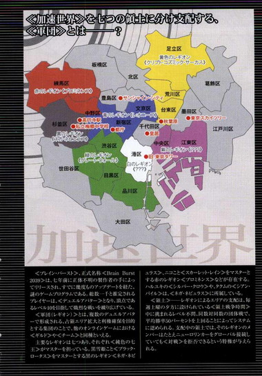

| [川原礫]アクセル・ワールド05 | |
| 川原礫 | |
| (2015) | |
|
アクセル・ワールド５ ─星影の浮き橋─
川原 礫
|
底本データ
一頁17行 一行42文字 段組１段
「二重山括弧」は「山括弧」に置換え注略。
アクセル・ワールド５
─星影の浮き橋─
中学内格差の頂点・能美征二による謀略は去った。〈スカイ・レイカー〉も加速世界に復帰し、これにより黒雪姫率いる〈ネガ・ネビュラス〉は、他の軍団に見劣りしない勢力となっていった。
とある日、ハルユキは軌道エレベータ〈ヘルメス・コード〉に日本の〈ソーシャルカメラ・ネットワーク〉が導入されるというニュースから、新たなるゲーム・ステージの気配を察知する。
〈宇宙〉ステージ。
そこに辿り着いたハルユキは、〈謎の運営者〉から提供された、〈ブレイン・バースト〉史上でも最大のミッションイベントを体感する──！
「......鴉さん。これは、どういう、ことですか？」
それはさておき、同時進行で発生していたのは、黒雪姫とハルユキのお泊まりイベントで、さらにそこに〈スカイ・レイカー〉ことフーコさんも乱入してきて!?
川原 礫
先日、肩を変なふうに曲げたらピキッってなって動かすと痛い......という話を実家で父親にしたところ、「それ四十肩」と言われました。それ以来、人生について考えています。
イラスト：ＨＩＭＡ
10月３日生まれ。挿絵は今シリーズが初のイラストレーター。『電撃萌王』小冊子への寄稿を見た文庫編集者が、今回の挿絵依頼をオファーしたことがきっかけ。本業仕事の合間を縫って、ブログやＳＮＳサイトなどでイラストを発表している。

〈加速世界〉を七つの領土に分け支配する、〈軍団〉とは───？
〈ブレイン・バースト〉、正式名称〈Brain Burst 2039〉は、七年前に正体不明の製作者の手によってリリースされ、すでに幾度ものアップデートを経た、謎のゲームプログラムである。総数一千と推定されるプレイヤーは、〈デュエルアバター〉となり、頂点であるレベル10を目指して熾烈を戦いを繰り広げている。
〈軍団（レギオン）〉とは、複数のデュエルアバターで形成される、占領エリア拡大と利権確保を目的とする集団のことで、他のオンラインゲームにおける〈ギルド〉や〈チーム〉と同種といえる。
主要なレギオンは七つあり，それぞれ〈鈍色の七王〉がマスターを担っている。黒雪姫こと〈ブラック・ロータス〉をマスターとする黒のレギオン〈ネガ・ネビュラス〉、ニコこと〈スカーレット・レイン〉をマスターとする赤のレギオン〈プロミネンス〉などが存在する。ハルユキの〈シルバー・クロウ〉や、タクムの〈シアン・パイル〉は、〈ネガ・ネビュラス〉に所属している。
〈領土〉──レギオンによるエリアの支配は、毎週土曜の夕方に設けられている〈領土戦争時間〉中に挑まれるレベル不問、同数対同数の団体戦で、平均勝率50パーセントを上回ることによってシステムに認められる。支配中の領土では、そのレギオンのメンバーはたとえニューロリンカーをグローバル接続していても〈対戦〉を拒否できるという特権が与えられる。
アクセル・ワールド 05
星影の浮き橋
■黒雪姫（クロユキヒメ）＝梅郷中学の副生徒会長。清楚怜悧なお嬢様。その素性は謎に包まれている。学内アバターは自作プログラムの『黒揚羽蝶』。デュエルアバターは〈黒の王〉『ブラック・ロータス』（レベル９）。
■ハルユキ＝有田春雪（アリタ・ハルユキ）。梅郷中学二年生。いじめられっ子で太り気味。ゲームは得意だが、内向的。学内アバターは『ピンクのブタ』。デュエルアバターは『シルバー・クロウ』（レベル５）。
■チユリ＝倉嶋千百合（クラシマ・チユリ）。ハルユキの幼馴染。お節介焼きな元気娘。学内アバターは『銀色の猫』。デュエルアバターは『ライム・ベル』（レベル４）。
■タクム＝黛拓武（マユズミ・タクム）。ハルユキ、チユリとは幼少期からの知り合い。剣道が得意。デュエルアバターは『シアン・パイル』（レベル５）。
■スカイ・レイカー＝旧〈ネガ・ネビュラス〉に所属していた凄腕のバーストリンカー。とある事情により隠匿生活をおくっていたが、黒雪姫とハルユキの説得により戦線に復帰する。ハルユキに〈心意〉システムを授けた。
■ニューロリンカー＝脳と量子無線接続し、映像や音声など、あらゆる五感をサポートする携帯端末。
■学内ローカルネット＝梅郷中学内に構築されたローカルエリアネットワーク。出席確認や授業などに利用され、梅郷中の生徒は常時接続が義務となっている。
■グローバル接続＝世界中のネットと接続する行為。梅郷中学内ではグローバル接続は禁止されており、その代わりに学内ローカルネットが提供されている。
■ブレイン・バースト＝黒雪姫からハルユキに転送されたニューロリンカー内のアプリケーション。
■デュエルアバター＝ブレイン・バースト内で対戦する際に操るプレイヤーの仮想体。
■軍団＝レギオン。複数のデュエルアバターで形成される、占領エリア拡大と利権確保を目的とする集団のこと。主要なレギオンは七つあり、それぞれ〈純色の七王〉がレギオンマスターを担っている。
■通常対戦フィールド＝ブレイン・バーストのノーマルバトル（１対１格闘）を行うフィールドのこと。現実さながらのスペックを持つが、システムはあくまで一昔前の格闘ゲームレベルのもの。
■無制限中立フィールド＝レベル４以上のデュエルアバターのみが許可されるハイ・プレイヤー向けのフィールド。〈通常対戦フィールド〉とは段違いのゲームシステムが構築されており、その自由度は次世代ＶＲＭＭＯにも全くひけを取らない。
■運動命令系＝アバターを制御するために扱うシステム。通常はすべてこのシステムによってアバターは操作される。
■イメージ制御系＝自身が強く想像（イメージ）することによってアバターを操作するシステム。通常の〈運動命令系〉とはメカニズムが大きく異なり、扱えるものはごく少数。〈心意〉システムの要諦。
■心意（インカーネイト）システム＝ブレイン・バースト・プログラムのイメージ制御系に干渉し、ゲームの枠を超えた現象を引き起こす技術。〈事象の上書き（オーバーライド）〉とも言う。
■加速研究会＝謎のバーストリンカー集団。〈ブレイン・バースト〉をただの対戦ゲームとしては考えておらず、何事かを企む。〈ブラック・バイス〉、〈ラスト・ジグソー〉が所属している。
１
いっそ、東京の空を全部アーケードで覆ってしまえばいいんだ。
透水性舗装タイルが吸い込みきれない水溜りを避けて歩きながら、ハルユキはやけくそ気味な思考を巡らせた。
昔から雨は嫌いだ。ニューロリンカーの通信接続レベルがわずかとはいえ下がるし、仮想デスクトップを操作する手の片方が傘に塞がれるし、それでなくてもしっとりしがちな全身が尚のこと湿ってしまう。
下校路の赤信号で立ち止まり、傘の縁から見上げると、今日はいちにち降りっぱなしだったというのに空はまだまだ水分を湛えて鉛色に沈んでいた。視界の右端に、ニュースのヘッドラインと並んで表示された降水確率予測は、明日朝まで80だの90だのと景気のいい数字を並べている。梅雨前線はとうぶん関東から離れるつもりはないらしい。
ひとっ飛び、あの雲の上まで突き抜けたらさぞ気持ちいいだろう。どこまでも広がる真っ白い雲海と群青色の空、そして強烈に輝く太陽。〈暴風雨ステージ〉でなら何度か見た光景だが、もちろん現実世界では経験がない。
せめて想像してみようと、爪先立ちになって仮想の羽根をぱたぱたしていると──。
「青になってるよ！」
ばちこーん、と背中を叩かれ、ハルユキはつんのめるように横断歩道に踏み出した。あやうく転倒を回避し、照れ隠しに早足で歩きながら横に向かって言う。
「......オッス」
「おっす」
鮮やかな黄緑色の傘をくるくる回しながら答えたのは、同じクラスの倉嶋千百合だった。雨天の憂鬱さなどまるで感じていない、というよりも楽しんですらいるかのように、撥水素材のスニーカーでぱしゃぱしゃ音を立てている。
「新しい傘買ったのか？」
見覚えのない持ち物にそう訊ねると、幼馴染は猫っぽい瞳を照れくさそうに瞬かせて頷いた。
「うん。......皆まで言うな、言いたいこと解ってるから！こういう小物の色とか、どうしても引き摺られるよね。アバターに」
「そうなんだよな......。オレも気付くとメモカ入れとか直結ケーブルとか銀色だからなー」
二ヶ月前、四月にバーストリンカーになったチユリのデュエルアバター、〈ライム・ベル〉の装甲は名前のとおりライムグリーンだ。彼女自身は、その色に当初あまり馴染めなかったようだが、気付けばトレードマークの大型ヘアピンを含め、所持品の幾つかが明るい緑に変化している。
「でも、ニューロリンカーまではやめとけよ。リアル割れの原因に、もしかしたらなりかねないからな」
細い首に装着されたＶＲデバイスの、ペールパープルの外装を見ながらそう言うと、チユリはぷくっと頬を膨らませた。
「何よ、ハルもタッくんも黒雪先輩も、みんなアバター色のニューロリンカーじゃない」
「お......オレは昔っからこれ使ってるじゃないか。次に機種変する時は違う色にするよ」
「ど────せピアノブラックでしょ」
じとっ、と横目で睨まれ、思わず眼を泳がせる。
幼馴染はやれやれという表情で笑うと、真新しい傘を後ろに傾け、縁越しに空を見上げた。
「しっかしよく降るわねえ」
「ほんとッスよ......。そいやお前、部活は？」
ハルユキは、陸上部のチユリと帰宅部の自分が下校路で一緒になるなど普段まったくないということに遅まきながら気付き、首を傾げた。するとチユリは、肩をすくめてつまらなさそうに答えた。
「いつもは、雨が降ったら体育館で筋トレか屋内プールで遠泳なんだけどね。今日はどっちも他の運動部で満杯だったから、ウチはお休みになっちゃった。タッくんとこの剣道部は専用の道場があってズルイよねー。......あーあ、一日でも体動かさないと筋肉ナマる感じして気持ち悪いのにさー」
「へえ、そんなもんかね......」
アスリートとは対極の人種であると自負するハルユキは、少しばかり感心して呟いた。
それを聞いたチユリは、何かを思いついたように瞬きすると、いきなり一歩近づいてハルユキの腕に手をかけ──突然の物理的接触にどぎまぎするハルユキの顔を覗き込んで、言った。
「そーだハル、あたしと運動しよ」
「は......はぁ!?」
ぎょっと眼を剥き、口をぱくぱくさせてからどうにか訊き返す。
「う、運動って......どこで......どのような......」
「......何その反応。あ、あー、何かヘンなこと考えてるでしょ！」
再びじとっと視線を浴びせておいてから、チユリはからかうような笑みを浮かべた。
「あたしはただ、タッグで〈対戦〉しに行こーって思っただけなのになぁー。他にどんな意味が有り得るんですかねえ有田せんせー」
「お、オレだって当然そのつもりだったもんね」
わざとらしく咳払いしてから、ハルユキは平静を装って続けた。
「つまり、どこの戦域で、どんなルールで戦るか、っていう意味だし」
「へー、ほー、ふーん」
幸いそこで容疑者を保釈する気になったらしく、チユリは表情をくるっと笑顔に変えて、道の先に見えてきた中央線の高架を傘で指した。
「まだ早いから、新宿まで行ってみよ。都庁の展望台なら、もしかしたら雲の上かも」
「んなわけないと思うけどな......。まあ、いいけどさ」
肩をすくめて答えながら、ハルユキは右腕にかかったままのチユリの手の重みを改めて意識した。
有田春雪と倉嶋千百合は、十四年前の二〇三三年に、同じ北高円寺の複合型高層マンションで生まれた。部屋が二フロアしか離れていなかったこともあり、乳児の頃からほとんど双子のきょうだいのようにして育った。
マンションの巨大さゆえ、もちろん同年代の子供たちは他にもたくさんいた。しかし、今日に至るまでずっと仲のいい友達でいられたのは、チユリの他には別棟に住む黛拓武だけだ。
タクムは、ハルユキたちとは違う小学校に進んだため、むしろ屈託なく付き合うことができた。そして同じ学校に通いながらもチユリとの関係が変わらなかったのは──ひとえに彼女の強さと優しさゆえ、だろう。
小学校で上級生からイジメの標的にされ始めた頃、ハルユキは惨めな自分を見られるの嫌さにチユリと距離を置こうとした。しかしチユリは頑なに離れようとしなかったし〈いじめられている子と仲良くし続けること〉が、あの年代の小学生にとってどれほど大きなプレッシャーとなるか、今ならハルユキにも解る。なのに彼女は五年生になるまで毎日一緒にマンションまで帰り、タクムも誘ってゲームや探検ごっこで夕暮れまで遊び続けた。三人で過ごした放課後の時間は、今では黄金の色彩を伴ってハルユキの深いところに記憶されている。
──いや、それは、もしかしたらチユリにとってもそうなのかもしれない。
なぜなら、チユリのデュエルアバター〈ライム・ベル〉が持つ擬似回複能力のリソースとなっているのは、恐らく......。
「電車きたよ」
と肘をつつかれ、顔を上げると、いつの間にか中央線のホームに到着していた。西から近づいてくるオレンジ色の車両を見て、「うん」と頷いてから、ハルユキは小声で付け加えた。
「......んがとな、チユ」
「え、何か言った？」
短めの髪を揺らしてくるっと振り向く幼馴染の姿に、なぜかぎゅっと胸の奥を掴まれたような感覚をおぼえ、ハルユキは慌てて首を振った。
「な、なんでもない！ おっ、座れそう！」
電車に飛び込むハルユキを、聞き慣れた呆れ声が追いかけた。
「あのねえ、たった二駅じゃない！」
新宿駅西口の地下から伸びる動く歩道で都庁まで移動すると、二人は最上階展望台行きの直通エレベータに飛び乗った。
ぐぐっ、と一瞬の加速感が訪れ、消える。壁のデジタル階数表示が物凄い速度で切り替わる。すぐに壁がコンクリートからガラスに変わり、早速飛びついたチユリが声を上げた。
「うわー......、すっごい、灰色......」
「雨でよく見えないな......」
予想されたことだが、南側に広がっているはずの巨大都市の夕景は、降りしきる雨のカーテンに遮られてほとんど見通せなかった。しかも階が上がるにつれて霞のようなものがガラスにまとわりつき、視界をいっそう閉ざしていく。
すうっと体が浮き上がるような感覚を伝えながらエレベータが減速し、やがて到着のアナウンスとともに停止した。開いた扉の先は、白一色に染まっていた。
三〇年代に建て替えられた東京都庁ビルは、高さ五百メートルに達している。東京に、と言うより日本にこれより高い建築物は、墨田区の東京スカイツリーしか存在しない。だがあちらの第二展望台は高度四百五十メートルなので、実際にはこの都庁最上階が、東京都心で最も空に近い場所、ということになる。
エレベータから駆け出したチユリは、正面の巨大な窓ガラスに両手を当てると言った。
「うわー............。すっごい、真っ白......」
「こりゃもう雨っていうより雲の中だな」
苦笑しながら、ハルユキはチユリの隣に立った。窓は、まるで向こう側から分厚い綿で覆われているかのように乳白色に光っているだけだ。
「残念だったな、空見えなくて」
言うと、チユリは尚も諦め悪く窓の上のほうを睨みつけていたが、すぐに振り向いて笑った。
「ま、いいわ。お陰で貸し切り状態だし」
確かに、この悪天候の中、しかも平日の夕方に展望台に上がろうという物好きはそうそういないようで、通路の左右に人の姿はなかった。チユリはいきなりハルユキの右腕に自分の左腕をひっかけ、ぐいっと引っ張って叫んだ。
「せっかくだから一周しよ！」
「うっ、う、うん」
このところ、チユリ相手なら肉声でもどうにか昔のように普通に喋れるようになりつつあるハルユキだが、ちょっとくっつかれるとたちまち口と舌の挙動が怪しくなる、そんなハルユキを見てくすっと笑うと、チユリは展望フロア外周の通路を時計回りに歩きはじめた。
当然ながら、どれほど進もうとも窓の外の光景は変わらない。貼り付く水滴群の向こうに、白い雲の塊がうねっているだけだ。それでもチユリは不満な顔ひとつ作らず、リズミカルに足を動かしている。
この幼馴染との関係は、現在少しばかり把握しづらい状況にある。二ヶ月前、とてつもなく辛く苦しいひとつの戦いが終わった直後、チユリはハルユキとタクムの首を両腕で抱え、泣きながら叫んだ。二人とも大好き、と。
以来彼女は、その態度表明どおりに、ハルユキともタクムとも一切の屈託なく喋り、触れ合おうとし続けている。そう──まるで、毎日暗くなるまで三人で遊びまわったあの頃に時間を巻き戻そうとするかのように。
「そーだ、ハル」
不意に名前を呼ばれ、ハルユキはハッと顔を上げた。
「な、なに？」
「どうせ対戦しにきたんだから、もうグローバル接続しよ。そうすれば、窓の向こうに観光案内タグが出るでしょ」
「ああ......、そっか」
二人は今、ニューロリンカーをグローバルネットから切断している。新宿区は青のレギオン〈レオニーズ〉の領土なので、接続しっぱなしだといつ他のバーストリンカーに乱入されるか解らないからだ。
仮にここが路上なら〈対戦待ち受け状態〉にするのは危なっかしいが、しかし確かに、こんな人のいない展望台でならいつ自動加速しようともさして問題はない。ハルユキは頷き、まず〈ブレイン・バースト〉のコンソールを開いてライム・ベルとチームを組んだ。これでマッチングリスト上では二人がタッグであると明記され、挑んでくる相手もほぼ二人組に限定される。その後、チユリと同時にニューロリンカーをグローバル接続する。
途端、視界いっぱいに、無数の小さなホロタグが浮き上がった、晴れていれば一望できるはずの名所や大型建築物の案内表示だ二人は東を向いていたようで、すぐ近くに新宿駅やサザンテラス、その向こうに歌舞伎町の名前もある。
「......やっぱ、タグだけ見てもあんま面白くないね」
とチユリが苦笑いした時、天気の神様が二人を憐れんだか、一瞬分厚い雲が途切れ、眼下に東京都心の夕景がさっと広がった。
わあ、と歓声を上げてチユリが窓に飛びつく。ハルユキも慌ててその隣に並ぶ。
高度五百メートルから肉眼で見下ろす巨大都市は、約五百年の歴史を織り込んだタペストリーであるかのように、混沌たる姿を横たえていた。新宿駅周辺では最先端の積層構造市街が眩く輝いているかと思えば、そのすぐ奥には前世紀から何ら変わらないのであろう新宿御苑や赤坂御用地が薄闇に沈んでいる。
そして更に東の彼方には、銀河の中央に存在するという大型ブラックホールを思わせる、いっそう黒々とした広大な空間──皇居が存在した。
現実世界ではもちろん立ち入ることのできない場所だし、またハルユキたちバーストリンカーも皇居内部の映像には触れられない。なぜならあの空間のセキュリティシステムは、現代日本では至極例外的に、ソーシャルカメラ・ネットワークと接続していないからだ。それゆえ、加速世界の〈無制限中立フィールド〉に存在する皇居は、他の名所のようにカメラの映像から現実の姿を再現することができず、代わりに魔城めいたオリジナルの構造物として常に存在している。
しかし、ならば逆はどうなのだろうか。
ブレイン・バースト・プログラムは、今のところ日本国内の全ソーシャルカメラ・ネットをハッキングしてフィールドを生成できることが確認されている。本州と地続きではない沖縄県すらもその範囲に含まれ、かつて黒雪姫は、無制限フィールドの沖縄から東京まで延々海上を走破したほどだ。──ということは、もしソーシャルカメラに監視された場所が日本国外にも存在するとしたら。バーストリンカーはそこに〈行ける〉のだろうか......？
「......なあ、チユ」
ハルユキは、ぼんやりと東の彼方を眺めながら呟いた。
「ん、なあに？」
「最近さ、ニュースで、ソーシャルカメラ技術の輸出どうこうって話を......」
聞かなかったっけ？
という疑問を、ハルユキは最後まで言い終えることができなかった。
バシイイイッ！ という聞きなれた効果音が耳を叩き、同時に視界が暗転した。自動加速──つまり、新宿戦域にいるバーストリンカーの誰かが、マッチングリストに出現したハルユキとチユリのタッグチームを発見し、さっそく〈対戦〉を申し込んできたのだ。暗闇の中央に、【ＨＥＲＥＣＯＭＥＮＥＷＣＨＡＬＬＥＮＧＥＲＳ!!】の炎文字が赤々と燃え上がる。
直前までの思考を、久々のエリア外デュエルの興奮が一気に押し流していった。
２
白銀の装甲に包まれた両脚が、苔むした太い枝に着地した。
顔を上げると、視界は直前までの雨の摩天楼から一変していた。空は奇妙な薄紫色に染まり、あらゆる高層建築は節くれだった巨大樹へと変貌している。木々の間には太い蔦が何本も垂れ下がり、その間をゆるやかに飛翔する翼竜めいたシルエットが幾つも見える。
もとは新宿都庁だった、恐ろしく高い樹の天辺付近の枝から下界の密林を見下ろし、ハルユキはぼやいた。
「うっへ、〈原始林〉ステージか。苦手だなぁ」
するとすぐに傍らから声が返った。
「何でよ、綺麗じゃない。〈荒野〉とか〈世紀末〉みたく殺伐としたマップよりぜんぜんマシだわ」
言葉の主は、もちろんエメラルド色の半透過装甲をまとった〈ライム・ベル〉だ。大きな三角帽子の鍔の下で、つぶらな両眼を輝かせている。
「そりゃ、見た目は楽しいけどさー。空飛んでても、遮蔽物が多すぎて地表がぜんぜん見通せないんだよココ......」
「泣き言いわない！ たまには地面で戦う練習もしときなさいよ」
「へいへい」
左手の巨大ベルでごつんと背中をどつかれ、ハルユキは頷いた。
原始林ステージの特徴は、うっそうと茂る植物群のせいで視界が極端に悪いことと、小動物オブジェクトがやたらと多いことだ。いや、森には巨大な肉食獣も少ないながら棲息しており、そいつらの介入も計算に入れて戦略を立てなくてはならない。
ステージ属性を脳裏で復習しながら、ハルユキはちらりと視界右上に並ぶ二本のＨＰゲージを確認した。
対戦を挑んできたのは、レベル５の〈フロスト・ホーン〉及びレベル４の〈トルマリン・シェル〉という二人からなるタッグチームだった。どちらの名前もハルユキはよく知っている。青のレギオン、〈レオニーズ〉のアクティブメンバーたちだ。
現在ハルユキはレベル５、チユリが４なので数値的な差はない。しかし、バーストリンカーになったのは向こうのほうが相当に先のはずだ。単純に考えると、レベルアップのペースが速いハルユキたちがより優秀なように思えるが、実は違う。
つまりこういうことだ。バーストリンカーは、性格によって幾つかのタイプに分かれるが、〈勝率を度外視して、どこでもいつでも誰とでもがむしゃらに対戦しまくる派〉と、〈有利不利をしっかり計算し、勝てる対戦で確実に星を取る派〉は、たとえ数字上のレベルが同じでも、その実、見えない部分に大きな差が存在する。
それは即ち、蓄積される戦闘経験だ。どうあがいても勝てない格上や、アバターの属性的に相性が悪い相手に自ら挑んで負けたとしても、その対戦はバーストリンカー本人に、数値化されたポイントとは別の経験値を付与する。戦術や知識、そして何より、苦境で踏ん張るためのハートを。
もちろん、がむしゃら派のプレイスタイルは、クレバー派に比べて効率は悪い。時にはバーストポイントが心許なくなり、無制限フィールドでしんどいエネミー狩りに精を出さねばならなくなることもある。
しかし、最終的に〈上〉に行ける確率が高いのはそういう奴だと、師たる黒雪姫は言っていた。ゆえにハルユキも、対戦すると決めて街に出た時は相手を選り好みしないように意識し、がむしゃら派とクレバー派の中間くらいのスタイルを保っているつもり、なのだが──。
今回挑んできた二人、ことに〈フロスト・ホーン〉のほうは、がむしゃら度ではハルユキをかなり上回る、超当たって砕けろ野郎として有名だった。また、そんな奴だからこそ、ハルユキたちがマッチングリストに出現した直後に躊躇なく乱入してきたのだろう。
視界中央のガイドカーソルの動きから、敵タッグが一直線にこの都庁の樹を目指していると見たハルユキは、相手のスタイルに付き合う腹を決めて口を開いた。
「チユ、こっちも下に降りて短期決戦でいいか？」
すると相棒も、にっと笑って頷いた。
「いいよ。どうせ視線が通らないとあたしのヒールは届かないし、それに最近格闘も練習してるしね！」
左手のベルをぶんと振り、背後にぶら下がっていた硬そうな木の実をまとめて五、六個粉砕する。
かつてそのベルで頭をどつかれたことのあるハルユキは、思わず首を縮めてから、パートナーに手を伸ばした。
「よし、そんじゃ真上から突撃すっか！」
「おっけー」
声とともに差し出された右手をぎゅっと握り、ためらいなく地上五百メートルの枝から身を躍らせる。遥か眼下に薄青く霞む森の一点、ガイドカーソルの示すポイントを目指して、真っ逆さまのフリーフォール。
カーソルは、敵のおおまかな方向しか教えてくれない。ゆえに向こうのチームは、ハルユキたちが頭上から一直線に急接近していることにすぐには気付けない。その隙を確実に突くべく、ぎりぎりまで減速を遅らせる。耳元で空気がびょうびょうと唸り、地上が物凄い勢いで近づいてくる。急降下に慣れたハルユキでも、避けがたく息が詰まる。
しかし、すぐ隣を同じスピードでダイブするチユリは、悲鳴を上げるでもなく両眼をきらきら輝かせている。まったく、驚くべきクソ度胸だ。いや、女の子にその形容は不適切......
などと考えるハルユキの耳に、鋭い囁きが届いた。
「見つけた！ あの赤い巨大花の下！」
慌てて眼を凝らすと、確かに背の高いラフレシアのような植物が密生する奥に、並んで疾駆する大柄な影と細身の影が、ちらりと視認できた。右が、薄青色の重装甲を持ち、額と両肩から巨大なツノを生やしたフロスト・ホーン。左が、スマートな青緑色の装甲に身を包むトルマリン・シェル。
「オレが右のやつ、チユが左な。おもつきしブチかまそうぜ」
早口で言うと、こくりと頷きが返る。
敵はまだ二人とも、ハルユキたちが地表あるいは都庁樹のどこかにいると推測しているはずだ。しかしあと数秒もしないうちに、双方が近接距離に入ってカーソルが消える。その寸前に減速し、攻撃態勢に入らねばならない。
ハルユキは両眼を見開き、全知覚を集中させて間合いを計った。
「いくぞ......減速五秒前、三、二、一、ゼロ！」
きつくチユリの手を握り、カウントと同時に背中の翼をいっぱいに展開する。
シルバー・クロウがまだ地上にいると敵に誤認させるため、必殺技ゲージは敢えて溜めていない。ゆえに翼に推力は生まれないが、しかしパラシュート代わりに使うことはできる。金属フィンが空気を掴み、ぐぐっと強烈なブレーキがかかる。
その反動を利用して体の向きを入れ替える。左足をぴんと伸ばし、ダイブキックの構えに入る。同じ姿勢を取るチユリの手を微妙に引き、そちらの照準もアジャストする。直後、視界から、ガイドカーソルが消滅した。
この瞬間、敵タッグもハルユキたちが予想外の近距離にいることを悟り、地面を削るような制動で急停止。素早く視線を周囲に払ってから、さっと上空を振り仰ぐ。
だがその時にはもう──。
「おりゃあああああああ！」
「と────────う！」
掛け声とともにハルユキは左足、チユリは右足でラフレシアの花弁を蹴散らし、そのままそれぞれの標的へと鋭角に突っ込んだ。
さしもの手練たちにも、無傷での回避は許さないタイミングだった。フロスト・ホーンとトルマリン・シェルが揃って体の前で両腕をクロスさせ、ブロックを固めた。構わずその上から、高度五百メートルぶんの落下エネルギーが乗ったダイブキックをぶちかます。
まるで必殺技が命中したかのような、派手なライトエフェクトと衝撃音が重なって広がった。
「むごっ......」
「ふぬーん！」
ホーンとシェルの口から唸り声が洩れる。腰を落とし、蹴りを跳ね返そうと抗う。二人の両足が緑の地面をがりがりと削り、四本の深い轍を刻む。
だが、いかに大柄な二名とはいえ、これほどの重攻撃をガードし切るのは不可能だった。
拮抗状態はわずか一秒で破れ、ホーンたちは同時に後方へと弾かれた。地面を深く削りながら吹き飛び、ずっと離れた大きな樹の幹に激突する。再度の衝撃エフェクトがステージを震わせ、右上の体力ゲージが揃って三割近くも凹んだ。
ファーストアタックを成功させたハルユキとチユリが、後方宙返りを経て着地すると、遠くから幾つもの声が上がった。
おースゲー、通常技であんなダメージなかなか出ねーぞ、というそれらの歓声は、交戦地点を見下ろす高い枝に三々五々並ぶギャラリーたちのものだ。さすがに対戦のメッカ・新宿だけあって、平日なのに二十人以上もいるようだ。
どよめきが一段落すると同時に、茂みから両脚を突き出してひっくり返っていたフロスト・ホーンとトルマリン・シェルが、がばっと立ち上がった。強烈な被ダメの余韻で少々ふらつくが、すぐに踏みとどまって、順番に大声で喚く。
「ち──っきしょ、オメーら都庁の展望台にいやがったな！あんな雨降ってりゃ何も見えねーだろうが！」
「問題はそこじゃないよホーン君！ デートだよ、この二人デートしてたんだよホーンくうぅぅん！」
「な......、なん......だと......。デートのついでに対戦......だと......!?」
「そういうことだよホーン君！ ぼくたちを倒したあとハグったりチューったりする気なんだよホーンくうう────ん!!」
「ゆ......許せねえ。トリーよ、そんなバーストリンカーを、俺は、認められねえ──っ!!」
事前に台詞合わせをしているとしか思えないこの寸劇に、周囲のギャラリーたちが再びどっと沸いた。爆笑に混じって、そうだそうだ、モテざる者の根性見せろ、と一方的な声援も降ってくる。
呆然と聞いていたハルユキは、慌てて首を左右にぶんぶん振った。
「ち、ちがっ......。で、デートとかそういう」
「悔しけりゃあんたたちも女の子とタッグ組めばいーでしょ！」
──という火に油を注ぐようなチユリの一声が、ハルユキの弁解を上書きした。再びフロスト・ホーンがぐらりとよろめく。
「い......今の、本気でグサッと来たぞ......」
その隣で、両手を腰に当てたトルマリン・シェルが、うんうんと頷きながら言った。
「レオニーズは女の子リンカー少ないからねえ。近接型の集団とか聞いただけで汗っくさいもんねえ」
「納得してる場合じゃねーっ！ こうなったら、ボッコボコに負かしてあいつらを帰り道でちょびっと気まずくしてやるっきゃねえぜ!!」
「うわぁ、それはいかにもセコイよホーンくぅーん！」
「うるせえ！ 漢の！ 生き様！ 見せたるわー！行っくぜぇ......」
再びのコントに唖然としていたハルユキの眼前で、突如フロスト・ホーンが太い両腕を左右に構えた。額と、両の肩から生えたごついツノが強烈な光を帯びる。
「〈フロステッド・サークル〉!!」
技名発声とともに、青白い光の環がツノを中心にしゅばっと広がり、ハルユキとチユリを突き抜けて後方へと拡散した。
避けようのない速度及び射程だったが、光そのものは無害だ。ハルユキたちの体力ゲージは微動だにしていない。
しかし、ハルユキは気を引き締め直し、続く現象を待った。フロスト・ホーンとは領土戦等で何度か戦ったことがあるが、この必殺技を直接喰らうのは初めてだ。確か、敵への直接ダメージではなく、エリアに働きかけ性質を変える技だったはずだ。
きん、きん、という細く鋭い音とともに、周囲の植物群が白く染まり始める。空中をきらきらした光の粒が舞う。それらは全て〈霜〉だ。結晶化した水分が、あらゆるオブジェクトに付着し、氷の衣をまとわせる。
シルバー・クロウの艶やかな鏡面装甲がたちまち曇り、手足や装甲の先端部ほど分厚く霜が降りていくのを見ながら、ハルユキは低く言った。
「ベル、ホーンはオレが相手する。片付くまで、シェルを抑えててくれ」
「オッケ」
短い応答が返った、その直後──。
「うお......らあああ！」
霜のベールの向こうで野太い雄叫びが響き、巨大な影がまっすぐにハルユキめがけて突っ込んできた。
フロスト・ホーンだ。水色の装甲に、ハルユキと同じようにびっしりと霜を付着させている。ことに、額と両肩のツノはひときわ分厚い氷の膜をまとっているようだ。
その右肩の一本を大きく突き出した、猛烈なショルダータックルがハルユキを襲った。腰を落とし、眼を見開いて、回避・反撃のタイミングを計る。
「............くおっ！」
気合とともに、右に飛んで体当たりをかわそうとする。
しかし、付着した霜のせいで普段よりかなり体が重く、始動が遅れた。直撃ではないがツノに擦られ、ガリッ、と左肩に鈍い衝撃を受ける。歯噛みしながら踏みとどまり、すれ違おうとするホーンの横腹に向け、右拳を繰り出す。
だが今度もまた、付加重量のせいでタイミングが狂った。ずっしりと霜をまとわせたハルユキのショートパンチは、命中すれば平時よりも大きなダメージを生んだはずだが、その威力はホーンのボディを小さく掠めただけに留まった。
これが、必殺技〈フロステッド・サークル〉の主たる効果だ。範囲内のデュエルアバターの末端重量を増加させ、スピーディな小技・連続技を阻害する。逆に、一発狙いの大技は威力を増す。また、副次効果としては遠視界が極端に悪くなるために距離を取っての狙撃は封じられ、冷気のせいで熱源ホーミングも無効化される。
つまり、このエリア内ではほぼどんなタイプのアバターもガチンコ大振りのドツキ合いを強要されるという、色々な意味で恐ろしい能力なのである。移動して効果圏内を抜けようにも、霜はホーンを中心として広範囲に発生し続けるので、逃れるのは容易ではない。
遠くでぐるりと反転し、再びツノを使ってのチャージ体勢に入るホーンの影を睨みながら、ハルユキは胸中で呟いた。
──いいさ、付き合ってやる。
ぐいっと両拳及び覚悟を固めるあいだに、離れた場所で対峙するもう二人を一瞥。
相棒のライム・ベルも、同じように全身を白く凍らせている。ことに左手の鐘は何本ものツララをぶら下げ、とても重そうだ。
しかし──。
向き合うトルマリン・シェルのほうは、体のどこにも、一かけらの霜すら付着させていない。細身のボディを覆う滑らかな曲面装甲は、対戦開始時と何ら変わらない、濡れたような青緑色に輝いている。いや、実際に濡れているのだ。まとわりつこうとする氷は、触れた瞬間即座に溶け、滴っていく。
これが、トルマリン・シェルとフロスト・ホーンが好んでコンビを組んでいる理由だ。
あの電気石色の装甲は、衝撃を受けると電荷を帯びて発熱するのである。〈電気系〉や〈炎熱系〉のアバターは数多くとも、継続的に熱を生み出せる者はそうはいない。シェルは、ホーンの必殺技の影響を一切受けない、数少ないアバターの一人なのだ。
ぱち、ぱちと細くスパークを這わせている両腕を手刀に構え、トルマリン・シェルは滑らかな動きでライム・ベルに迫った。中国拳法めいた掌打による近接攻撃が次々と放たれる。ベルは大型の鐘をシールド代わりにがっちりとガードを固める。
かなり高彩度の緑系であるライム・ベルは、メタルカラーに引けを取らないくらいに防御力が高い。そのうえ両腕を分厚く霜が覆っているので、シェルの〈電熱掌〉もほとんどダメージを透せないようだ。ガードに専念している限り、ＨＰをほぼ温存できるだろう。
しかし──それも敵タッグの想定内であるに違いない。
ホーンたちは、もちろんライム・ベルが超稀少な〈回復術師〉であると知っている。両チームの合計レベルがまったく同じこの対戦に於いて、一度でも回復能力を使われれば、敗北の可能性がぐっと高まる。
ゆえに、〈フロステッド・サークル〉の圏内でも自在に動けるシェルが小刻みな連続攻撃でベルを牽制し、その間にホーンがクロウを片付けるという作戦を立ててきたのだ。高空からのファーストアタックは成功したものの、地面に降りて以降の対戦は敵の目論見どおりに推移している。
この状況を打開するには、ハルユキが援護なしにホーンを倒してのけるしかない。
......でも、そんなの、地上で接近戦するって決めた時から判ってたことだ！
刹那の思考の最後をそんな叫びで締めくくり、ハルユキは突進してくるフロスト・ホーンの影に意識を集中した。
さっきの交錯で、付着した霜の重さは体感できた。次はぎりぎりの動きで避けて、きっちりカウンターをお見舞いできるはずだ。
ホーンは、今度は左肩を前に出し、そこのツノを破城槌のように低く構えて突っ込んでくる。恐怖に耐え、じっくりと引きつける。
──ここだ！
先刻よりもほんのわずかに早いタイミングでステップ回避しようと地面を蹴りかけた、その瞬間。
ハルユキの左肩を、鋭いツノの尖端が直撃した。
「うあっ！」
強烈な衝撃に思わず声を上げながら、ひとたまりもなく吹っ飛ぶ。回転しながら地面に激突、そこでも勢いが止まらずに、ぽーんと高く跳ね返る。このまま墜落するとおまけのダメージを貰ってしまうので、それだけは避けるべくなんとか両足から着地する。
とは言えツノによる一撃だけで、ハルユキの体力ゲージは二割近くも減少していた。左肩の装甲には深いくぼみが穿たれ、ぱちぱちと火花が散っている。局所的に大ダメージを貰った時特有の疼痛が神経を駆け巡るが、それよりも大きな驚きをハルユキは感じていた。
タイミングは完璧だったはずだ。銃弾よりは随分と遅いはずのツノ攻撃を、なぜああも見事に喰らってしまったのか。
答えは、少し離れた場所で仁王立ちしているフロスト・ホーンの口から与えられた。
「うはははは！ 驚いたかこの鳥人間！ いつも空から見てたおめーは知らねえだろうけど、俺ちゃんのいかすツノは、〈フロステッド・サークル〉の中に居れば居るほど長く！逞しくそそり立つのだぁーッ！」
「......な、なんだって......」
呆然としながら眼を凝らすと、確かに水色の大型アバターの両肩と額から伸びる円錐形のツノは分厚く氷をまとって、戦闘開始時点と比べるとかなり伸張しているようだ。
しかもそのサイズは今後も刻一刻増大するらしい。つまり、何度タックル攻撃を喰らって間合いを覚えても無駄だということだ。
「どうだ、これが！ 漢の！ 武器ってモンだぜーッ！うははのはーッ！」
ホーンの高笑いに、周囲のギャラリーたちからやんやの喝采と、下品だぞーという突っ込みが降り注いだ。
それを聴きながら、ハルユキは大きく息を吸い、吐いた。
──これは、どうやら僕が間違ってた。
相手を選ばずがむしゃらに戦うことと、自分のスタイルを崩してゴリ押しで戦うことは似て非なるものだ。相手の土俵で何の戦略もなく勝てると思うのは、相手を侮っているのと一緒だ。僕はこの敵に対して、最初から全能力を振り絞って戦うべきだった。また、そうしなければ勝ち目などあろうはずもなかったのだ。
──ここからは、僕も全開だ！
両手で握り拳を作り、それをぐいっと左右に引いて、ハルユキは背中の羽根を展開しようとした。最初の与ダメと今の被ダメで、必殺技ゲージは半分近く充填されている。まずはチユリを回収して上空へと逃れる。そのままフロステッド・サークルが解除されるのを待ち、再度のダブル急降下攻撃でまずトルマリン・シェルから撃破する──。
という作戦を立てたハルユキは、しかし、予想外の現象に見舞われ声を上げた。
「げっ......！」
何と、羽根が開かない。咄嗟に背中を覗き込むと、折り畳まれた金属フィンにびっしりと霜が付着し、それが接着剤となって展開を妨げているではないか。
慌てて両手を背中に回し、霜をこすり落とそうとするハルユキを見て、ホーンが叫んだ。
「うほっ、なんか！ チャンスの！ よかぁ～～ん！」
ぐぐっと腰を落とすと、今度は額の、ひときわ巨大なツノを構えてダッシュの構えを取る。
ショルダータックルでも二割もゲージを削られたのだ。本命らしいあの技は、絶対に喰らうわけにはいかない、と言って、カウンター攻撃を放棄して逃げ回っていてもジリ貧だ。何か何か、何かをしないと──。
「ていやぁ──!!」
という、威勢のいい掛け声が響いたのはその時だった。
一瞬視線を送ると、ライム・ベルが右手でトルマリン・シェルの掌打攻撃をキャッチし、見事なフォームの片手一本背負いで投げ飛ばすシーンが眼に飛び込んだ。
すぽ──んと放られたシェルは、十メートル近くも離れた場所に背中から落下した。しかし、惜しい。この〈原始林〉のような、下が草地や砂のステージでは、投げ技の効果が低いのだ。青緑色のアバターは、大してダメージも受けずにすぐ跳ね起きようとする。
だが、一本背負いの狙いはどうやら他にあった。
チユリは、投げた敵の行く先も見ずに振り返ると、左手の大型ベルを高々と掲げながら叫んだのだ。
「〈シトロン・コ────ル〉!!」
ぐるぐるびしっ、と振り下ろされたベルから、美しい鐘の音とともにライムグリーンの光が迸る。それはまっすぐハルユキ目指して直進し──
左腕のすぐ傍を通り過ぎて、背後の霧の中へと空しく消えた。
「んな............」
愕然としたハルユキの声に、フロスト・ホーンの高笑いが重なった。
「うははー！ 〈サークル〉の中じゃあ光線技は命中率が三割減なんだぜーっ！漢なら！肉体で！戦えぇーい!!」
ごっ、とホーンの足元で白く霜が舞い上がった。強力な踏み切りからの猛ダッシュで、ハルユキ目指して突っ込んでくる。額の長大なツノが鋭く輝く。
敵が肉迫する刹那の時間の中で、ハルユキは思考を全力回転させた。
いかに視界が悪いと言っても、チユリがあの場面で必殺技を外すだろうか？
彼女はあれでかなりの慎重派だ。回復能力を使うなら、確実に成功する場面を待ったはずだ。何より、ハルユキの体力ゲージはまだ二割しか減っていないのだ。燃費が悪い〈シトロン・コール〉を発動するにはタイミングが早すぎる。
つまりチユリは技を敢えて外した、いや、シルバー・クロウではない何かを狙ったのだ。
この原始林ステージに於いて、対戦者以外に戦局を動かしうる要素と言えば......。
そこまで考えが至った瞬間、ハルユキは自分が何をするべきなのか悟った。
かっと両眼を見開き、フロスト・ホーンの突進を待ち受けるよ。腰を落とし、半身になり、避けるべき方向を計算する。
「うお......りゃああああ──！」
ホーンの野太い雄叫びに気圧されたかのように装い、ハルユキは身を翻した。左後方、先刻チユリの必殺技が通過したラインをぴたりとなぞって全速で逃げる。背後から地響きが迫り、背中にちりっとダメージの予感が弾けた──
直後、急制動からありったけの力で真上に向けて地面を蹴った。両手を広げ、背中を反らせて、伸身での後方宙返りでホーンを飛び越し、後ろに回り込もうと試みる。
敵は、シルバー・クロウの翼が使えないと認識している。ならば上への回避は予想していないはずだ。果たして、背筋の中央にヂッと鋭利な切っ先が掠める感覚があったが、それ以上の衝撃を受けることなくハルユキは何を舞った。
逆向きになった視界の中を、大型アバターが一直線に突進していく。
その行く先、白く舞う霜のカーテンの奥に、巨大な楕円形の影が浮かんでいた。
「おわあ!?」
という叫びはフロスト・ホーンのものだ。両手をばたばたさせ、急ブレーキを試みる。しかし足元が半凍結しているためにすぐには停まれない。盛大に霜を蹴散らしながら、丸い影へとまっすぐ突っ込む。
ぱくしゃっ、というような、乾いていながら湿った破砕音が響いた。
巨大楕円球が大きく割れ、透明な粘液が溢れた。その中から這い出てきた何かが、背筋が寒くなるような、ぎいぃぃぃっ！という怒りの声を上げた。
原始林ステージに於いて常に乱入を警戒しなくてはならないもの、それは巨大生物型オブジェクトである。肉食獣や恐竜、さらには捕食植物など色々あるが、基本的にはどの生物も、視界に入ったデュエルアバターを見境なく襲う。
その唯一の例外が、〈タマゴを割ってしまった時〉だ。
卵殻の中での安らかな眠りを妨げられた大型生物は、それをしでかしたアバターだけを五〇〇秒間にも渉ってひたすら狙い続ける。いま、四つの眼を赤く輝かせ、逞しい大顎をがちがち鳴らしてフロスト・ホーンを見下ろしている巨大カミキリムシのように。
あーあ、やっちゃった、というギャラリーの呆れ声が降り注ぐ中、ホーンは両手を掲げて甲殻生物に語りかけた。
「ままま待った！......漢同士、話せば、わかる！」
「ギギギイイィィィ!!」
残念ながらメスのようだった。カミキリムシは長大な触角で周囲のラフレシアをなぎ払いながら、自分の半分ほどしかないアバターを猛然と追いかけ始める。うひいいい！と悲鳴を上げて逃げ惑うホーンの頭上で、がちん、がちんと大顎が何度も空気を咬む。
──無論、こんな恐ろしい結果を引き起こす〈巨大生物のタマゴ〉が、そうそう存在するわけではない。戦略として取り込もうにも、対戦時間中ひたすら探し回って一つも見つけられない可能性のほうが高い。
だが、今回に限っては、タマゴが転がっていたのは偶然ではない。
チユリが造り出したのだ。彼女は対戦中、霧の向こうを移動する大型虫の影に気付いた。そこで、ハルユキを狙うと見せかけて、実際には虫を狙って必殺技を放った。
〈シトロン・コール〉は、真の意味での回復能力ではないし本当は、〈対象の時間を巻き戻す〉力なのだ。擬似的に体力ゲージを回復させもするが、強化外装の変更などもキャンセルするし、ステージのオブジェクトにヒットすればその状態を遡行させる。破壊された物体は元通り復元し──巨大なカミキリムシはタマゴに還る。
当然、平常時ならばフロスト・ホーンも何が起きたか気付き、タマゴには近寄らなかっただろう。しかし、空中を濃く漂う霜が視界を遮り、チユリの狙いを隠した。その結果、ハルユキの誘導に乗せられて正面からタマゴに突っ込み──。
「ひいやああああ──!!」
という甲高い悲鳴と、巨大昆虫の怒りの叫びが西側の深い森、新宿中央公園方向へと遠ざかっていった。〈フロステッド・サークル〉もそれにつれて移動し、周囲がたちまち元の明るさを取り戻した。
パートナーの遁走を呆然と見送ったトルマリン・シェルが、はっと振り向き、ハルユキとチユリを順に見てから叫んだ。
「......ホーンくんのカタキはぼくが取るっ！ か、かかってこおぉぉぉい!!」
もちろん、かかっていった。
「おっつかれーっ！」
満面の笑みとともにチユリが突き出してきた右拳に、ハルユキはこつんと自分の拳を当ててから、東京都庁ビル最上階の通路に並ぶベンチの一つにずるずると座り込んだ。
ふ──っと大きく息を吐き出し、とりあえずグローバル接続を切ってから、虚脱した顔を宙に向ける。
バーストポイント以外の何が懸かっているわけでもない、ノーマルな対戦をひとつ終えただけだが、何だかやたらと疲れた。その理由は、ひたすら地上で格闘し続けるという、いつものスタイルではない戦い方を己に強いたせいだろう。
まったく、〈飛べない〉ことのストレスは砂漠で水のないが如しだ。一学期が始まった頃、一週間以上も翼が使えない時期があったというのに、その経験は飛行への希求をいや増しただけのように思える。
バーストリンカーになってまだ一年経たないハルユキがそうなのだ。六年もの経験がある〈あの人〉なら、もっともっと狂おしいほどの空への情熱を秘め続けていても何らおかしくない。普段の穏やかな物腰からは、そんな気配はまるで感じ取れないけれど......。
「こらー、何ポンヤリしてるのよ！」
ごっつん、と頭をどつかれ、ハルユキは慌てて両眼をぱちぱち瞬かせた。
隣のベンチに座ったチユリが、頬をぷーっと膨らませて、横目で睨んでいる。どうやら話しかけられたのを思い切りスルーしてしまったらしい。
「わ、わりい。なんだっけ？」
「もう一戦くらいする？ って訊いたの！」
という言葉に、ちらりと視界右下の時刻表示を見ると、まだ展望台に登ってから数分しか経っていない。バーストリンカーの対戦は、最大でもわずか一・八秒で終了するので当然と言えば当然だが、ハルユキは少し考え、答えた。
「んー、多分このままのタッグでもっかい待ち受けしても、またホーン・シェル組とのバトルになる気がするんだよな......。まあ、別にそれでもいいんだけどさ」
するとチユリも、猫科の瞳をくるりと回してから首を左右に振った。
「確かに、同じ組み合わせじゃつまんないかもね。でもなー、せっかく二人で来てるのにソロ対戦するのももったいないなあ......」
もし学内ローカルネット用のアバター姿であれば、大きな猫耳をぴこぴこ動かしているであろう表情でしばし考え込んだチユリは、不意にぽんと手を打ち合わせて言った。
「あ、そーだ！ ちょうど新宿なんだから、姉さんに声掛けてみようよ！たしか渋谷の高校でしょ、一駅だし来てくれるかもよ」
それを聞いた途端、ハルユキは少しばかり驚いてしまった。なぜなら、チユリの言う〈姉さん〉とは、先刻ハルユキが思い浮かべていた〈あの人〉のことだったからだ。
彼女の名前は〈スカイ・レイカー〉。ほんの二ヶ月前にネガ・ネビュラスに加入──いや復帰した、黒雪姫の旧友でもある古参バーストリンカーである。
なぜチユリが彼女を姉さんと呼ぶかと言うと、その理由は至極単純だ。チユリの名字が〈倉嶋〉なのに対して、レイカーの本名は〈倉崎楓子〉といい、リアルでの初顔合わせでネームタグを交換した時にハルユキが何気なく、『嶋と崎が一緒だったら姉妹でしたねハハハ』とどうでもいいコメントをしてしまったことに由来している。
ハルユキの反応を待たずに、チユリはそのレイカー姉さんに向けて誘いのメールを打ち始めた。ややぎこちない指使いでホロキーボードを叩く幼馴染に、「やめよう」と言うかどうか、ハルユキは迷った。なぜなら、まず間違いなくレイカーは誘いを断るだろうという予感があったからだ。
確かにレギオンには複帰したものの、スカイ・レイカーはいまだに彼女を縛る罪の意識から解放されてはいない。ずっと昔、リーダーである黒雪姫を見捨てるような形でレギオンを脱退してしまったことを、今も深く悔いているのだ。チユリももちろんその事情を知っている。そして彼女なりのやり方で、レイカーの心を閉ざす扉をノックしようとしているのだろう。
だからハルユキは、開きかけた口を伸び閉じた。
数秒後、メールを打ち終えたチユリは、ニューロリンカーを一瞬グローバル接続させて送信した。再度切断し、しばらく待ってもう一度接続。レイカーからの返信を受け取り、もう一度ネットを切ってから、本文を見やる。
「............ごめんなさい、だって」
そう呟き、顔を上げて小さく笑うチユリに、ハルユキは用意していた言葉を掛けた。
「レイカーさんは高校生なんだし、平日は忙しいんだよ、きっと。週末の領土戦には参加してくれるはずだから、そこで会えるよ」
「......うん、そだね」
幼馴染は大きく息を吸うと、気持ちを切り替えるようににこっと笑い、元気な声を出した。
「そんじゃ、ソロで一回ずつくらい戦ってく？」
「んー、オレはさっきのでけっこう満足しちゃったかな......。チユが物足りなきゃ、もちろん付き合うけど」
ハルユキがそう答えると、チユリも、今度は本心から愉快そうな笑顔を浮かべて頷いた。
「うん、おもしろカッコいい勝ち方できたから、あたしも今日はもういいや。あー、ほんっと気持ちよかった！」
「まーな」
にやっと笑みを返し、さっきのタッグマッチを回想する。
純粋に、アバターそのものの力較べで勝つのも大いに結構だが、何より爽快なのはステージの特性を十全に利用しきった戦略勝ちだ。ましてや劣勢を覆しての逆転勝利などそうそうあることではない。それは、対戦が決着した時のギャラリーたちの沸きようが証明していた。
もちろん、やられたほうの悔しさも二倍増というものだが。
巨大カミキリムシの猛追をどうにか振り切り、戦場に戻ったところをあっけなく集中撃破されたフロスト・ホーンの見事な捨て台詞を、ハルユキと同時にチユリも思い出したようで、二人は揃って短く吹き出した。
「ぷふふ......『次はこっちが東京スカイツリーの天辺から飛び蹴りキメてやっからな！』だって。そんな予告したらさっくり避けられて、そのまま高所落下でエンドだよね」
「それ以前にどうやって登るんだって話だよなー。展望台から天辺のアンテナまでたぶん二百メートルくらいあるし、そもそもそんな高さまでソーシャルカメラが......カバーしてるか......どうか......」
喋ってる間に、ふとひとつの考えが脳裏に閃いて、ハルユキは口を減速させた。
対戦をふっかけられる直前に思い出そうとしていたこと。日本国外への、初のソーシャルカメラ技術の輸出事例。
ヘッドラインニュースでちらりと見かけたその記憶が、ようやく甦ったのだ。
突然黙り込んだハルユキに、チユリがひょいっと首を傾げた。
「......どしたの、ハル？」
「え、あ、い......いや、何でも」
プルプルとかぶりを振ると、チユリは肩をすくめてから勢い良く立ち上がった。
「んじゃ、どっかでお茶して帰ろ。よかったね有田せんせー、ぼこぼこに負けて帰り道であたしと気まずくならなくて！」
ゲームの話はいくらでもできても、こういう台詞には相変わらず思考が瞬断してしまうハルユキだった。
「べっ、別に、負けても別にどうってことないし別に」
もごもご口を動かしていると、エレベータの方向に歩き始めたチユリのくすくす笑いが耳に届いた。はーっとため息をついてから、急ぎ足で後を追う。
窓の外では、相変わらず白い雲だけがゆっくりと流れ続けていた。
３
マンションの二フロア下でチユリと別れ、ひとり無人の自宅に戻ったハルユキは、制服を着替えるや否やリビングのソファにずぼっと座り込み、仮想デスクトップに指を走らせた。
まずブラウザを開き、検索ワードを音声で入力する。
「ソーシャルカメラ、輸出」
即座に表示された検索結果のいちばん上に、そのニュースが存在した。
【ヘルメス・コードに日本の保安システム導入】。
保安システム、とはもちろんソーシャルカメラ技術のこと。
そして〈ヘルメス・コード〉とは──
東太平洋上に建設された〈宇宙エレベータ〉の名称である。
リンクを指でクリックし、記事本文を読みながら、ハルユキは懸命に考えた。
この記事が伝えているのは、かいつまんで言うと、国際施設である宇宙エレベータのセキュリティシステムに、日本のソーシャルカメラ・ネットと同じものを採用するということだ。
そして宇宙エレベータの地上側ステーションが存在するのは、日本から遥か離れたクリスマス島の近海だ。そんな場所にソーシャルカメラが配備されたとして、果たしてブレイン・バースト・プログラムはそこを〈戦域〉に取り込むだろうか？仮にそうなったとしても、ダイブする方法が存在するのか？
約三十秒ほど懸命に頭を回転させたのち、ハルユキはあっさりと努力を放棄した。この疑問に答えを見出すには、あまりにも知識が足りなさ過ぎる。ブレイン・バーストに関しても、そして宇宙エレベータについても。こんな時は、先達に助言を仰ぐべきではないだろうか。そう、あの人なら、どちらの知識も充分に持っているはずだ。
ブラウザを消去し、メーラーを起動してから、しばし躊躇う。
自分の中の、〈純粋に相談したい度合い〉と〈それにカコつけて話したいだけ度合い〉の比率を検討した結果、うーん六：四！と結論づけてハルユキは素早くテキストメールを打ち込んだ。苦手科目ゼロの才媛にして、ブレイン・バーストの最古参プレイヤーたる〈ネガ・ネビュラス〉頭首、〈黒の王〉こと黒雪姫にダイブコールのアポを取るために。
すぐに戻ってきた返信で指定された時間は二十分後だった。その間に冷凍エビドリアと烏龍茶の夕食を済ませたハルユキは、一分前にフルダイブし、自宅ローカルネットの環境データを、海外のサイトからダウンロードしたオブジェクトセットに切り替えた。
以前、同様に黒雪姫を自宅ネットに招待した際、手持ちのセットが素っ気無いのか火薬くさいのしかなくて泡を食ったので、以来あれこれと雰囲気のよさそうなやつを収集しているのだ。母親には、ホームサーバーのストレージ容量を無駄遣いするなと文句を言われてしまったが。
準備万端ととのえ、時間が来るや否や接続要求ボタンを押すと、数秒のコール音に続いて、眼前にひとつのアバターが出現した。
銀色の縁飾りが煌く漆黒のドレス。畳まれた、同色の日傘。背中には赤い模様の入った黒揚羽蝶の翅。
現実世界の姿よりも少しだけ神秘性を増した妖精姫が、まずハルユキの桃色ブタアバターを見て微笑み、次いで周囲をくるりと見回した。
そしていきなり両眼を見開き、声を上げながら勢いよく傍らの柱にしがみついた。
「うっ、うわあ!?」
「へっ!? ど、どうしました!?」
「どど、どうしたもこうしたもあるか！ なな何なんだこの環境データは！」
喚かれ、ハルユキも慌てて周りを見る。
紫に霞む山々の稜線。広大な森や草原と、白い石造りの都市。それらの美しい風景を一望できる、高い高い塔の天辺に二人はいる。直径三メートルほどのごく狭い望楼には手すりも何もなく、中央に椅子が二脚と照明のガス灯が置かれているだけなので、眺めは最高だ。
「あ、あの......き、綺麗じゃないです？この前ドイツのネットで見つけたオブジェクトセットなんですが......」
「それ以前にこのほっそい塔、いったい何メートルあるんだ!?」
蒼ざめた顔でそう訊かれ、ハルユキは塔の縁から真下を覗き込んでみた。地面との距離感は、夕方の対戦で飛び降りた都庁展望台と同程度だったので、そう答える。
「え、ええと......五百メートルくらいかな......」
「高すぎるぞ馬鹿者！ それとも何か、吊り橋効果でも狙ってるのか!?」
「は、はい？ なんです、それ？」
「吊り橋効果というのはだな......高い吊り橋のような危険な場所では、恐怖感が錯覚によって......」
解説の途中で黒雪姫はいちど口を止め、軽く咳払いして再びハルユキを睨んだ。
「......ともかく、私にはもうそんな心理効果なぞ無意味だからな！まあ......対戦じゃないんだから落ちても何事もないだろうが、せめて事前にひとこと言っておくべきだろうこういう時は......」
語尾をぶつぶつと口中に紛らわせ、黒雪姫はようやく立ち上がると、隣の椅子に腰を下ろした。ハルユキもその前に座ってから、ややしょんぼりしつつ訊ねる。
「あの、すいません脅かしちゃって......。他のオブジェクトセットに切り替えます？」
「いや、いいよ。高さはどうあれ、キミが探してきてくれたんだしな」
艶やかな唇に微笑みが浮かぶのを見て、ハルユキはほっと息をついた、丸っこいひづめの生えた右手で頭をかきかき、ともかく挨拶する。
「え、ええと......こんばんは、先輩。急に呼び出したりしてすみませんでした」
「こんばんはハルユキ君。いや、今日は学校で話せなかったから、会えて嬉しいよ」
梅郷中学校では六月の末に文化祭があり、それが現生徒会の最後の大仕事となるため、副会長の黒雪姫は多忙な日々が続いている。それを思い出したハルユキは、これまで何度か感じたことのある疑問をこの機に訊ねてみた。
「そう言えば、先輩はどうして生徒会役員になったんですか？会長と副会長は選挙で決まるはずだから、立候補したってことですよね？」
「ン、まあな。レベル10バーストリンカーになることだけにひたすら拘っている私がなぜ、というキミの疑問はもっともだ。事務だの評議に時間を取られて対戦もままならないしな」
ふ、と意味深い笑みを浮かべてから黒雪姫は続けた。
「しかしズバリ答えれば、役員になったのも全てブレイン・バーストのためさ」
「え......ええ!?」
「考えてもみろ、バーストリンカーにとって、自分の通う学校というのは最も身近で、それゆえに最も危険なフィールドなのだ。その全情報を把握し、足元を固めるのはむしろ必須事項と言っていい。生徒会役員ならば、学内データベースにほぼフルアクセスできるからな。そういう観点では......」
そこで黒雪姫はにこやかにハルユキを見つめ、とんでもないことを口にした。
「二学期の頭にある次期生徒会選挙後が問題と言えば言えるな。どうだいハルユキ君、会長に立候補してみては」
「なっ......ななななんなんなん」
椅子の中で軽く飛び上がってから、ハルユキはブタの鼻を高速水平運動させた。
「むっ、むむむむりむりむりですよ！ そそそんなことしたら、最高裁判事みたく罷免栗が超入りますよ、超！」
「ンー、なら会長にタクム君、キミは副会長にまけておかないでもないが......」
「そういう！ 問題じゃ！ ないです！」
少しだけフロスト・ホーンの口調が感染りつつ断固否定したハルユキは、話題を強引に軌道修正することにした。
「それはともかくですね、僕きょう、新宿で対戦したんですけど......」
「ああ、噂は聞いたよ。〈レオニーズ〉の主力相手に奮戦したそうだな」
「じょ、情報早いですね」
ハルユキがぱちくりと瞬きすると、黒雪姫は笑みを少し皮肉っぽいものに変えた。
「もちろん知ってるとも。チユリ君と息ぴったりだったこととかな」
「い、いやそれはその、あの、えーと」
「どうした？ 別に何も責めてないぞ？ レギオンメンバー同士、連携がいいのは何よりじゃないか」
必殺クロユキスマイルに冷や汗をかきながら、再度の軌道修正。
「そ、その対戦の終わり間際に、相手が『東京スカイツリーから飛び蹴りキメる』とか言ってて、それで僕ふと思ったんですけど！」
素早くブラウザを開き、問題の記事を呼び出して、窓を黒雪姫へと滑らせる。
「あの、先輩、その記事もうご存知でした？」
「......ヘルメス・コードに日本の保安システム？うん、夕方のテレビニュースでちらりと見た気がするが......」
ホロウインドウを一瞥した黒雪姫は、顔を上げると小さく首を傾げた。
「この記事がどうかしたか？」
「えっと......ほんとに、ちょっとした思い付きで......なんか物凄く的外れなこと言うかもしれないんですけど......ていうか、その程度の用事で呼び出しちゃってほんとすみませんって感じなんですけど......」
もごもごもごっと高速で予防線を張ってから、ハルユキはようやく本題を口に上せた。
「その保安システムってのはソーシャルカメラ技術のことですよね。つまり、太平洋の宇宙エレベータが丸ごと〈カメラ圏内〉に入るわけじゃないですか。そうなった時......加速世界にも、ヘルメス・コードが出現するのかな......って......」
そこまで言い終えても黒雪姫がきょとんと眼を丸くしているので、ハルユキは何をバカチンなことをと大笑いされるか、あるいは下らん思いつきで呼び出すなと怒られる展開を覚悟した。
しかし──!!
「............う────ん」
長々と唸ってから、黒雪姫はおとがいに右手の指をあててもう一度ブラウザ窓を凝視した。
やがて顔を上げ、小さく首を振る。
「何と言うか......キミもよくよく素っ頓狂なことを考えるヤツだな。しかし......面白い。うん、実に面白い着想だ......」
「は、はあ」
どう反応していいか判らず間抜けな声を出すハルユキの眼前で、黒雪姫はアバターを椅子から立ち上がらせると、地上五百メートルの恐怖も忘れたかのように狭い望楼の中を左右に歩き始めた。
「仮にソーシャルカメラが配備されたとして......普通ならクローズドネットになるはずだが......ヘルメス・コードのセントラル・ステーションに、あの巨大な映像処理システムを収容する空間的、電力的余力があるかな？それよりは、衛星回線で日本のＳＳＳＣと接続し処理させたほうがずっと効率的だし安上がりだ。だとすれば......ＢＢプログラムならば、その防壁すらもすり抜ける可能性はあるか......」
「あ、あの」
そこでどうにか声を差し挟むと、ハルユキは懸命に短い両手を動かした。
「先輩、僕には何がなんだか」
途端、ぴたりと歩行を停めた黒雪姫は、どう説明したものか迷うように右手の人差し指を揺らしてから言った。
「ン......、つまりだ。ヘルメス・コードは低軌道型の宇宙エレベータだから、設計が物凄くタイトで......」
「低軌道型、って何です？」
「......そこからか」
黒雪姫は軽く苦笑すると、再び椅子に腰掛けた。
こほんと小さく咳払いし、左手で大きな白紙のウインドウを呼び出す。その下側に指先で丸をひとつ描き入れ、中に流麗な筆致で【Ｅａｒｔｈ】と記す。
「それでは、大元から始めよう。宇宙エレベータ、または軌道エレベータというのは、簡単に言えば地球の表面から宇宙までものすごーく高いタワーを建てて、そこを上下するエレベータを使って人や物資を運ぼうというものだ。打ち上げ型ロケットや往還型シャトルとは、重量あたりの運搬コストを比べ物にならないほど低くできる。しかし......」
黒雪姫の指が動き、丸い地球からにょきっととてつもなく巨大な円錐形のタワーが伸びた。
「仮に東京スカイツリーと同じ工法で宇宙まで届くタワーを建てようとした場合、基部の面積はこのように、日本を丸ごと呑み込んでしまうような規模にならざるを得ない。幾らなんでもこんなバベルの塔は実現不可能だ。そこで発想を変える」
ささっとタワーが消され、今度は地球からずっと離れた宇宙空間に小さな四角が描かれた。
「このように、まず地球から三万六千キロメートル離れた静止軌道上にステーションを建設する。そこから、地球表面に向かって強靭かつ軽量なケーブルを垂らしていく。静止軌道を周回する物体の速度は、地球の自転とほぼ完全に同期するので、見かけ上は地球のある一点の上空から動かずに、その名のとおり〈静止〉している。よって......」
四角──静止軌道ステーションからまっすぐ下ろされた線が、地球に接する。
「地上にまで達したケーブルの端を固定してやれば、このように地球から宇宙まで続く塔......というかハシゴが完成する」
「はー、なるほど！」
ハルユキは感心して、右手のひづめでぽんと膝を叩いた。
しかし、すぐに眉を寄せ、ぐりりんと首を横転させる。
「いや、でも、ちょっと待ってください。いくら軽い材料ったって、長さが三万六千キロもあって、しかもエレベータを設置できるほど太いケーブルなら、全体の重さは凄いことになりますよね？それに引っ張られて、静止軌道ステーションが地球に落っこっちゃわないんですか？」
「落っこちる！」
と黒雪姫が即答するので、ずるっと椅子の上でお尻が滑った。
「んな......」
「ならばどうするかと言うと、こうだ」
黒雪姫は、今度はステーションから上方向に線を伸ばし、その先にぐりぐりと黒丸を描きこんだ。
「ステーションが荷重の中心点......つまり重心となるように、上側にもケーブルを伸ばして、その先っぽに重石をくっつけてやればいい。すると、重石が回転する遠心力によって上向きのベクトルが発生し、それがケーブルの作る下向きの荷重と釣り合うわけだ」
「はー、なるほど！」
ハルユキはもう一度感心してから、もう一度首を捻った。
「......で、その重石ってどこから持ってくるんです？」
すると黒雪姫はにやりと意味深な笑みを浮かべ、やや唐突な言葉を口にした。
「──この〈静止軌道型宇宙エレベータ）の構想が、アメリカのＮＡＳＡから発表されたのは実に四十七年も昔、西暦二〇〇〇年のことだ。しかし当時、完成予定とされたのは二〇六二年だったんだよ」
「へっ!? ......ま、まだまだずっと先じゃないですか」
「うんでなぜそんな未来に設定されたかというと......ＮＡＳＡの計画では、地球の近くを通り過ぎる小惑星を捕まえて、静止軌道ステーションから上向きに伸ばしたケーブルにくくりつけて重石にする予定だったからだ」
「はぁ!? しょ、小惑星をつかまえるぅ!?」
「そうさ。六十二年も待てば、お手ごろな小惑星が運よく飛んできて、それを捕まえる技術も開発されてるだろうという訳だ」
「......今から十五年後ですよね？ ............ムリじゃないっすか？」
「ま、ムリだな」
もう何がなにやら解らず、ハルユキは口をぱくぱくさせた。
「......で、でも......。宇宙エレベータ、〈ヘルメス・コード〉はもうあるじゃないですか！完成したのは確か五年前だから、二〇四二年ですよ。ど、どうなってるんです？」
「それはな......」
黒雪姫は、ウインドウに描かれた模式図を掌で拭って消しながら答えた。
「今説明した〈静止軌道型宇宙エレベータ〉が最初期のいわばコンセプト・モデルなのに対して、ヘルメス・コードは、より現実的な形で再計画された〈低軌道型宇宙エレベータ〉だからなんだよ」
「低軌道......型」
「基本的な発想は、静止軌道型と同じだ。だが規模が違う。ヘルメス・コードの中央ステーションが浮いているのは、静止軌道よりもずっと低い場所、地上二千キロメートルなんだ。......と言っても、もう大気圏の外ではあるがね」
「え......ええと、静止軌道が三万六千キロの高さだから......む、むちゃくちゃ近いじゃないですか！」
「近いよ。そのぶん、ケーブルもずっと短く、軽くできるから、釣り合いを取るための重石も小惑星なぞを使わずに済む」
「あ、ああ......なるほど......」
深々と頷いてから、ハルユキは当然の疑問を口にした。
「......なら、なんで最初から、その低軌道型にしなかったんですか？」
「それが、こちらはこちらで問題があってな。低軌道......つまり地上千五百から二千キロメートルあたりに投入された人工物は、静止軌道上よりずっと大きな引力に釣り合うだけの遠心力を得るために、地球の自転を遥かに超えるスピードで周回しなくてはならない。静止軌道型エレベータなら、その周回速度は地球の自転と同期しているのでケーブルの下端を地上に固定できるが、低軌道型はそれができない」
そう言いながら黒雪姫は指を伸ばし、地球を示す丸からかなり近いところに小さな印を打った。
「これが、上空二千キロの軌道上に建設されたヘルメス・コードの中央ステーションだ。そこから上下にカーボンナノチューブを撚り合わせて造ったケーブルが延び、上の端には重石となるトップステーション、下の端にはボトムステーションが接続している」
印から上と下に伸ばしたラインの下端は、地球の輪郭から少しだけ離れていた。その隙間を指で叩き、黒雪姫は続けた。
「このボトムステーションは、地上から百五十キロの高さに浮いているんだよ。それより下げると大気が濃くなりすぎ、摩擦によってエレベータ全体が引っ張られて、やがて落っこちてしまうんだ」
「は──............」
長く息を洩らし、ハルユキはブタ鼻を小刻みに動かしながら、自分の考えをまとめるために言った。
「つまり......ええと、ヘルメス・コードっていうのは、この三つのステーションをＣＮＴケーブルで繋げた長さ四千キロの人工衛星......なんですね？これが地球の回りを、地球の自転よりずっと速いスピードで周回している......？」
「その通り。ボトムステーションの対地速度はマッハ10に達するので、低軌道型宇宙エレベータは、別名〈極超音速スカイフック〉とも呼ばれる」
「でも、なら、東太平洋のクリスマス島近海に建設された......ってのは何なんです？僕、当時のニュースで、でっかい人工島を見た記憶があるんですけど......てっきり、あそこから長い塔が伸びてるのかと......」
「あの島は、ヘルメス・コードのボトムステーションに人や資材を運ぶための、スペース・プレーンの発着基地さ。あそこから飛び立った飛行機が、上空百五十キロでステーションとランデブーして積荷を降ろす。そいつをエレベータで四千キロ上空のトップステーションまで持ち上げ、さらにそこから往還シャトルで静止軌道ステーション、あるいは月面の国際基地まで運ぶという仕組みだ。ちなみに静止軌道ステーションも発着基地の真上にあるから、そういう意味でも〈ヘルメス・コードは東太平洋に存在する〉と言ってもまあ間違いではないな」
「ほふう......」
何度目かのため息を洩らし、ハルユキは改めてウインドウの模式図を眺めた。地球の直径は約一万二千七百キロメートルなので、長さ四千キロというのは林檎と長めのヘタくらいの比率かもしれないが、そんなシロモノが頭上をマッハ10でかっ飛んでいるというのはなかなかに呑み込み難い話だ。
「ううーん、なんか、何かの弾みで落っこちてきそうで怖いですね」
思わずそう呟くと、黒雪姫は軽く肩をすくめた。
「実際、落っことそうとした奴もいたしな」
「は、はい!?」
「何だ、知らないのか？ 確か春先あたりに、観光客に紛れ込んだテロリストが中央ステーションに爆弾を仕掛けようとしたって事件があったろう。そのせいでヘルメス・コードの保安体制を強化することになって、システム構築の国際入札に日本も参加して、今般のソーシャルカメラ技術の初輸出、ってニュースに繋がるんだぞ」
「うは、そうだったんですね。すいません不勉強でした......」
まるで授業中に指名され、ちゃんと答えられなかった時のようにハルユキは首を縮めた。しかし幸い黒雪先生はそれ以上叱ることなく、苦笑とともに解説を加えた。
「低軌道型宇宙エレベータであるヘルメス・コードは、静止軌道型と比べればステーションも小さいしケーブルも細い。設計がタイトなんだ。だからポケットに入るくらいの爆弾でも、爆発の場所によっては大ごとになりかねない。それに、大規模な監視システムを運用するための電力やスペースの余裕もないしな。日本のソーシャルカメラ技術が採用されたのはそのせいだと、私は思うよ。......ああ、これでようやく最初の話に戻れたな」
ふうっと長く息を吐くと、黒雪姫は右手の指を振り、ＶＲ操作メニューを出した。飲み物のグラスを二つ実体化させ、片方をハルユキに差し出す。
しまった本当なら呼び出した僕が用意しなきゃいけなかったのに！と慌てつつも受け取り、口を付けた。無数のフレーバー・パラメータを微調整したオリジナルドリンクらしく、現実世界のどんなジュースとも似ていない、それでいて一切の不自然さがない爽やかな甘酸っぱさが味覚いっぱいに広がる。
「お......おいしいです、とっても」
言うと、黒雪姫は小さく笑ってからアバターの左手をひらりと広げた。
「最近は本物の料理も練習中なんだけどな......。やり直しできない作業というのはまったく厄介なものだな。知ってるかハルユキ君、薄口しょうゆって薄いのは色だけなんだぞ！なんだそりゃ、塩水か!?」
「へ、へえ、知りませんでした。......というか、なぜ突然料理のスキル上げを......？」
「決まってるだろ、いつかキ......」
そこで口をぴたっと閉じ、黒雪姫は盛大に咳払いした。
「......キバラシだ、ただの!? それより、これでやっと本題に入れるわけだが」
やや強引な方向修正に、早口の解説が続けられる。
「ヘルメス・コードに、大掛かりな監視設備を追加搭載する余裕がないことは話したな。そこで、日本のソーシャルカメラの出番になったわけだ。あのシステムは、無数のカメラで撮影した映像を専用の高速ネットで一箇所に集約し、超高スペックのスパコンで自動解析することで犯罪の兆候を検出している。たとえば、どこかのカメラに銃が映ったら、システムは即座にその銃を持つ人間が誰で、どこから来たのか解析し、どこに行くのか追跡し続けるわけだ。その処理を行っている施設、〈ソーシャルセキュリティ・サーベイランスセンター〉が日本のどこに存在するのかは、一切明かされていない」
「え、先輩も知らないんですか？」
ハルユキが本気でそう訊ねると、黒雪姫は最大級の苦笑を浮かべた。
「あのな、私を何だと思ってるんだ。ただのか弱い女子中学生だぞ、そんな最大級の国家機密を知ってるわけないだろう！......ま、推測くらいはしてるけどな」
「どっ、どこです!?」
「ナイショだ。......それより、今説明したとおりソーシャルカメラは、システムのキモである自動化映像解析をＳＳＳＣで集中処理している。つまり、通常の監視カメラには必須の、どでかい記録装置も人間のオペレーターも要らないんだ。その〈軽さ〉が、今回ヘルメス・コードに採用された理由だとすれば......宇宙エレベータのカメラ群と、日本のソーシャルカメラ・ネットは、必然的に接続されるということになる」
ぽかーん、とひたすら話に聞き入っていたハルユキは、黒雪姫が何かを待つように瞬きするので、その『接続される』というひと言こそが、この突発的ダイブコールの主目的であったことをようやく思い出した。
「あっ......そうか、ええと、繋がるってことはつまり、そのぉ......」
ブタアバターの短い両腕をわたわた動かしながら叫ぶ。
「......行けるんですね!? 加速世界のヘルメス・コードに!!」
「ン......、まあ、まだ可能性は無くもないという段階だけどな」
ふ、と悪戯っぽい笑みを滲ませた黒雪姫は、どこか試すような口調で続けた。
「まず、あくまで対戦ゲームであるブレイン・バーストが、そこまで律儀にステージを拡張するかという疑問がある。そして、もし仮にネットが繋がったとしても、どうやってそこまで行く気だい？我々バーストリンカーは原則的に、現実の体が存在する場所にダイブする、つまり、加速世界のヘルメス・コードに行くためには、実際にこちら側で宇宙エレベータに乗り込んでいる必要があるんだぞ。最近は静止軌道ステーションまで行けるツアーパックも発売されてはいるが、たっかいぞぉー」
「......超たっかいですよね......」
ハルユキはしゅんと肩を落とした。翼を持つシルバー・クロウならば、地上でダイブしてから上空のボトムステーションまで飛んでいけるかもと一瞬考えたが、口に出す前に却下する。クロウの到達限界高度はたかだか千五百メートル。対して、ヘルメス・コードはその百倍、十五万メートルもの彼方に浮いているのだ。
いや、それ以前に、地上のスペース・プレーン発着基地があるというクリスマス島まですらも、中学生の小遣いでは到底行けない。
「うーん......つまるところ、スーパーリッチなおうちの子でもない限り、ヘルメス・コードにはダイブできないってわけですか......」
「というか、現実世界の本物に行けるなら、何も加速世界の再構築品にダイブする必要はない気がするぞ」
「そう......ですよね」
はふっ、と今度は感嘆ではなく落胆のため息をつき、ハルユキは空を見上げた。
仮想の青空は、高さ五百メートルの塔の天辺から見てもなお果てしなく遠く思えた。いや、こんなフリー公開されているレベルのＶＲオブジェクトセットでは、たとえこの塔の高さを十倍、百倍にしたところで〈空〉には届くまい。なぜならこの青空には〈その先〉がないからだ。薄いブルーの色彩だけがひたすら続く、閉じた世界。
「......ハルユキ君」
不意に名前を呼ばれ、顔を戻すと、黒雪姫の穏やかな、それでいてどこか謎めいた瞳と視線がぶつかった。
「なぜ、そんなにヘルメス・コードに行きたいんだい？キミが自分の翼で自由に飛べるのに比べれば、宇宙エレベータはしょせん決まった軌道を周回するだけの人工物だぞ」
「え......ええと」
思わぬ問いを投げかけられ、ハルユキは自分のなかの不明瞭な考えを言語化するのにたっぷり数秒を要した。
「その、もちろん単に僕が高いトコ好きだから、って理由もありますけど......もう一つ、もしヘルメス・コードに行けるなら、あの人の望みが少しだけ叶うのかも、って思ったんです。ずっと加速世界の空を、いや〈その先〉を目指していた......あの人の」
それを聞いた途端──。
黒雪姫の双眸がわずかに見開かれ、次いで長い睫毛が伏せられた。
やがて唇から零れた言葉は、ほとんど思念そのものであるかのように密やかだった。
「............そうか」
ぽつりと呟いてから、視線を薄青い空に向ける。
「そうだな......。彼女の空への情熱は、確かに今も消えてはいるまい。私がレベル10を目指すのと同じくらい、いやそれ以上に狂おしく、あの青色の彼方に辿り着きたいと願っているはずだ......」
「............ええ」
こくりと頷き、ハルユキももう一度顔を仰向けた。
あの人──第一期〈ネガ・ネビュラス〉の中核メンバーであるレベル８バーストリンカー、〈スカイ・レイカー〉。
長らく加速世界の旧東京タワーに隠棲していた彼女が、三年の時を経て新生ネガ・ネビュラスに再加入したのは二ヶ月前のことだ。
しかし、それは完全な現役復帰とは少し違う。今日の夕方にチユリの誘いを断ったことが示しているように、一般対戦はまったく行わずに毎週末の〈領土戦争〉に参加するのみで、しかも前線には出ない。常に後方に待機し、拠点防衛に専念している。
もちろん、そのスタイルに関してハルユキや、恐らくタクムや黒雪姫にも不満は一切ない。なぜなら移動手段が車椅子であるスカイ・レイカーは、基本的に舗装路や平滑な地面以外を走ることができないからだ。それに、こと陣地の防衛に関しては、車椅子を自在に操って敵を翻弄しつつ手刀攻撃を繰り出す独自の闘法で立派な戦果を上げている。敵が近接型メインならばほぼ完璧にヒーラーを守り抜くため、アタッカーを一人加えただけの三人チームでも充分戦えるほどだ。
去年の秋から冬にかけて、黒雪姫、ハルユキ、タクムの三人だけで領土戦の一時間をどうにか凌いでいた頃に比べれば、いまのネガ・ネビュラスの戦力は飛躍的に向上している。それは間違いない。
でも、誰一人として口には出そうとしない明確な事実が、一つだけある。
もしスカイ・レイカーが強化外装〈ゲイルスラスター〉の封印を解き、伸びその背に装えば、彼女の戦闘力は今の数倍、数十倍にも跳ね上がるはずだ──ということ。たとえ両脚が欠損したままでも、ブースター噴射による空中ダッシュが大きな攻撃力を発揮するのは、かつてそれで巨大な敵を退けたハルユキが証明している。
しかしスカイ・レイカーは、ハルユキに譲ったゲイルスラスターが戻ってきてからも、たとえ負け戦となろうとも決してそれを召喚しようとはしない。まるで、自らの心が生み出した〈翼〉を頑なに否定するかのように。
「............僕は」
丸いおなかの前で両手をきゅっと握り合わせ、ハルユキは呟いた。
「僕はべつに、あの人がもう一度飛べるようになればレギオンがもっと強くなるとか、そんなこと考えてるわけじゃないんです。ただ......レイカーさんが、もし自分の翼を信じられないでいるのなら、それは違うってことを伝えたいんです。いちど〈ゲイルスラスター〉を貸してもらった僕には解る......あの強化外装は、確かにシルバー・クロウの羽根に比べれば飛行時間が短いし、だから到達高度も低いけど、でも瞬間出力はどんなアバターの加速よりも凄かった。......だから本当は、もっともっと秘められた力があるんだ。僕には、そう思えるんです」
考え考え、懸命に語り終えたハルユキが顔を上げると、黒雪姫のいつになく優しい、それでいてどこか哀切なものを湛えた瞳と眼が合った。
揚羽蝶のアバターはゆっくりと一度頷き、穏やかな声で言った。
「もし、レイカーをヘルメス・コードに連れて行ければ、彼女にそれを伝えられると......キミはそう信じているんだな？」
ハルユキも、ロマンチック過ぎることを言っていると自覚しつつ、小さく頷いた。
「はい。......その、僕の考えてることが合ってれば、ですけど」
「まったく、たまには自信満々で断言したらどうだい」
苦笑をすぐに収め、黒雪姫は一度深呼吸してから、声音を改めて語り始めた。
「──先刻説明したとおり、現実世界のヘルメス・コードは百五十キロもの高空を周回している。ゆえに、新配備されるソーシャルカメラ・ネットが日本国内のものと接続されたとしても、加速世界のヘルメス・コードも当然同じ高さに出現すると思われる、いかなるデュエルアバターも到達しようのない距離だが......しかし、移動手段は無きにしも非ずだと、私は思う」
「え......ええ!?」
甲高い声を上げ、ハルユキは身を乗り出した。椅子から転げ落ちそうになったところを、黒雪姫がハイヒールのつま先で平らな鼻を受け止める。
「あくまで可能性の話だ、もうちょっと落ち着け」
「ふ、ふぁい......」
「いいか、ブレイン・バーストは、その根本のところは謎に包まれているにせよ表層的には対戦格闘ゲームだ。であるならば、その世界に新たなステージが加わった時、そこに誰も行けないなどという状況はいかにも不条理だとは思わないか？」
にやりと笑い、人差し指を誘うように動かす。
「とすれば、よくよく考えて捜した者だけが見つけられる移動方法が、加速世界のどこかにこっそり出現しても不思議はない」
「こっそり......ですか」
「一般のＲＰＧでもよくあるだろう？ ぱっと見では取れなさそうな宝箱だが、よくマップを観察し、頭を働かせればたどり着けるルートが見つかる、なんてことが」
「あー、ありますあります。僕好きですそういうの」
黒雪姫の喩えにこくこく頷いてから、ハルユキはじっと黒雪姫の描いた模式図を眺めた。
上空百五十キロを周回する宇宙エレベータ。そこに行こうと思ったら、スペース・プレーンかロケットを使う以外に方法はない。日本でロケットが打ち上げられている場所と言えば──
「ええと......種子島の宇宙センター、でしょうか」
という意見は、しかし黒髪の一振りで退けられてしまう。
「いや、バーストリンカーの九十九パーセントは東京にいる。ならばポータルも東京に用意されるべきだ」
「で、でも、東京にロケット発射台なんかないですよ！」
ハルユキの声に、黒雪姫はにやりという笑みを浮かべて見せた。
「我々のアバターが現実の物質でできているならばロケットが必要かもしれないがな。しかしそうじゃないだろう？仮想空間に於ける代行体を構成するのは純粋なる〈情報〉だ。そして東京には、日本で最大出力の情報送信施設があるはずだ」
「あ............」
呆然と眼を見開いてから、ハルユキは喘ぐように続けた。
「と、東京......スカイツリー......」
「うむ。もしヘルメス・コードが新たな対戦ステージになるとすれば、そこへのポータルが出現するのはスカイツリー以外では有り得ないと私は思う。そしてそのタイミングは......ソーシャルカメラ配備後、最初にヘルメス・コードが日本に最接近する瞬間......」
ウインドウの模式図を消去し、黒雪姫はブラウザを開くと素早く操作した。ヘルメス・コードの公式サイトらしい、英語満載の画面が表示される。しかし黒雪姫は迷うことなくリンクを次々と辿っていく。
やがて出現した世界地図上の波線を指でなぞり、黒雪姫は断定的な口調で告げた。
「思ったより早いぞ、明後日......六月五日、水曜日の午後五時三十五分だ」
４
梅雨前線がようやく小休止する気になったか、水曜は久しぶりに気持ちよく晴れた一日となった。
六時間目の授業が終わっても空には綿雲がいくつか浮かんでいるだけで、ハルユキは傾き始めた太陽を背に受けながら、早足でひとり高円寺駅へと急いだ。
目的地はもちろん、東京の反対側──墨田区押上の新東京タワー、正式名称〈東京スカイツリー〉だ。約二時間後、その特別展望台に、宇宙エレベータ〈ヘルメス・コード〉への扉が開く......かもしれない。
全てはハルユキの、ほとんど夢想じみた思いつきから始まった話だ。実際、杉並や新宿で観戦に入っても、ヘルメス・コードの噂をしているバーストリンカーは一人もいなかった。ポータル開通の場所と日時を推測した黒雪姫でさえ、二日前のダイブコールの終わり際に、『ま、空振りでもあんまり気落ちするなよ』と付け加えたものだ。
ならばせめて、普段まったく行くことのない〈東東京エリアへの遠征〉というサブテーマも盛り込みたいところだが、残念ながらタクムとチユリは部活の練習、黒雪姫もここのところ文化祭の準備で生徒会室に詰めっぱなし。そして、見知らぬエリアでソロ対戦を吹っかける度胸なぞあるはずないのがハルユキだ。
「......いいさ、空振りだったら秋葉原のレトロゲーム屋でも行けば」
と寂しく自分を慰め、ハルユキは中央線に乗った。
錦糸町で半蔵門線に乗り換え、押上駅で降りると、街並みはいよいよ夕焼けの色に染まっていた。
ハルユキは歩道でぐるりと旋回し、空にそれを見つけた途端、ほふっと息を吐き出した。
東京に住んでいると、なかなか〈東京名所〉には行かないもので、スカイツリーを訪れたのはこれがまだ二回目だ。西陽を受けて黄金色に輝くトラス構造の巨大タワーは、まるで天まで届くはしごのように鋭く屹立している。
全長六百三十四メートル、基部の一辺が七十メートル。建設されて三十五年も経つが、この電波塔はいまも日本で最も高い建築物だった。立ち尽くし、しばしその威容に見入ってしまってから、ハルユキは慌ててタワーへと向かった。
エントランス・ゲートで中学生料金を払い、高速エレベータに乗る。ぐぐっという加速感とともに箱が上昇し始めると、仮想世界で垂直離陸するのとはまた別の高揚が体を包み、一昨日都庁に登った時と同じように、思わずぺたりとガラスの壁に張り付いてしまう。もし隣にチユリがいれば、呆れ声で『ほんっとに高いトコ好きね！』と言ったに違いない。
十数秒後、エレベータは展望台へと到着し、ハルユキと数名の観光客を吐き出した。
さっそく窓際に走りたくなるのを我慢して、ちらっと周囲に視線を払う。平日の夕方とあって、フロアに未成年の姿はごく少ない。居てもデート中らしい大学生か、親に連れられた幼児だけだ。一人で、表面的には目的がなさそうに佇んでいる中高生──すなわち〈バーストリンカーっぽい奴〉の姿は今のところ視界内には存在しない。
もちろん、ニューロリンカーを施設内ローカルネットに接続し、加速してマッチングリストを確認する手もあるが、クローズドネットでそれをするのはわずかながらリアル割れの危険がある。それに、仮にそこで他のバーストリンカーの名前を見つけたところでできることは〈対戦〉しかないし、今日はそれが目的ではない。
ゆえにハルユキは、広い展望台を視線スキャンするにとどめ、改めて西側の窓際へと歩み寄った。
絶対的な高度は新宿都庁の展望台に敵わないとはいえ、晴れた夕空の下に広がる首都の眺めは圧倒的のひと言だった。粒のように小さな建物が敷き詰められた平面のあちこちから、大型の積層ビルが突き出すさまは、まるで旧式の電子基盤のようだ。
視線をまっすぐ動かしていくと、魔都の彼方にうっすらと横たわる富士山の壮麗な姿がある。
その左上に、地平線目掛けて落ちつつある太陽。明日はまた雨になるのだろう、黒々とした雲の帯を従えている。
更に顔を持ち上げていく。茜色から薄紫へと変わる空の色彩が視界を満たす。ちかちかと翼端灯を瞬かせて飛ぶジェット機。のんびりと浮かぶ遊覧飛行船。
──いまこの瞬間、あの空の遥かな高みを、全長四千キロメートルの人造物がマッハ10の極超音速で近づいているんだ。
そう思った瞬間、ハルユキははあっと息を吐き出していた。
──世界は広い。大きい。あまりにも巨視的だ。
僕が空を見上げるのが好きなのは、きっとこの感覚を味わいたいからなんだ。デブで卑屈でちっぽけな自分が、相対的に微視化されてどうでもよく思える、この感じが。つまりは一時的な逃避行為ってことだろう。
シルバー・クロウになって飛んでいる時も、きっとそうだ。あの瞬間、僕は加速世界の途轍もない規模を全身で感じる。あそこにある空間的、時間的な〈無限〉に比べれば、僕が山ほど抱えた悩みですら、地面でささやかに弾ける一瞬のスパークに過ぎない。空に触れている時だけ、僕はそう信じられる。
............でも。
なら、あなたはなぜ空を目指した、いや今も目指しているんですか？僕と同じように、刹那的な解放を味わいたいからじゃないはずだ。その目的なら、現状の能力でも充分叶えられる。いったいなぜ......？空には、あなたが欲しい何があるんですか......？
ハルユキが胸中で呟いた問いは、もちろんもう一人の〈師匠〉であるスカイ・レイカーに向けたものだった。
そしてハルユキは、その答えをおぼろげに推測してもいた。もちろん、正しいかどうかは解らない。いや、正誤があるような問題ではないのだ。レイカーがもう一度自らの翼を羽ばたかせ、空を駆けた時はじめて、答えが現れる。
だから、今ハルユキがスカイツリーを訪れ、ポータルの出現を待っているのはまったく無駄な行動かもしれない。レイカーがいつもの穏やかな笑顔のまま、行くつもりはない、と首を横に振ればそれまでだ。
でも、とハルユキは思う。どんなに深い傷を抱えているとしても、スカイ・レイカーもまたひとりのバーストリンカーだ。ならば、加速世界に新たなフィールドが、しかも空に架かる長さ四千キロもの橋が出現すると知ればきっとワクワクせずにいられないはずだ。
今この瞬間、ハルユキ自身の胸が、どうしようもなく高まっているように。
東京都心の夕景に見入っているうちに、いつしか時刻表示は五時半を回っていた。黒雪姫が正確に割り出したポータル出現予想時刻は、五時三十四分四十二秒。その瞬間、赤道を中心に波型の軌跡を描いて飛翔するヘルメス・コードが、東京に最も接近する。
じりじりしながら続く数分を待ち、五秒前にニューロリンカーをグローバルネットへと接続した。
三秒前に大きく息を吸う。二秒前にぎゅっと両眼をつぶる。そして一秒前に、ハルユキは自分にだけ聞こえる声で叫んだ。
「バースト・リンク!!」
バシィィィッ！
という加速音が全身を叩く。
ゆっくりと眼を開けると、そこは青く凍りついた〈初期加速空間〉だった。窓の外に広がる大都市も、展望台の床や柱も、まばらな観光客たちも、全てが透き通るクリスタルとなって静止している。
桃色ブタのアバター姿で、ハルユキはそっと現実世界の自分の体から離れた。一歩、二歩後ろ向きに進んでから、思い切ってぐるりと振り向く。
広い展望台の中心部は、本来ならばカフェやグッズショップが集まるスペースとなっているはずだった。しかし今、それらは綺麗に消え失せ──ただの、がらんとした平面だけが広がっていた。
どんなに目を凝らしても、ポータルはおろかスイッチひとつ存在しない。ハルユキは十秒近くも立ち尽くしてから、ふうっと息を吐き出した。
──やっぱり、〈宇宙ステージ〉が出現するなんてのは、ただの幼稚な空想だったのか。
心の中でそう呟き、だだっ広い床にぺたりと座り込もうとした、その直前。
いきなり強烈な光と振動音がアバターの全身を叩き、ハルユキは飛び上がった。はっと顔を上げれば、広い平面の中央部で、今まさに巨大なオブジェクトが湧出しようとしているところだった。
広い弧を描く階段が、一段一段床から迫り上がっていく。その先には円形のステージが回転しながら出現し、更に細い円柱が六本、正六角形を描いて屹立する。
透明な柱たちは、内部に青い光を封じ込めている。その光の脈動と同期するように、柱たちの中央から垂直に輝く粒子が立ち上り、天井近くまで伸びてきらきらと美しく輝いた。
「......これが......ヘルメス・コードへのポータル......」
掠れた声で呟き、ハルユキは立ち上がった。直前までの失望を綺麗に忘れ去り、ブタアバターの右手をぐっと握りしめる。やはり推測は間違っていなかったのだ。誰だ、幼稚な空想だなんて言った奴は。
そのまま階段へ走り寄ると、一切の畏れも躊躇いも感じることなく、ひづめのついた脚で段上へ駆け上った。
ぶん、ぶん、と低い振動音を響かせる六本の柱の隙間を通り抜け、円の中心へ。
最後の一歩は、両脚を揃えてぴょんと跳んだ。しかし、その脚が再び床に接することはなかった。
「うわ......!?」
ハルユキは、自分のブタアバターが、無数の光の粒子へと分解されるのを見て声を上げた。いや、それは分解というより還元だ。仮想の代行体が、その本質たる情報へと戻されていくことの証として、白い粒子は全て微細なデジタルコードで構成されている。
と認識した、その直後。
ハルユキの意識は、自分が猛烈な速度で垂直上昇していくのを感じた。しかし離陸に伴うＧはまったく存在しない。ただただ、質量のない光となってスカイツリーの上部構造を突き抜け、空に飛び出し──
そこで視界が完全にホワイトアウトした。
感覚の途絶は、ほんの数秒だった。
まずハルユキは、自分の両足が平面に触れる、カツンという硬い音を聞いた。いきなり体に重さが戻り、思わず片膝を突いてしまう。
うずくまった姿勢で、おそるおそる両眼を開ける。
まず見えたのは、視界左上のＨＰゲージだ。えっ、と思って自分の両手を突き出し、眺める。そこにあったのは、白銀に輝く鋭い五本の指。間違いなく、見慣れた〈シルバー・クロウ〉の腕だ。
対戦が始まっていないのにデュエルアバターになってしまったということは、ここはルール無用の〈無制限中立フィールド〉なのか、と慌てたが、すぐにあることに気付く。緑色のＨＰゲージ中央に、【ＬＯＣＫＥＤ】なる英単語が表示されているのだ。
咄嗟に意味が掴めず、しばし首を捻ってから先送りする。大きく息を吸い込み、ここでハルユキはついに、顔をまっすぐ正面へと持ち上げた。
そして、叫んだ。
「うっ......うわあああああ!?」
仰け反ったはずみでガシャンと尻餅。不恰好なポーズを意識することもなく、眼前の光景を凝視する。
ハルユキが座り込む金属の床は、ほんの一メートル先で途切れていた。その先にあったのは──空。そして雲。その下の地表。
飛行アビリティを持つハルユキにとっては見慣れた光景のはずだ。しかしスケールがまるで違った。あまりにも高い。シルバークロウの飛行限界高度である千五百メートルの何倍......いや何十倍だろうか。空は深い群青色に染まり、雲は遥か下方で細い筋や巨大な渦を作り、海は藍色、陸地は茶色と緑に霞んでいる。こんなところから落ちたら、落下ダメージを受ける前に大気との摩擦で燃え尽きてしまいそうだ。
思わずズリガリと後退り、手すりも何もない縁から三メートルほど遠ざかったところでようやく詰めていた息を吐き出す。屁っ放り腰で立ち上がり、ようやく左右を見渡す。
灰色の金属製テラスは、広い円形をしているようだった。そのラインを追いながら、自然に振り向く。すると──。
輪っか状のテラスの中心部に、湾曲した壁があった。
いや、壁ではない。柱だ。直径百メートルはありそうな、途轍もなく太い柱が、垂直に伸び上がっている。ハルユキは、その柱の根元にフランジ状に広がる床面に立っているわけだ。
「これが......、ヘルメス・コード............？」
囁き声でそう呟き、ハルユキは呆然と、神々の住まう巨塔の如き構造物を見上げた。ステンレスのように鈍く輝く金属柱は、群青から深い藍へと変わる空の彼方へと無限に伸び上がり、先端は消失点に溶けてまったく見えない。
現実世界の宇宙エレベータは、ＣＮＴ繊維を撚り合わせて造ったケーブルを更に数本束ねて造られているはずだ。その太さはせいぜい直径二メートル、柱というよりも綱と表現したほうが正確だろう。
だが、加速世界に再現され、今ハルユキの眼前にそびえる代物は、最早柱ですらなかった。高空に浮かぶ、直径百メートル、高さ数千キロメートルの超大規模タワーだ。いったいなぜ、これほどのサイズに拡大されてしまったのか。
どれだけ考えても答えは見つかりそうになかったが、しかしそれは些細な疑問だと思えた。重要なのは、〈宇宙ステージ〉が本当に存在したということだ。いや、今立っている場所はまだ〈超高空ステージ〉と言うべきかもしれない。ならばこの巨大な塔を登った先にこそ、本物の宇宙空間が待っているのだろうか......。
「思ったよりも、ずいぶん大きい」
右隣で発せられた声に、ハルユキはこくりと頷いた。
「ええ......これに比べると、スカイツリーも爪楊枝ですよね......」
「そのわりに、表面のディティールはほとんど無い。内部構造があるのかしら」
「でも、入り口っぽいものも全然見当たらないですよ......──って」
びくーん。
と全身を硬直させ、そのまま器用に飛び上がってから、ハルユキは右に九十度回転しつつ叫んだ。
「わあっ!? だ、だだだだだれだれだれいいいいいついついつ」
誰だ、いつの間に！
と鋭く誰何したつもりだったが口から出たのは奇妙な連続音だけだった。そんなハルユキを至近距離から無表情に見下ろすシルエットは──。
暗赤色の細身なボディ。逞しい大腿部と前腕。鋭い爪の伸びる手。しなやかに揺れる尻尾。
そして、頭の後ろ側から三角形の耳が突き出したマスクと金色に輝く両眼は、間違いなく、ハルユキが直接知る限りでは最強クラスの近接型デュエルアバターのものだった。
「ぱ......、ぱぱぱぱパドさん!? な、なななんでここここに!?」
〈パドさん〉こと、赤のレギオン〈プロミネンス〉所属のレベル６バーストリンカー〈ブラッド・レパード〉は、ひょいと肩をすくめると答えた。
「あなたがここに居るのと同じ理由」
「へっ......」
相手があまりに平然としているので、ようやく少しだけ落ち着いたハルユキは、遅まきながら悟った。
この場所への転送は、決してハルユキにだけ与えられた特権ではない。ヘルメス・コードへのソーシャルカメラ配備のニュースを知り、加速世界への新ステージ追加の可能性を発想し、更にポータルが出現するであろう場所と時刻を推測し得たバーストリンカーならば誰でも辿り着くことができるのだ。
自分と同じように無鉄砲な空想をし、実際にこうしてスカイツリーまでやってきちゃうプレイヤーがいたことが少し嬉しく、ハルユキはにへっと笑いかけた。しかしすぐにあることに思い至り、体を強張らせる。
ということはつまり、今この瞬間にも新たなアバターが続々と出現してもおかしくないわけだ。慌てて周囲をきょろきょろ眺め回すが、三人目が出現する気配は感じられない。
今更のようにビクつくハルユキに、少しばかり呆れ声でパドさんが言葉をかけた。
「あなたが一番早くポータルに入れたのは、大胆にも展望台で加速したから。私は一階下のトイレでダイブしたので、少し遅れた。他の連中はリアル割れ防止最優先で地上から来るだろうから、もう数分の余裕はあるはず」
「あ......ああ、そっか、そうですよね......」
遅まきながら自分の無謀さに肝を冷やしつつ、改めてハルユキは挨拶した。
「ど、ども、こんにちはです」
ひらりと右手を広げるレパードに、続けて頭を下げる。
「その、いつぞやは大変お世話になりました。事後連絡がメールだけで、直接お礼言えなくてすみませんでした......」
その言葉は、二ヶ月前にハルユキを襲った巨大なトラブルを解決するにあたって、パドさんに大いに助けてもらったことへの謝意だった。豹頭アバターは肩をすくめ、珍しく長い台詞で応じた。
「ＮＰ。あの時はこちらも大いに助けられた。アキバＢＧのセキュリティホールを見つけるのに、あなたの情報がとても役立った。それより......」
ぽんとハルユキの背中を叩き、移動を促す。
「せっかく稼いだアドバンテージは有効に使うべき。柱を一周して調べる」
「け、Ｋです！」
自分の次に現れたのが、別レギオンの所属ではあるが、そのような事情もあって仲良くしてもらっているブラッド・レパードでよかったとハルユキは歩きながらしみじみ思った。これがフロスト・ホーンあたりだったら、ハルユキに声を掛けることもなく後ろから抱え上げ、地上へとポイ捨てしていたに違いない。
幅二十メートルほどのフランジを横切ってヘルメス・コードの柱本体に近づき、手で触れてみても、合金ふうに輝く表面には何の変化も起きなかった。金属板の継ぎ目的なディティールはあるにせよ、とてもよじ登れるような手がかりはない。
パドさんは鋭い爪でかりっと柱を引っかき、傷ひとつつかない硬さを確認すると、すぐに右回りで歩き始めた。ハルユキもその後を追う。何せ柱の直径が百メートルもあるので、湾曲する表面に沿って回り込むのも一苦労だ。ようやく転送位置の東側が見えてきた時、そこに何かが存在することに気付き、ハルユキは声を上げた。
「あっ......、何かありますよ！」
かしゃかしゃと足音を立てて駆け寄る。
そのオブジェクトは、初見では、車とも船とも思えた。長さ六メートルほどの流線型の乗り物が、柱の下部に設置された傾斜台の上に整然と並び、ヘルメス・コードの天辺を睨んでいる。その数、十。
乗り物に屋根はなく、座席部分は完全なオープンスタイルだ。一番前に、透明なウインドウシールドを備えた一人乗りの操縦席。その後ろに二人掛けのシートが二列。タイヤの代わりに四個の大きなディスクが下部に装備され、それが何らかの推進装置なのだと思える。細身の滑らかなボディラインは、本来の意味での〈横糸通し〉と言うに相応しい造形だ。
「な、何だこりゃ......？」
呟きながら、ハルユキは傾斜台に登り、側面に〈１〉とペイントされた左端の一台に近づいた。素っ気ない鉄色のボディは冷たく沈黙し、機関に火が入っている様子はない。
恐る恐る手を伸ばし、ドア部の滑らかなラインをつついた、その途端。
ぴぽん、と軽やかな音とともに紫色のホロウインドウがポップした。一瞬びくっとしてしまってから、慌てて覗き込む。隣でパドさんも顔を寄せてくる。
窓の最上部に、無機質なフォントで記されていたのは──。
【３Ｄ 18Ｈ 25Ｍ 18Ｓ（ＪＳＴ）】なる文字列だった。順に日、時、分、秒を示すのだろうその数字は、明らかに何かのタイムカウントだと思われる。
「ふむ。これがカウントダウンだとすれば、数字がゼロになるのは日本標準時で三日と十八時間二十五分後......つまり日曜の正午ちょうど」
ブラッド・レパードの呟きに、ハルユキも続けて口を動かした。
「その時間に何が起きるんでしょう......？」
しかしパドさんは、問いに答えるかわりに猫科の猛獣めいた指でウインドウ下部を指した。そこにも短いセンテンスが表示されている。曰く、【ＤＯＹＯＵＤＲＩＶＥＭＥ？】。
更にその下には、ＹＥＳのボタンだけがあった。私を運転する？という簡単な英文の意味は解ったが、それでもどうしたものかハルユキが躊躇していると、耳元でせっかち星人のパドさんが囁いた。
「あなたが押さないなら私が押すけど」
「あ、お、押します押します！」
慌てて答え、ハルユキは右手を上げると、意を決してＹＥＳボタンに触れた。
瞬間、短いファンファーレのＳＥが響き、英文の文字が変化した。【ＹＯＵＡＲＥＭＹＤＲＩＶＥＲ！】──あなたが私のドライバーです。
数秒後、文字列はまたしても形を変え、【ＲＥＳＥＲＶＥＤ】の一語のみとなった。同時に、ウインドウ表面からひとつのオブジェクトが滲むように出現した。
それは青く透き通る一枚のカードだった。〈１〉のマーキングの他に、ウインドウにあるのと同じカウントダウンが表示されている。ハルユキがそれを取った途端、次の、そして最後の現象が起きた。
流線型のマシンが、ボディカラーを鈍い鉄色から眩い銀色へと音を立てて変化させたのだ。まるで鏡のようなその色合いが、自分、つまりシルバー・クロウの装甲とまったく同一であることにハルユキはすぐに気付いた。
「なるほどね」
パドさんは得心したように呟くと、〈２〉のペイントがあるシャトルに歩み寄った。ボディに触れ、ウインドウを出し、迷うことなくＹＥＳボタンにタッチする。出現したカードを二本の指でひょいと挟み取ると、今度はボディカラーが深い赤──ブラッド・レパードの装甲色へと一気に染まった。
ハルユキはカードを持ったままパドさんに歩み寄り、改めて訊ねた。
「あ、あの......。僕とパドさんが、この車だか船だかの運転手に登録された......のは何となく解りました。でも、このカウントダウンは何なんでしょう？まだ三日以上もあるんですけど......」
「自明。日曜の正午にカウントがゼロになるまで、このシャトルは動かない」
明快な回答に、なるほどと頷くそばから次の疑問が湧いてくる。
「ははあ......で、でも、なんでまたそんな長い待ち時間を......」
すると、ここでパドさんは珍しく、砲弾型のマスク下部に隠れた口を開き、鋭い牙を光らせてにやりと笑った。
「それも明らか。与えられた三日半は、十台のシャトル全部にドライバー一人とクルー四人を準備するための猶予期間。日曜の正午に、私たちはよーいドンでアクセルを踏み、この柱の天辺を目指す。つまり」
掲げた右手で遥か天頂方向を指し、深紅の豹頭アバターは歌うように言った。
「私たちは、〈ヘルメス・コード縦走レース〉に参加する権利を得たということ」
たっぷり五秒ほどもかけて、ハルユキはその言葉の意味を理解した。
「てことは......つ、つまり......ゴールはこのタワーの天辺、つまり、ううう宇宙!?」
ハルユキの裏返った声に、もちろん、とパドさんが頷いた。
しかしそれ以上何かを言うよりも早く、柱の反対側から立て続けの転送音が聞こえてきた。地階で加速したバーストリンカーたちが、展望台のポータルに辿り着いたのだろう。
パドさんは長い尻尾を一振りすると、それでハルユキの背中に触れつつ囁いた。
「見つかる前に退散したほうがよさそう」
確かに、シャトルが十台しかないのでドライバー登録できるのはあと八人が限界だ。あぶれた者から、権利を対戦で決めようなどと言い出されたら面倒なことになる。
「そ......そうですね」
胸中の驚きを押しやり、とりあえず同意したハルユキの耳に、次なる声が飛び込んだ。
「加速停止したら地上の駐車場出口で待って。バイクで杉並まで送る」
「いっ......」
またしてもびくんと硬直してしまう。脳裏に、リアルパドさんが操る大型エレクトリックバイクの暴力的パワーがまざまざと甦る。
しかしもちろん、いいです遠慮しますなどと言えるはずもなく、ハルユキはこくこく頷いた。
「ああありがとうございます助かります」
「ＮＰ」
そして二人は、声を揃えてコマンドを唱えた。
「「バースト・アウト！」」
久しぶりに会う現実のパドさんは、幸い──と言うべきか残念ながらと言うべきか、ケーキ屋のメイド風制服姿ではなくぴったりしたＴシャツにスリムジーンズという出で立ちだった。
ゆったりしたエプロンを着ていた時は知覚できなかった、タイトフィットな布地を押し上げる思いがけないボリューム感に、思わず視点をさまよわせてしまう。パドさんは無表情のままシート下のメットインスペースから予備ヘルメットを取り出すと、それをがぽんとハルユキの頭に被せてバイクに跨った。今回は自分でハーネスを留めてから、慌ててタンデムシートによじ上り、目の前の細い腰におそるおそる両手を回す。
最初は力の入れ具合を極力遠慮していたのだが、スカイツリーの駐車場から出たバイクのインホイールモーターがきゅいいいいん！と吼え猛った途端。
「............あ────！」
いつかと同様、ハルユキは悲鳴とともにパドさんの体に思い切りしがみ付かざるを得なかった。とは言え、赤信号のたびに繰り返される過激極まるストップ＆ゴーに耐えるのが精一杯で、それ以外の接触感覚情報を気にする余裕などありはしなかったのだが。
墨田区から御徒町、御茶ノ水を抜けて飯田橋に出たあたりで、ハルユキの聴覚にパドさんの声が届いた。
『いま十八時五分前だけど、時間ある？』
『え、は......はい』
ハルユキが母親に設定されている門限は夜九時なので、まだ余裕はある。そんな、中学生にはいささか不適切な時刻まで外にいることを許す理由が、息子を信頼しているからなのか管理が面倒だからなのかは何とも言えない。いちど門限を大破りしてみれば、怒られるかどうかでその答えが解るかもしれないが、そんな度胸があるはずもなくハルユキは答えに『二時間くらいなら』と付け加えた。
するとパドさんは、とんでもないというような声音で呟いた。
『そんな長時間お茶したら、溶けてなくなりそう』
へっ、お、オチャ？
と思う間もなく、大型バイクはウインカーを点滅させながら道路沿いのファーストフード店へと乗り入れた。
ハルユキはここ八ヶ月の間に、黒雪姫とは二十回以上、スカイ・レイカーとも一回この手の店に入ったことがある。しかしながら状況に慣れる気配はまったくなく、そのたびに周囲から『あのミスマッチな組み合わせはいったい何ぞや』という視線が照射されているような気がして冷や汗をかいてしまう。
そういうのを自意識過剰というのだ、誰も他人のことなんか気にしちゃいないのだ、と自分に言い聞かせつつボックスシートにブラッド・レパードと向き合って座り、ハルユキは奢ってもらったてりやきバーガーセットに全力で集中することで、周囲の客を意識から遮断しようとした。
どうやら成功しそう、と思ったのも束の間。
パドさんがベルトポーチから赤いＸＳＢケーブルを取り出し、身を乗り出してハルユキのニューロリンカーにプラグの片方をぐさっと突き刺した。無表情のまま、もう一方を自分に接続。
視界に出現したワイヤード・コネクション警告も、店内の中高生たちが明らかに自分を見てヒソヒソ言い合う光景を隠してはくれず、ハルユキは結局首を縮めて冷や汗をダラダラ流す破目になった。
直結ケーブルの長さが、付き合う二人の進展度を表す──などという俗習をパドさんがまったく意に介していないことは明らかだが、ハルユキのほうはそこまで解脱しておらず、悲鳴混じりの思考音声で訊ねてしまう。
『あっ、あ、あ、あの、なななんで直結』
答えは至ってシンプルだった。
『食べながら話せるから』
............そうですね。と答える以外に、ハルユキは何もできなかった。
パドさんは、宣言どおりハンバーガーをぱくぱく食べつつケーブル経由で話すという高等テクを披露してくれた。これは簡単なようで、つい口でも喋ろうとして舌を噛んでしまう危険が高いのだ。
『日曜のレース、ステージにダイブする方法は解る？』
いきなりそう訊かれ、ハルユキはポテトを齧る口を止めて答えた。
『え......、またスカイツリーのポータルを使うんじゃないんですか？』
『その必要はない。ドライバー登録した時にもらったカードは、〈トランスポーター〉というアイテム。直結してるバーストリンカーを、最大十人まで同時転送してくれる』
『へ、へええ......。じゃあ、杉並に集まってあれを使えば、一気にヘルメス・コードまで行けるわけですか』
『イエス』
それは大いに有り難い話だ。仮に黒雪姫もレースに参加するとなった場合、サドンデスルールに縛られるレベル９ｅｒである彼女が、遥か墨田区で一瞬にせよ外部ネットに接続するのは危険すぎるからだ。
ふうっと息を吐き、ハンバーガーにかぶりついてから、ハルユキは今更のように根源的な疑問が湧き上がるのを感じた。スカイツリーでポータルに飛び込んでからというもの、今の今まで状況に流されまくってしまったが、そもそも──
『......そもそも、なんで急にレースなんかするんでしょう？あのマシンは、プレイヤーの誰かじゃなく、システム......つまりブレイン・バーストの管理者側が用意したものですよね。僕、バーストリンカーになってもう八ヶ月くらい経ちますけど、いままでその手のＧＭイベントは一回もなかったと思うんですけど......』
ハルユキの問いに、パドさんは〇・五秒ほど考えてから答えた。
『確かに、ＢＢの管理者は普段まったく気配を感じさせない。でも、加速世界に大規模なアップデートがあると、今回みたいに一度限りのイベントを行うこともある。たとえば、一昨年に〈東京グランキャッスル〉が開業した時......』
グランキャッスルは、ベイエリアに建設された大規模なテーマパークだ。フルダイブ技術全盛の時代に、あえて〈リアル〉をテーマに本物の石材で中世ヨーロッパ風の城塞都市をぶっ建てて話題をさらった。
『......あそこのソーシャルカメラ・ネットが運用開始されたその当日、加速世界では、都市にひしめくモンスター群を突破して城の玉座を目指すっていうイベントが行われた。私のチームは、惜しいとこで青のチームに大群をなすりつけられて共倒れになった。ホーンの奴、今回出てきたらタダじゃおかない』
めらりと両眼に炎を燃やすパドさんに、思わず首を縮めながらハルユキはどうにか言葉を返した。
『な......なるほど。じゃあ、今回のレースもその......いわば〈新ステージ接続記念イベント〉なんですね？つまり、レースはたった一回しか行われない......？』
『まず間違いない』
ならば、十台しかないマシンのひとつを予約できたのは物凄く幸運なことだったのだ。つい内心で『メガラッキー！』と叫んでしまってから、ハルユキは慌ててその思考を打ち消した。ヘルメス・コードに行ったのは、決してオープンイベントの参加権を得るためではない。あの人──スカイ・レイカーにどうしても伝えたいことがあるからこそ、ハルユキは宇宙エレベータの天辺を目指すのだ。
──では、あるが。
あくまで予備知識として知っておくべきこともあろうと、ハルユキはおずおず疑問を直結回線に流した。
『あの......パドさん。レースってことは、その、一位とか二位に入ったら、何かそのぉ......』
『もちろんある』
ハルユキに最後まで言わせることなく、ブラッド・レパードはあっさり頷いた。
『恐らくはそれなりの額のバーストポイント。あるいは強化外装その他のアイテム。といった賞品が用意されているはず』
『へ......へえー、そうですか』
平静を装おうとしたものの、ごくりと喉を動かしてしまったのが丸わかりだったらしく、パドさんはかすかに苦笑した。あっという間に食べ終わったハンバーガーの包み紙を丁寧に畳みながら、まったく平静な思念で言う。
『過大な期待はしないほうがいい。レギオン間のパワーバランスを崩すほどの額では絶対にないから。それより......』
そこで一瞬間を置き、〈プロミネンス〉の幹部はお下げ髪を揺らしてハルユキに訊ねた。
『あなたのレギオンは、五人全員がレースに参加する？』
『え？ ......ええと、シャトルの定員が五人だから......』
頷こうとした首の動きを、ハルユキはぎしっと停止させた。
いかに仲が良くて、バイクに乗せてくれたりハンバーガーを奢ってくれたりしようとも、パドさんは究極的には〈仲間〉ではない。いつかは黒のレギオンと敵対するかもしれない、赤のレギオンの主力メンバーなのである。その相手に、サドンデスルール下にある黒雪姫の動向を無警戒に教えていいものかどうか。
というハルユキの逡巡をも速攻で看破したのだろう、パドさんはすぐに軽く首を振った。
『別に、この機に乗じて黒の王の首を取ろうってわけじゃない。イベント中はＨＰゲージがロックされるから、そもそも不可能』
『ろ、ロック......？』
繰り返してから、ハルユキはようやく思い出した。確かに、先ほどヘルメス・コードに転送された時、自分のＨＰゲージには【ＬＯＣＫＥＤ】の一語がくっきりと刻印されていたはずだ。
『え、ええと......つまり、レースイベント中は、誰もダメージをくらったり与えたりできないってことですか？』
その問いに、パドさんは一瞬考えるそぶりを見せたものの、すぐに頷いた。
『イエス』
『なら、なんでシャトルのクルーが四人も必要なんです？僕はてっきり、他のチームを攻撃したり防御したりする要員なのかと......』
『それもイエス、多分、シャトル本体にもＨＰゲージが設定されていて、それがゼロになると破壊される。さっき言った、グランキャッスルのイベントもそうだった。正確には、お城最上階の玉座の間に、チームに一つずつ与えられた宝珠を運ぶゲーム。プレイヤーは死なないけど、モンスターや他チームの攻撃でオーブのＨＰが損耗するって設定だった』
ブラッド・レパードの言葉に、感心しながら頷く。確かにそれなら、ＨＰゲージが保護されるというややヌルめの状況下でも熱いレースが展開されそうだ。
『なるほど......、そういう設定なんですね。なら尚のこと、うちのレギオンは五人全員が参加すると思います。でも......なんでそんなことを？』
きょとんと視線を向けるハルユキに、パドさんは、めったにないことだが何かを言いよどむ気配を見せた。
しかし躊躇いはほんの一秒で消え──。
『加速世界には、私にとって大切と思える存在が二人いる』
静かな思念が赤いケーブルに流れた。
『ひとりは私の仕える王。どうしても守りたい人。そしてもうひとりは、永遠の好敵手。ほぼ同時期にバーストリンカーとなり、数え切れないほど戦った〈超空の流星〉、〈ＩＣＢＭ〉......』
それらの二つ名が誰を指すのか、ハルユキは即座に察した。
『......スカイ・レイカーさん......？』
ハルユキの呟きに、ブラッド・レパードはそっと頷いた。
『彼女が戻ってきたと聞いてとても嬉しかった。でも、参加するのが領土防衛戦限定だから、まだ会えていない』
『あ......そ、そうか。そうですよね』
現在、赤のレギオン〈プロミネンス〉と黒のレギオン〈ネガ・ネビュラス〉は無期限停戦中である。ゆえに、赤の主力リンカーであるパドさんが杉並エリア攻撃に参加するわけにはいかないのだ。
ハルユキは大きく息を吸い、珍しくも話し相手の眼を正面から見て言った。
『実は、僕にも、レイカーさんをどうしてもヘルメス・コードに連れていきたい理由があるんです。だから、もし乗り気でなくても頑張って説得するつもりです。きっと、日曜には会えると思います』
『そう』
返事は短かったが、ブラッド・レパードは口元に淡い笑みを浮かべ、ゆっくり、深く頷いた。
『ありがとう、シルバー・クロウ。話せてよかった。......もしかしたら、二人じゃなく三人かもしれない』
──という言葉の意味が、残念ながらハルユキにはさっぱり理解できなかった。ゆえに、馬鹿正直に訊ねた。のだが。
『は、はい？ 何が......誰がです？』
内緒。
とでも言うかのように、パドさんは呆気なく直結ケーブルを引き抜いてしまった。
再びバイクで杉並まで送ってもらい、遠ざかるテールランプが消えるまで見送ってから、ハルユキはぼんやりと考えた。
バーストリンカーの総数は約千人。そのほぼ全てが東京都心部に暮らしている。とても全員の名前を覚えることはできない数だし、大部分とはひたすらバーストポイントを奪い合う間柄だが──それでも、長いあいだ対戦を続けていれば、いつかは〈敵〉以外の関係性が生まれることだってあるのだろう。考えてみれば、今はかけがえのないタッグパートナーであるタクム、〈シアン・パイル〉とだって、最初は正真正銘の敵として出会ったのだ......。
ハルユキの脳裏に、黒雪姫をはじめとするレギオンの仲間や、ニコやパドさんといった友達、ライバルであるアッシュ・ローラーや、一応フロスト・ホーンたちの顔が順に浮かんでは消えた。
バーストリンカーとしてレベル10を目指すのは、根源的には他のバーストリンカーたちを蹴落とし続けることとイコールだ。恐らくはそれこそが、謎の開発者の意図する所なのだろう。千人の若者たちを相争わせ、たった一人の完成形を選び出す。
しかし、だとしても、その過程で憎しみではない感情が生まれ交わされるのを、たとえ開発者でも止めたりはできないはずだ。ブラッド・レパードが、一度も仲間になったことはないはずのスカイ・レイカーをああまで気にかけていることがその証左だ。
──僕も、そうありたい。
自宅に向かって歩きながら、ハルユキは強く思った。
──たとえどんなにコテンパンに負けても、涙が滲むほど悔しくても、でも相手を憎むことだけはしない。なぜなら、僕はこのゲームを......加速世界を愛しているから。バーストリンカーになれて幸せだと、誰よりも思っているから。
────本当に？ 本当に、それだけか？
不意に、そう問い質す声。
同時に脳裏のスクリーンに、幾つかの影が素早くフラッシュした。鉄骨を組み合わせたような赤錆色のアバター。漆黒の薄膜を並べた積層型アバター。そして──今はもう存在しない、球面バイザーと長大な鉤爪を持つ夕闇色のアバター。ブレイン・バーストを対戦格闘ゲームではなく思考加速ツールであると断じ、ポイントの獲得と利用のみを目的とする集団、〈加速研究会〉の構成員たち。
この二ヶ月、彼らは表立っての活動は一切していない。しかし消滅したわけではないだろう。加速世界のいずこにか潜伏し、再びの侵攻の機を眈々と窺っているはずだ。
──お前は、あいつらも許せルノカ？ お前ヲ、仲間ヲ酷く傷ツケ、苦シメタあいツラヘノ憎シミヲ、拾テルコトガデキルノカ？
脳裏にこだまする声が、いつの間にか自分のものではなく、陰々と歪んだ金属質の響きを帯びていることにハルユキは気付かなかった。ちく、ちくと背中の中央が疼く感覚に顔をしかめながら、自宅マンションの敷地へと荒い足取りで踏み込む。
────アンナ奴ラハ憎ンデ当然ダ。憎シミノママニ叩キ潰シテ当然ダ。アラユル怒リヲ、恨ミヲ、憎悪ヲ解放シ、破壊スルンダ。オマエニハソノチカラガアル。手足ヲ引キチギリ、肉ヲ貪リ、血ヲ飲ミ干スタメノチカラガ。ソウダ──
喰ラエ。喰ラエ。喰ラエ。喰ラエ。喰......
「............うるさい!!」
深く俯き、押し殺した声で叫ぶ。ショッピングモールのエントランス正面で立ち止まるハルユキを、住民や買い物客たちが邪魔そうに避けていく。
左右を流れる無数の靴のなかに、夕闇の紫色に輝く鉤爪を見た気がして、ハルユキはぎゅっと両眼をつぶった。胸の奥で、自分に強く言い聞かせる。
──彼らが再び現れれば、僕は戦うだろう。でもそれは憎いからじゃない。加速世界を愛しているからだ。そこに存在する、敵意以外の絆を信じているからだ。それらを守るために、僕は戦うんだ。
────ホントウニ？
というひと言と、軋るような笑いを残して声は遠ざかっていった。背中の疼きもやがて薄れ、消えた。
長く息を吐き、汗に濡れた掌をズボンに擦りつけてから、ハルユキは俯いたまま足取り重く無人の自宅を目指した。
５
「ヘイ、ヘイ、ヘェェェ──────イ!!」
というシャウトが戦場いっぱいに響いた。
同時に、Ⅴツインエンジンの野太い咆哮。甲高いスキール音と、再びの喚き声。
「こんなチープな壁じゃあ俺様はネバー止められないぜぇ!!」
「うそっ!?」
ハルユキは慌てて周囲を見回した。〈風化〉ステージ特有の白茶けた建物がそこかしこで崩され、瓦礫のバリケードを作っている。崩したのはハルユキと、少し離れた場所で戦っているはずのタクムだ。地形が非常に脆いというステージ特性を利用してひたすらに建物を壊し、道路という道路を塞いだのだ。
目的は、領土攻撃側の三人チームにいるバイク使い、〈アッシュ・ローラー〉の機動力を削ぐためである。狙いは成功し、今の前線から、後方でスカイ・レイカーが守る拠点までバイクで移動するルートは無くなった──はずだったのだが。
「ど、どこを走ってるんだ!?」
ボコボコ轟くエンジン音の源を必死で探す。
数秒後、それは呆気なく見つかった。しかしハルユキは即座に動けず、棒立ちになったまま眼と口をぽかーんとフルオープンした。
ガンメタのアメリカンバイクが、片側二車線の幹線道路の反対側を右から左へ移動していく。しかしその速度はあまりにも遅い。それは、道路を塞ぐ瓦礫を避けているからではなく──高さ二メートル近くも積み重なっているためそもそも避けるのは不可能だ──担がれているからだ。
ライダーつきの巨大なバイクを、その半分ほどしかないような小柄なアバターが右肩に担ぎ、えっちらおっちらと瓦礫のバリケードを踏み越えていく。アッシュ・ローラーは、肩の上で揺れるバイクのシートに跨り、ぶるんぶるんとアクセルを煽っているだけだ。
「......そ、それ、エンジンふかす意味ないだろ!!」
思わず全力で突っ込みを入れてしまってから、ハルユキはようやく眺めている場合ではないと気付いた。彼らの狙いは瓦礫の山を越えた先にある拠点だ。そこを占領されたら厄介なことになる。
「さ、させるかーっ！」
喚きながら、ハルユキは幹線道路の反対側へと突進した。すると、バイクを担ぐ小柄なアバターがちらりと視線を振り、直後──。
「アッシュの兄貴ィ！ 俺に構わず行ってくれッス──！」
何だかやたらとかっこいい台詞を吐きながら、バイクを前方へと放り投げた。サイズの割に物凄い腕力だ。
いつのまにか弟分までできたらしいアッシュ・ローラーを乗せた大型アメリカンバイクは、ひときわ甲高いエキゾーストを響かせながらバリケードの頂点を越え。
「お前のハート、ギガ・バ────ニンだぜ!!」
こちらは相変わらず意味不明な叫びとともにアスファルトに接地、後輪から白煙を上げながら猛ダッシュしていった。
六月八日土曜日、夕方五時半。杉並第三戦域を防衛するための、三対三チームバトルの真っ最中だ。黒雪姫とチユリは休憩中で、〈ネガ・ネビュラス〉側はハルユキ、タクム、そしてスカイ・レイカーの三人。対する攻撃側は緑のレギオン〈グレート・ウォール〉所属のアッシュ・ローラー率いる三人である。
レベル構成はハルユキたちが８・５・５、敵が５・５・３とかなりの開きがあるが、しかしその程度の差は一度の油断で容易くひっくり返ってしまうのがブレイン・バーストというゲームだ。アッシュにバリケード突破を許したのをその〈一度〉にしてたまるかと歯噛みしながら、ハルユキは疾駆するバイクを追いかけようとした。──しかし。
「ここは通さねえでヤンス!!」
キャラ作りなのか素でそういう口調なのか判断に迷う叫び声とともに、眼前に飛び降りる影があった。アッシュ・ローラーのバイクを担いでいたアバターだ。
名前は〈ブッシュ・ウータン〉、くすんだ草色の装甲を持つレベル３。身長はシルバー・クロウよりも更に数センチ低いが、そう感じさせない逞しさがある。その理由は、異様に発達した両腕だ。前傾姿勢を取るとほとんど手が地面に擦りそうになるほどで、ゆえに全体的なシルエットはある種の霊長類を思わせるが、だからと言って侮っていい相手ではまったくない。
自分に向けられた大きな両手を油断なく睨みながら、ハルユキは言葉を返した。
「......そういう台詞を言う奴は、足止めできないって相場が決まってるんだ！」
すっと身を屈め、超低空のダッシュを敢行。
ブッシュ・ウータンは、ポテンシャルを巨大な両腕のみにつぎ込んだ、腕力特化型のアバターだ。パンチの直撃を喰らえば２レベル差など吹っ飛ぶほどのダメージを受けるが、スピードはさしたるものではない。それに、そもそもここで戦うつもりもない。
地面を擦るような疾駆で間合いを一気に詰めたハルユキは、敵の意識を下に向けさせておいてから、思い切り跳躍した。必殺技ゲージを温存すべく、一瞬だけ翼を振動させ、飛行ではなくロングジャンプで敵の頭上を越える。
ウータンは慌てて両手を上に伸ばすが、とても届かない。今のシーン、自分からも距離を詰めて僕の選択肢を減らすべきだったよ、などとハルユキは余裕の脳内コメント。間合いは待つものじゃなくて能動的にコントロールするもの......
「────って、おわ!?」
シルバー・クロウの口から洩れた驚愕の声に、太い雄叫びが重なった。
「ウホホホー！ 行かせねぇでヤンス────!!」
何たることか、ブッシュ・ウータンの両腕が伸びたのだ。関節を外したとかそんなレベルではない。確実に、元の長さの三倍近くもにゅいーんと伸長して、巨大な掌でハルユキの両足首をがっちりと掴み──。
「ふんぬうううッス────！」
思い切り地面に叩き付けようとするので、ハルユキは反射的に翼を全開し、ありったけの推力を解き放った。
「ぬおお！」
均衡状態は一瞬だった。ウータンの膂力がいかに強かろうとも、ウェイトそのものは軽量の部類だ。両脚に霊長類型アバターをぶら下げたまま、ハルユキは闇雲に上昇した。こうなったら、このまま運んでアッシュ・ローラーにぶつけてやる、と思ったその瞬間。
「ウホ!? こ、怖いでヤンスー!!」
情けない叫び声が聞こえ、がくんと飛行のスピードが鈍った。慌てて下を見ると、ウータンがハルユキの足から左手だけを離し、代わりにビル屋上の手すりを掴んでいる。両腕が限界まで伸び切っているので、まるで長いロープの真ん中にアバターがくくりつけられているかのようだ。
「この、は、離せ！」
「い、嫌でヤンス！」
ハルユキは懸命に羽ばたこうとしたが、左足首を捕らえる握力はまったく緩む様子もない。タクムの〈鉄杭〉ならばウータンの腕を切断できるかもしれないが、彼は少し離れた場所で敵チームの三人目といまだ激闘中らしく、衝撃音が断続的に聞こえてくる。
やむなく空中で綱引きを続けたまま、ハルユキはぐるりと視線を巡らし、幹線道路の西側を見やった。途端、思わず口走る。
「しまった......！」
大型アメリカンバイクは、すでに百メートル以上も疾駆し、通りの先にある小さな広場に突っ込もうとしていた。広場には、薄紫色に発光するサークルと、その中央に高いフラッグポールが設置されている。旗を彩る黒色は、ハルユキたちのチームの〈拠点〉である証だ。
拠点とは、領土戦フィールドの各所に点在するスポットで、そこを占領しているチームならばサークル内で必殺技ゲージを何度でもリチャージできる。つまりブレイン・バーストの領土戦バトルとは、拠点を次々に占領しながら前線を押し上げ、相手の拠点を陥としていく戦いにほかならない。
アッシュ・ローラーが狙う拠点を、今はスカイ・レイカーがただ一人で守っている。レベル８ｅｒである彼女の実力はもちろん折り紙つきだが、その特異な闘法ゆえに敵の属性による有利不利の相性が大きい。
そしてハルユキの見立てでは、車椅子使いのスカイ・レイカーとバイク使いのアッシュ・ローラーは、同系統であるがゆえにレイカー不利と判断せざるを得なかった。乗り物型強化外装としての性能は、当然ながらほぼあらゆる面でバイクが遥かに上回っている。
広場前方にぽつんと佇む華奢な銀色の車椅子と、それに腰掛けるたおやかな女性型アバターに向けて、バイクは轟然と吼え猛りながら襲い掛かった。
「師匠ォォォォ！」
髑髏ライダーの、なぜか涙混じりの絶叫。
「俺はッ......今日こそッ、師匠を......超えます............!!」
ハルユキは空中であんぐり口を開いた。確かにスカイ・レイカーはアッシュの師であり〈親〉なのだが、そんな台詞は紆余曲折あった上での最終回間際でしか吐いちゃダメな代物ではあるまいか。アッシュ・ローラーのチームが領土攻撃に参加したのは確か今日でまだ三回目であり、しかも親子の直接対決はこれが初だったはずだ。
車椅子上のレイカーも、鍔広の帽子の下で苦笑し、長い空色の髪を一振りして言った。
「百年早いですよ、アッシュ」
そして左手をまっすぐ前に伸ばし、掌を上向けて、くいくいっと指先を動かす〈来なさい〉のジェスチャー。
「トゥオッ!!」
それに対してアッシュは、鋭い掛け声で答えた。シートから垂直に飛びあがり、右足をハンドルバーに、左足をシート後ろ端に乗せて直立する。バイクをまるでサーフボードのように操る彼独自の技、その名も〈Ⅴツイン拳〉、ネームドバイ本人──だ。
それを見てもレイカーに慌てる様子はまったくないが、ハルユキはもう一度奥歯を噛み締めた。これはいよいよ不利なのではないか。なぜなら車椅子から立てないレイカーの手は、もうアッシュ・ローラー本体には届かない。そしてバイクへの攻撃も、素手では逆に被ダメしてしまう。
「師匠ッッ！ 今まで、ギガ・ありがとうございましたァァァァッ!!」
ブーツの底がスロットルを全開し、バイクはマフラーから炎を吐きながら最後の加速。巨大な灰色のフロントタイヤが、まさに車椅子を痛撃しようとしたその瞬間──。
レイカーの左手が、霞むほどの速度で手元の銀輪を撫でた。地面から火花が散り、車椅子は猛烈な勢いでバックダッシュ。
──ムリだ、逃げ切れません！
ハルユキは、自分の師匠でもあるスカイ・レイカーに向けて胸中で叫んだ。手で車輪を回さねば動けない車椅子は、超軽星ゆえにダッシュ力は素晴らしいもののそれが一瞬しか続かない。後ろに下がったところで、すぐに追いつかれ、跳ね飛ばされてしまう。
と予想し、ハルユキが息を詰めるのと同時に。
スカイ・レイカーは、見事な見切りでフロントタイヤを躱しざま体を思い切り前に伸ばし、バイクのハンドルに右手を触れさせて──
きゅっ、とブレーキレバーを握り込んだ。
何気ない動作に見えたが、込められた力はとてつもないものだったと見え、前輪のローターディスクから物凄い火花が迸った。そんな勢いで、しかも前側だけのブレーキをロックされたバイクがどうなるかというと。
「お、おわあ!?」
とアッシュが悲鳴を上げるよりも早く、アメリカンバイク全体がぐるっと前側に倒立、いわゆるジャックナイフ状態に移行。勢いのまま浮き上がり、ぶんぶん回転しながら空中をすっ飛んで、彼方のビル壁面にぐさっと激突。
その衝撃が強化外装の耐久度を超えたらしく、ぼっかぁぁぁんと盛大な炎を噴き上げて爆発した。
しかしアッシュ・ローラー本人は、シートに立っていたのが幸いしたか爆発には巻き込まれずに上空にポーンと投げ出された。
「ノオオオオォォォォオオオオオオ──!?」
悲鳴とともに放物線の頂点に達し、一瞬止まり、また落下してくる。そしてその真下には、再び車椅子をダッシュさせたスカイ・レイカーが。
「二百年でしたね」
にこやかな論評とともに、左の掌を、空気が焦げんばかりの勢いで垂直に撃ち出した。掌打は黒革のライダージャケットの背中を見事に捉え、遥か離れた空中にいるハルユキにすら届くほどのインパクトを発した。
高所落下ダメージに加え、ボディ中心にクリティカルな一撃を喰らったことで、アッシュ・ローラーのＨＰゲージは呆気なく吹き飛んだ。
「さすが師匠......容赦、テラ・ナッシング」
謎のひと言を残し、髑髏ライダーのアバターが爆散。ぽんぽん、と両手をはたくスカイ・レイカーを見ながら、ハルユキとブッシュ・ウータンが同時に呟いた。
「つ、つえー............」
「強すぎでヤンス............」
はっ、と互いに視線を合わせる。レイカーが見事アッシュを撃退し、拠点を守ったので、もう空中綱引きを続ける意味はない。
ハルユキは何も言わずに、突然残った必殺技ゲージを全消費する勢いで翼を震わせた。発生した上昇力が、ウータンの両腕をぎしっと軋ませる。
「む、無駄でヤンス！ 燃えろ、オイラの力コブううぅぅぅ!!」
ビルの手すりを掴む左腕と、ハルユキの足首を捕らえる右腕がパンプアップし、恐ろしいほどの膂力でハルユキを引き戻そうとした──瞬間。
ハルユキは銀翼の向きを百八十度変え、急降下体勢へと入った。必然、ウータンは自分の腕力で思い切りシルバー・クロウを引き寄せることとなり。
「まっ......ちょっ、待つでヤン」
スの音を、猛烈なるダイブキックの命中音が掻き消した。
そのまま両者は一塊になって地上に墜落。衝撃で足首の拘束が外れれば、やはり零距離の格闘戦ではまだまだハルユキの敵ではなく。
ラッシュでＨＰを削り切られ、ウータンは兄貴分譲りの捨て台詞を残して退場した。
「こっ、この借りは明日返すでヤンスよ～～～～!!」
............明日？
何となく嫌な予感はしたが、とりあえずひょいと棚に置き、ハルユキはタクムの助太刀をするべく前線へと急いだ。
現実時間で十五分後──。
今週も杉並第一～第三戦域をきっちり守り抜いたネガ・ネビュラスのメンバー五人は、最終戦の舞台となったフィールドの中央に集合し、お疲れ様の唱和で互いをねぎらった。
手近のコンクリート塊に座り込んだハルユキは、心地よい疲労を感じながら大きく息を吐き。隣のスカイ・レイカーに声を掛けた。
「それにしても......アッシュ・ローラーのバイクに、あんな攻略法があったとは思いませんでしたよ......」
かつてハルユキは、バイクの後輪を持ち上げて推進力を無効化するという作戦でアッシュに勝利したことがあるが、走行中にブレーキレバーを握って吹っ飛ばす手のほうがずっとスマートだしスピーディだし、何より面白格好いい。
しかしレイカーは、うふふと微笑しながら首を振った。
「残念ながらあの手は、アッシュがバイク上に直立している時しか使えませんよ」
「あ......、そ、そうか......」
確かに、通常時はハンドルからライダーの手が離れることはない。うーんと唸っていると、今度は黒雪姫が、こちらも苦笑混じりに声を発した。
「それ以前に、フル加速中のバイクに触れるなど、レイカークラスのダッシュ力で速度をシンクロせねば逆にダメージ判定されかねんだろう」
「あ......、そ、そう......か......」
かくりと首を落とすハルユキに、チユリとタクムが遠慮のない笑い声を上げる。漆黒のアバターもひとしきり笑ってから、「だが、まあ」と付け加えた。
「あるいはキミの全速飛行ならば、レイカーと同じことができるかもしれん。研究してみるといい」
「はい！」
ハルユキが元気よく頷いたところで、レギオンリーダーはぐるりと配下を見回し、言った。
「他に検討事項が無ければ、明日の話をしておこう。すでに概要はハルユキ君からテキストメッセージが回っていると思うが、ここで改めて本人から説明してもらおうかな」
「りょ、了解です」
慌てて立ち上がり、並んで座る四人の前に出ると、ハルユキは日曜日の一大イベント──〈ヘルメス・コード縦走レース〉の概要を語った。
わざわざスカイツリーまで行く必要はなく、ハルユキの自宅に集合して直結すれば、〈トランスポーター・カード〉アイテムが宇宙エレベータのボトムステーションまで転送してくれること。
一号シャトルのドライバーにはシルバー・クロウが登録されてしまったのでもう変更できず、必然的に残る四人がクルー、つまり自分たちのシャトルを守り、あるいはライバルチームのシャトルを攻撃する要員となること。
レース中はＨＰゲージはロックされるので、レベル９のブラック・ロータスにも危険はないこと。
つっかえながらもどうにかそこまで説明し終え、ハルユキはふと迷った。隣の二号シャトルを〈プロミネンス〉のブラッド・レパードが登録していて、彼女がスカイ・レイカーとの再会を心待ちにしていることを言うべきかどうか、咄嗟に判断できなかったのだ。
しかしすぐに、今は黙っていようと考える。レパードとレイカーの交流は、当人たちにしか解り得ないものだからだ。
ゆえに、ハルユキは大きく息を吐くと、「以上です！」と締めくくった。
「ご苦労」
すぐに黒雪姫が応じ、ハルユキを座らせると、代わりに立った。
「ハルユキ君のメールでも触れてあったが、一昨年にも〈グランキャッスル攻略レース〉なるイベントが開催されている。レイカーはきっと理解してくれると思うが......」
一瞬言葉を止め、黒の王は右手の剣をひゅっと鳴らした。
「当時、私はグローバルネットを完全切断して王たちの刺客から身を隠していたので、参加できずにとっ............ても悔しい思いをした」
「本当に。つい旧東京タワーの上からグランキャッスルまで恨み電波を発信してしまったわ」
たおやかに笑うスカイ・レイカーに、黒雪姫は然りと頷き、他三人はびくっと背中を伸ばす。〈本当は怖いレイカー先生〉の怨念ならば、実際にデュエルアバターが何体か金縛りくらいにはなっていてもおかしくない。
「ともかく、だ。そんな訳で、私としては明日のレースで一昨年の無念をきっちり晴らしたい。タクム君とチユリ君もエントリーを快く同意してくれたし、何より、せっかくハルユキ君が新ステージ出現の可能性に気付き、はるばるスカイツリーまで出かけてゲットしてくれた参加権だからな。これを無駄にしては申し訳が立たん」
という黒雪姫の言葉に、ハルユキは慌てて顔と両手を振った。
「い、いえそんな、僕のはほんのちょっとした思い付きで......ポータルの出現場所やその時間を推測してくれたのは、ぜんぶ先輩ですから......」
「その思い付きが重要なのだ。十の参加枠はすぐに埋まったようだが、登録チームのほとんどは、無制限フィールドのＮＰＣショップで高額の情報を買った連中らしいぞ。自力で気付いたのはハルユキ君とあと一人二人くらいだろう」
「へ、へえ......、そうだったんですか......」
ならば、もしかしたらそのＮＰＣ情報は、ポータル出現の予告時間がほんの少し遅らせてあったのかもしれない。だから自分で一から推測したハルユキと、恐らくはパドさんも、真っ先にヘルメス・コードへと到達できたのだ。
となると、前日に新宿都庁へと誘ってくれたチユリにも感謝しなければならない。あそこに行かなければ、そもそも宇宙エレベータのニュースなど気にも掛けなかっただろう。そしてもちろん、ダイブコールでの相談に乗ってくれた黒雪姫にも。本当に、仲間がいるっていいもんだなあ......などとハルユキがぼんやり考えていた、その時──。
「............少しいいかしら、ロータス」
スカイ・レイカーが軽く手を挙げ、きこっと車椅子を鳴らして前に出た。滑らかな動きで反転し、全員の顔を見回す。
「わたしも、イベントそのものはとても楽しみです。長らく加速世界との交流を断っていたわたしが、もう一度こうしてレギオンの......新生〈ネガ・ネビュラス〉の仲間と共に戦えることには、日々感謝しています。明日も、できるならば皆と力を合わせ、レースのゴールを目指したい。ですが......」
一瞬言葉を切り、視線を白いロングドレスに包まれた自らの脚に落とす。
「......クロウの話では、シャトルにはクルー用シートが四つあるのみで、それ以外の積載スペースは無さそうです。ならばわたしは車椅子なしでシートに固定されるしかない。そうなれば、このアバターはただの置き物なのです。無為に積載重量を増やし、シャトルの速度を鈍らせるくらいなら、最初から乗っていないほうがいいはずです」
「そ、そんなこと！」
ハルユキは反射的に叫び、スカイ・レイカーの言葉を否定しようとした。
しかし──。
仮にレイカーが遠隔型アバターであれば、シートに固定されたままでも充分に攻撃役を務められるだろう。だが彼女は、その鮮やかな空色が示すとおり、かなり純粋な近接型だ。恐らく、レース中に近接タイプが攻撃役を果たすためには、他のシャトルに飛び移るようなアクションが必要になる。車椅子が両脚代わりのスカイ・レイカーには、それはもちろん不可能だ。
ぐっと歯を噛み締めるハルユキを見て、レイカーは優しく言った。
「鴉さん、気にしないで。わたしがいなくても、あなたとロータス、パイル、ベルの四人ならば、きっとトップでゴールできると信じていますから」
──違う、ちがうんです。
僕は、あなたを......あなたこそを、あの空に伸びる柱に連れていきたいんだ。長さ四千キロの宇宙エレベータを走破した先の世界で、僕はあなたに伝えたいことがあるんだ。地上では、重力に押さえつけられてとても口に出せない、ある考えを......。
そう胸中で念じるハルユキと同様、黒雪姫もまた痛みに耐えるような声を発した。
「......レイカー。お前のアバター本体重量は、恐らくクロウよりも軽い。乗っていようといまいと、シャトルの出力荷重比に大差はないはずだ。それに、たとえシートから動けなくても、防御役だけならば充分に......」
「いけないわ、ロータス」
きっぱりとしたスカイ・レイカーのひと言。
「あなたの......そしてネガ・ネビュラスの活動は、第一義的にはあまねく他の王たちの打倒、そしてロータスのレベル10到達のためであるべきよ。明日のレースでトップに入れば、きっと相当量のバーストポイントが付与されるはず。その分、あなたは確実に最終目標へと近づくならば、わたしに気を遣ったりして、勝利の確率をわずかにでも減じさせるべきではない。......そうでしょう？」
あまりにも正論で、それゆえに切なくすらある言葉だった。恐らくスカイ・レイカーの中では、移動力に大きな制限のある自分の役割が、明確に規定されているのだ。レギオンの活動を手助けできる部分では力を惜しまない。しかし逆に負担を掛けそうなバトルには絶対に参加しない。
それはつまり、こういうことだ。
スカイ・レイカーは、自分自身のブレイン・バーストをもう諦めている。黒雪姫の求めに応じ、レギオンに戻ってはきたが、その動機はひたすら黒雪姫を助けることだけ。〈対戦〉のスリルや興奮、そして拳で語り合う歓びをも、彼女は自らに強く禁じている。まるで永遠に受け続けるべき罰であるかのように。
──それは違います。
ハルユキはもう一度、胸中でそう呟いた。
レギオンマスターである黒雪姫をレベル10に到達させることは、ハルユキ自身の目標でもある。その時が来るまで、主をしっかりと守り続けられる騎士でありたいと常に願っている。
それより優先される事柄など何一つないが、しかし両立すべき主題は存在する。
ブレイン・バーストという対戦格闘ゲームをプレイすること。
対戦が苦痛であってはならない。ポイントを稼ぐための作業であってはならない。その道の先にあるのは、〈加速研究会〉が体現しているような、現実世界にすらも濃い影を落とす暗闇だけだ。
もちろん、スカイ・レイカーがそんな闇に陥るとはハルユキも思わないが──彼女が今も自分を許していないのならば、それは決して幸せなことではない。
自分の思考と感情を、しかしハルユキは今この場で伝える術を持たなかった。それは黒雪姫とタクムも同じようで、二人ともアバターを石のように強張らせ、ただ俯いた。
フィールド消滅まで残り十分となったタイムカウント以外の全てを包む沈黙を、スカイ・レイカーが穏やかな微笑とともに破ろうとした。しかし、一瞬早く。
「レイカー姉さん」
いつしかそんなふうに呼ぶようになった名で、チユリが語りかけた。
「なあに、ベル？」
「あたし......、ずっと考えてたことなんだけど............」
何かを迷うような、しかし芯には毅然とした意志を感じさせる声でそう言いながら、ライム・ベルは立ち上がった。数歩あるき、レイカーの前に移動する。大きく息を吸い、いつになく真剣な色をマスクに浮かべ──。
「姉さんさえよければ、試してみたいの。あたしの力で、姉さんの脚を元に戻せるかどうか」
と、告げた。
それを聞いた瞬間、ハルユキはハッと眼を見開いた。チユリ──ライム・ベルの力とは、即ち必殺技〈シトロン・コール〉である。その効果は〈時間遡行〉。技の対象となったアバターやオブジェクトの時間を巻き戻す。
普段の対戦では、味方のＨＰゲージを回復させる〈擬似ヒール能力〉としてのみ使用している技だ。だが、応用力がそれに留まらないことは、先日の対フロスト・ホーン＆トルマリン・シェル戦での活躍が証明している。移動して技から逃れることは可能なので、なかなか敵に掛けるのは難しいが、もし成功すれば、敵が召還した強化外装の強制解除すら可能なのだ。
そのように、シトロン・コールはある意味では回複アビリティよりも稀少な必殺技なのだが──しかし。
「で、でも......チユ」
ハルユキは反射的に言葉を差し挟んだ。
「レイカー師匠が両脚を喪失したのは、確か三年以上も前のことなんだ。そんな昔まで、時間を巻き戻せるのか......？」
すると、チユリは魔女めいたとんがり帽子を傾け、自分の思考を確認するかのように人差し指を動かしながら答えた。
「ええとね......。あたしの〈シトロン・コール〉には二つのモードがあるの。必殺技ゲージを半分消費するモード１は、対象デュエルアバターの状態を、ゲーム内時間の秒単位で巻き戻す。ふだん、ＨＰの回復に使ってるのはこっち」
指を二本に増やし、続ける。
「......そんで、必殺技ゲージをフルチャージから全消費するモード２は、アバターステータスを、レベルアップ以外の......つまり外的要因による恒常変化単位で巻き戻すの。強化外装をポイントで買ったりとか、他のアバターの技やパーツを奪ったりとか、そういう変化をひとつずつキャンセルしていく。前に、ハルの翼を復活させたのがこっち」
「恒常変化の......取り消しか」
そう呟いたのは黒雪姫だった。ううむ、と低く唸り、座ったまま右手の剣の峰をマスクのおとがいに当てる。
「言うは易しだが、考えてみるととてつもない力だな。略奪系アビリティ持ちにはまさしく天敵、いや天罰なわけだ......」
「でも、技の対象になってない他人のステータスデータにネガティブな干渉はできないから、他の誰かに所有権があるアイテムは戻せないんだ。だから、ハルに技をかけても翼を取り戻すことはできなかったの。それに、技自体から逃げるのは簡単だから、戦闘中に敵に掛けるのは難しいよ、ロータス先輩」
やや複雑な技のルールをハルユキが苦労して呑み込もうとしていると、今度はタクムが口を開いた。
「チーちゃん、その〈シトロン・コール・モード２〉は、最大で何段階まで恒常変化をキャンセルできるんだい？」
「えーとね......、実際に試したことはないけど、ゲージの減り具合からするとマックスで三段階はいけると思う」
「三......か。──レイカーさん、脚を失ってから、他に何かステータス変化はありましたか？」
タクムの問いに、空色のアバターは少し間を置いてから呟くように答えた。
「......鴉さんとの間で、強化外装のやり取りがありましたから......それを二回の変化と数えれば、脚の喪失はちょうど三段階めということになりますね」
その言葉を聞いた途端、ハルユキは反射的に訊ねていた。
「あ、あの、師匠。その車椅子は......？」
スカイ・レイカーが腰掛ける銀色の車椅子は、アッシュ・ローラーのバイクと同じ強化外装アイテムだ。これの入手も、恒常変化の一つに数えられるのではないか、とハルユキは考えたのだが。
レイカーは軽くかぶりを振ると、そっと車輪を撫でなが言った。
「これを用意したのは、脚を捨てる直前なのです」
何気ない言葉だが、そこに秘められた意味は大きかった。
即ちスカイ・レイカーは、ブラック・ロータスに頼んで脚を斬り落としてもらう時点で、その部位欠損ダメージが永久的なものになるかもしれないと予想、あるいは覚悟していたのだ。つまり、彼女の受けた損傷は、ノーマルなゲームシステムの枠内に留まるものではなく──より上位のロジックである、あのシステムの......。
「ベル」
と呼びかけたスカイ・レイカーの声が、ハルユキの思考を遮った。四人の視線が集まるなか、今も半ば隠者として生きるバーストリンカーは、限りなく優しい口調で告げた。
「ありがとう。あなたの気持ち、ありがたく受け取ります。......でもね、もし上手くいかなくても、決して自分を責めないでね。全ての因果は、わたしの中にのみ存在するのですから」
言葉の後半は、ライム・ベルと同時にブラック・ロータスにも向けたものであるようにハルユキには思えた。黒水晶のアバターは、一瞬身を強張らせ、わずかに顔を伏せた。
ステージに落ちた沈黙を、チユリは毅然とした声で破った。
「わかったよ、レイカー姉さん。でも、あたし、絶対に姉さんの脚を戻してみせるからね。それと、ハル」
急に視線を向けられ、瞬きするハルユキにびっと指を立てる。
「多分、技を使ってる間に強化外装獲得の確認メッセが出ると思うけど、絶対キャンセルしてね。あとで面倒なことになるから！」
「う、うん、了解」
ハルユキが頷くと、チユリはちらりと視線を左上に振った。領土戦バトル中に、拠点でチャージした必殺技ゲージがそのまま残っていることを確認したのだろう。顔を戻し、足を踏み出す。
ライム・ベルが一歩、二歩と前に出るのに合わせて、黒雪姫とタクム、ハルユキは後ろに下がった。
新緑色のアバターは、車椅子の二メートルほど手前に立つと、左腕に装備された巨大な鐘をまっすぐ空へと向けた。
鍔広のとんがり帽子を後ろに傾け、いっぱいに息を吸う。細身のボディがぴんと反らされる。
「じゃあ、行くね。............〈シトロン〉............」
技名発声を開始すると同時に、ベルを反時計回りに大きく回転させる。りごーん、と壮麗な響きがフィールドに降り注ぐ。普段ハルユキたちのＨＰをヒールしてくれる時は回転は二度なのだが、チユリは更に二回続けてベルで円を描くと──。
「............〈コール〉!!」
高らかな声とともに、まっすぐ左手を振り下ろした。
大きな鐘から、黄緑色の光のリボンと、天使の楽隊が奏でるような和音が迸り、スカイ・レイカーを包み込んだ。空色のロングヘアと白いドレスの裾が後ろに強くはためき、隠されていた両脚が露わになった。丸い膝パーツから下は、まるでもともとそういうデザインであるが如く、綺麗に存在しない。
茜色のアイレンズをつぶり、両手を胸の前で組み合わせるスカイ・レイカーの全身が、一度強くライムグリーンに輝いた。同時に、ハルユキの視界中央に、システムメッセージが浮き上がった。
【ＤＯ ＹＯＵ ＡＣＱＵＩＲＥ ＡＮ ＥＮＨＡＮＣＥＤＡＲＭＡＭＥＮＴ〈ＧＡＩＬ‐ＴＨＲＵＳＴＥＲ〉？】──強化外装〈ゲイルスラスター〉を入手しますか？
平時と異なり、不規則に点滅しているその窓の【ＮＯ】ボタンを、ハルユキは急いで押した。何かがスカイ・レイカーのほうへと戻っていく気配。直後、レイカーの体がもう一度強く輝く。おそらくこれで、チユリの能力は、ハルユキとスカイ・レイカーの間で行われた二回のアイテム譲渡を巻き戻したことになるのだろう。
本当に途轍もないな、とハルユキは改めて感嘆した。通常、ネットゲームに於いてアイテムやお金の取引をキャンセルするのは、言うまでもなくＧＭの専権事項だ。その圧倒的権限ゆえに、ＧＭはしばしば神様に喩えられる。しかしブレイン・バーストにはいわゆるＧＭはいないので、チユリは加速世界に於いて、謎の開発者のほかにただひとり、神の力を──ごく一部にせよ──身につけた存在、と言えるのだ......。
そんなハルユキの一瞬の思考を、三度目のフラッシュが吹き飛ばした。
「............!!」
三人の立会人は、揃って息を殺し、ただ眼を見開いた。
強くうねる緑の光の中で、スカイ・レイカーの両膝に、小さな水色の粒子が宿るのが確かに見えた。それらはみるみる数を増やしながら下へと伸びていく。テーパーのついた細い筒型へと凝集し、密度を増して、おぼろげな脚の形を描き出し──。
ふっ。
と氷の粒が陽に融けるように掻き消えた。
直後、緑の光も薄れ、鐘の音とともに遠ざかり、消滅した。
静寂が戻ったフィールドの中央で、ライム・ベルがエネルギーを使い果たしたかのようによろめいた、しかし瞬時にブラック・ロータスが移動し、背中を抱きとめる。
黄緑色のアバターは、両腕を力なく垂らしたまま、掠れた声で呟いた。
「............なんで......、何でよ......。どうして......戻らないの......？」
答えたのは、そっとスカートの裾を整えたスカイ・レイカーだった。
「あなたのせいではないわ、ベル」
いたわるように微笑みながら、小さく首を動かす。
「この結果は、わたしの脚の消滅に、通常のゲームシステムより優先度の高いロジックが働いていることを証明しているのです。〈イメージ制御系〉......即ち、〈心意システム〉が......」
ハルユキは鋭く息を吸い込んだ。それより大きな動作で、ライム・ベルを抱きかかえたままのブラック・ロータスが右足を引いた。Ⅴ字型のマスクが、さっと逸らされる。
立ち尽くすチユリと黒雪姫に向けて、スカイ・レイカーは穏やかに語りかけた。
「ベルはまだ、〈心意システム〉の大まかな概要しか聞いていないから理解しづらいかもしれませんが......わたしは三年前、心意の力によって、自分の飛行限界高度を引き上げようとしました。両脚をサクリファイスする代わりに空まで手を届かせて欲しいと、神......いえ悪魔と契約したのです。願いは、ほんの少しだけ聞き入れられました。限界高度は百メートルだけ増加し......そして脚はそれ以降、何度フィールドにダイブしようとも戻らなかった。わたしの脚を消滅させ続けているのは、わたし自身の心意なのですよ。それをどのようにほどけばいいのか、もうわたし自身にも解らないの。だから、元に戻せないのは、ベルのせいでも......ましてや、ロータス、あなたのせいでもないわ」
──心意の力を追い求めれば、何かを得る代わりに、必ず何かを失う。
かつてハルユキにそう言ったのは、赤のレギオンのブラッド・レパードだ。もしかしたらあの時、レパードの脳裏にもスカイ・レイカーの姿があったのかもしれない。
その言葉に対して、ハルユキはこう答えた。僕は信じたい、と。心意システムを──そしてブレイン・バーストそのものを信じたいと。
それを嘘にするわけにはいかない。絶対に。そのためにもハルユキは、スカイ・レイカーをヘルメス・コードの頂点に連れて行かねばならないのだ。
「............レイカーさん」
静かに、しかしありったけの意志を掻き集めた声で、ハルユキは呼びかけた。茜色のアイレンズをまっすぐ見つめ、口を動かす。
「僕は、チームの......仲間の強さって、アバターの戦闘力だけで決まるものじゃないと思うんです。観察力とか、判断力とか......いえ、それ以上に、一緒にいるから頑張れるって気持ちが何より大事だと思うんです。レイカーさんは、僕らを支えてくれている。あなたがいるだけで、僕たちはずっとずっと強くなれる。だから......、だから」
ハルユキの限られた言語能力では、そこまでしか言葉にすることはできなかった。それでも何とか胸の裡を伝えようと、両手を強く握り締めていると──不意に、背後からシアン・パイルの大きな手がぽんと肩を叩いた。
「ハルの言うとおりです。レイカーさん、あなたはレギオンの、かけがえのない戦力なんです」
タクムの声に、チユリも大きく頷く。
「そうだよ姉さん！ 五人揃ってる時が一番強いよ、あたしたち！」
そして最後に、黒雪姫が一歩踏み出した。
「そうだぞ、レイカー。皆の言うとおりだ」
ネガ・ネビュラスのリーダーは、穏やかでありながら、芯に秘めた痛みを感じさせる口調で語りかけた。
「前にも言ったろう。私にはお前が必要だ、いついかなる時でもな......。話を単純化しよう。明日のレース、お前がいなければ、我々四人は全力で頑張れない。その一事だけで、充分にお前が参加する理由になる」
かなり強引ではあったが、それゆえにストレートな貫通力を備えた言葉だった。
スカイ・レイカーは一瞬眼を見開き、次いで淡く苦笑し──やれやれ、というふうに白い帽子を振った。
「ロータス、あなたのそういう言い方、初めて会った頃と全然変わらないわね」
顔を俯け、右手で軽く自身の膝を撫でる。
「......失われ、二度と戻らないものもある。でも、損なわれずに輝き続けるものだって、きっとある......。そう信じる、いえ、そうあってほしいと願う権利くらいは、まだわたしにも残されているのかもしれないわね............」
ほとんど音にならない囁きが、帽子の奥から密やかに流れた。同時に、ほんのひと粒の輝きが宙に零れたのを、ハルユキは見た気がした。
しかし、顔を上げた時には、スカイ・レイカーの口元にはいつもの穏やかな微笑だけが浮かべられていた。
「............ありがとう、ロータス、パイル、ベル......そしてクロウ。みんなの気持ちに甘えさせてもらいますね。──ですが」
そこで表情をいたずらっぽいものへと変え。
「わたしが参加するからには、二位や三位狙いなどという甘い考えは捨ててもらいます。完全勝利か、あるいは空に燃え尽きるかのどちらかですよ」
ひいっ。
と背筋を伸ばすハルユキを見て、タクムとチユリが遠慮のない笑い声を上げた。
──お前たちは知らないんだよ、この人がほんとはどんなにコワイか！
内心でそう叫びつつ、ハルユキもようやく心の底から──やや強張ってはいたが──笑顔を作ることができた。
６
領土戦フィールドから現実世界へと帰還したハルユキは、全身に圧し掛かる重力を感じながら、しばし瞼を開くのを躊躇った。
そのまま十秒近くじっとしていたが、やがてのろりと顔を上げる。
夕方六時の自宅リビングルームは、つい先刻向こう側で交わした会話や笑い声が幻だったかと思えるほど、しんと静まり返っていた。
照明が落ちているのでかなり薄暗い。細く開いたカーテンの隙間から見える夕空は、鈍い鉛色に沈んでいる。視界内で動くものは、壁に掛けられた、ほとんど装飾品の役しか果たさないアナログ式クロックが無気力に回転させる細い秒針だけだ。
ハルユキは、ソファの上で小さく息を吐くと、ごろりと体を横たえた。
毎週土曜の領土戦は、できる限りリアルで集合してからダイブするようにしているが、その余裕がない時は個々人の家や街の各所からばらばらに参加することになる。一回の戦闘がわずか一・八秒で終わるブレイン・バーストとはいえ、防衛戦だけは最低でも十戦以上が連続するため、インターバルを含めると十分近くは拘束されてしまうのだ。今日は、黒雪姫が生徒会室から離れられなさそうということで個別ダイブの日となった。──もちろん、家が渋谷区との境界近くにあるスカイ・レイカーだけは、ほぼ毎週遠隔参加だが。
そしてハルユキは、領土戦に自宅から一人だけで参加するのがどうしても好きになれなかった。理由は単純だ。十回以上も連続する熱戦を夢中でこなし、仲間たちと勝利の快哉や敗戦の悔しさを分かち合ってからバースト・アウトすると、いきなり無人の家で独り目覚めることに猛烈な寂しさを感じるからだ。
去年の秋に黒雪姫と出会い、ブレイン・バースト・プログラムを貰うまでは、独りが寂しいなどと感じたことはなかった。むしろ心地よさすら感じていたはずだ。毎日、学校が終わるや否や校門から飛び出し、逃げるように帰宅すると、自室に籠もってゲームやアニメ、コミックの世界に浸り続けた。現実世界で他人と会話する──いや同じ場所にいることそのものが苦痛だった。そう、たとえその相手がチユリやタクムであろうとも。
ほんの八ヶ月。
バーストリンカーになって、まだそれしか経っていないのだ。なのに今、ハルユキは、さっき別れたばかりのレギオンの仲間たちに会いたいと心の底から感じている。いや、相手はニコでも、パドさんでも、アッシュ・ローラーや、フロスト・ホーンですらあっても構わない。〈対戦〉で拳を交えたり、ギャラリー同士として賑やかにバトルの講評をしたり、リアルで会って他愛ない話をしたりしたい。
「............僕は、どうしちゃったんだ」
呟き、ハルユキはクッションに顔を埋めた。途端、ホームネットのデフォルト効果音とともに何かのウインドウが視界中央に開きかけたが、中身も見ずに即座に右手で確認ボタンを叩く。どうせ母親からの、今夜も遅くなるからという定型メッセージだ。すぐに忘れ、脳内で、言葉の続きを思い浮かべる。
──僕は、強くなってるのか、それとも弱くなってるのか。
他人への恐怖が減少しているのは、強くなったからと言っていいのかもしれない。しかし、それは同時に人への依存度が増しているということでもある。
毎日ひとりでいた頃は、それ以上失うものなど何もなかった。
でも今ハルユキは、自分がこの八ヶ月で手に入れたささやかなパーソナル・リレーションが壊れてしまうことを、心の底から怖れている。
ことに、胸のいちばん奥底にしっかりと結びつき、そこから黒絹のようにきらきらと光りながらまっすぐ伸びている一本の糸──。
この思考は危険だ、と解っていても止められない。薄暗いリビングルームのソファに俯せになったまま強く眼をつぶり、両腕を横から頭上に回した格好で考え続ける。
糸の先に繋がるのは、もちろんハルユキを救ってくれた人であり〈親〉でもある黒雪姫だ。
黒雪姫はいま梅郷中学校の三年生である。そして今年の一学期ももう半分が過ぎ去ってしまった。つまり、あと十ヶ月。わずか三百日が経過すれば、黒雪姫は梅郷中を卒業する。進路の話は何も聞いていない。恐ろしくて聞けない。
この瞬間にも刻一刻過ぎ去っていく現実時間が、ハルユキには、まるで本来の千倍の速度で流れる激流のように感じられる。できるならば、残された十ヶ月の全てを、黒雪姫と共に加速世界で過ごしたい。向こう側では単純計算で八百二十年という無限に等しい時間が流れるが、それでもまったく足りないとすら思う。
「............先輩」
声に出して呟き、ぎゅっとクッションの端を握る。
「ン、何だい？」
という声がすぐ近くから聞こえた気がした。ハルユキは俯せのまま、まぼろしの黒雪姫の返事をもう一度聞こうと、同じ言葉を繰り返した。
「先輩......」
「だから、何なんだ、ハルユキ君？」
その声はあまり優しくなく、それどころかリアルな怪訝さを含んでいて、ハルユキは自分の妄想力の限界を思い知る気分でごろりと体を左に反転させた。
すると目の前、ソファからほんの五十センチほど離れた場所に、黒いストッキングに包まれた二本の脚があった。
ぱちぱちと瞬きしてから、ぼんやりと視線を上向けていく。実に絶妙な膝上丈のスカート。しっとりした光沢を持つ漆黒の半袖シャツと、臙脂色のリボン。
ピアノブラックのニューロリンカーが装着された華奢な首筋と、艶やかに流れるロングヘア、そして小さく傾けられた、どこか人間離れした美しさを持つ白い顔までもが、圧倒的なリアリティを備えてハルユキの視界を埋めていた。
............いや、僕の妄想力もなかなか侮れないな。こんなはっきりした幻覚を見るなんて。それとも、無意識のうちにメモリ内の画像データを展開しちゃったのかな。でもこんな高解像度の全身写真持ってたかな......。
などと考えつつ、ハルユキは何気なく右手を伸ばし、プリーツスカートの裾を摘んで引っ張った。
圧倒的にリアルな布地のテクスチャ感と、その先にある人体の質量と弾力までもが指先に伝わり、ハテと思った、その瞬間。
「にああっ!?」
というような悲鳴が聞こえ、ばしっと右手が振り払われた。続いて。
「な......、な、何をするこのバカモノ!!」
轟雷のような叱責が降り注ぎ、同時に華奢な手が伸びてきて、ハルユキの頬を三本の指で摘むと、のぐぐぐぐぐと容赦ない牽引力を発揮した。
「ひ......はふぇ!?」
悲鳴と驚愕の声を同時に発しつつ、ハルユキは悟った。
本物だ。幻覚でも、写真でも、立体ＡＲ映像でもない。正真正銘の黒雪姫が、ハルユキの自宅リビングルームに突如出現し、柳眉を逆立てている。しかしなぜ、どうやって。もしかテレポート。まさか量子コヒーレンス。
約三十秒後、ハルユキの頬っぺたを納得するまで拡張した黒雪姫は、向かいのソファにどすんと腰掛けてから種明かしをしてくれた。
「あのな、私はちゃんとチャイムを鳴らしたぞ！そしたらキミが、こんにちはのコの字も言わせずに開錠するから、仕方なくそのままお邪魔したんじゃないか。玄関でもちゃんと肉声で挨拶したぞ！」
「............はっ」
確かに、クッションに顔を埋め、両耳を腕で塞いであれこれ考えていた時、一瞬何かのウインドウが開いた気がした。てっきり母親からのメールかと思って、本文も見ずに確認ボタンを押してしまったが、あれが実はインターフォンのお知らせ窓だったのだ。
似たようなデフォルトメッセージ音のままにしていたのが失敗だった、忘れずに音色を変更しておくべしと脳内サマリーに書き加えてから、ハルユキは背筋を伸ばし、改めて口を開いた。
「え、ええと............。い、いらっしゃいです、先輩」
「ン。お邪魔してます」
まだ多少唇を尖らせ気味の黒雪姫は、スカートの裾をきゅっと伸ばしながら答える。さっき、まだしも下に引っ張ってよかった、捲り上げたりしていたら頬っぺた引き伸ばしの刑などでは到底済まなかったに違いない。
等と考えてから、ハルユキはまだ自分の思考ギアが変なところに入っているのを自覚した。問題はそこではないし、黒雪姫がどうやって家に上がったかでもない。根源的な、真っ先に解明されるべき、
「............そ、それでですね、その......どうして、いきなり僕の家に......？」
という疑問を恐る恐る口にする。
制服姿であり、また床に学校指定の鞄が置いてあることからも、黒雪姫は梅郷中から直接やってきたようだ。連絡事項があるならさっきの領土戦反省会でいくらでも言えたはずだし、メールやコールという手段もある。それができないということは。
「......何か、セキュア要求度が物凄い高い話がある......ってことですか？」
先回りしてそう付け加えたが、黒雪姫は小さく首を傾け。肩をすくめた。
「別に、そういうワケじゃないさ。......何だい、ごくたまに遊びに来る権利も私にはないのか？タクム君やチユリ君はかなりの頻度で訪れているようだが？」
再びぷくっと頬が膨らみかけるので、ハルユキは超高速で顔を水平往復運動させた。
「い、いえいえいえそんなぜんぜんそんな！ ぼぼぼ僕は嬉しいですすごく。何なら毎日来てくれたって、いっそひひ引っ越してきたりしても、って僕はなに言ってるんでしょう、あっ、そそそうだすみませんお茶も出さないで！すぐ用意しますから座っててください、ってもう座ってますよねすみません！」
これ以上喋ると取り返しのつかないことを口にしそうだったので、ハルユキは転がるようにソファから立つと、ダッシュでキッチンへと退避した。背後から、呆れたような苦笑混じりの「お構いなく」が追いかけてきて、それを聞いた途端ようやく緊張がわずかながら解け始めた。
レギオンの極秘伝達事項とかじゃなく、学校帰りに、ただ遊びにきてくれたんだ。クラスの同級生たちがよくしているように。普通の中学生として。
そう考えた途端、口元から滲み出そうとする笑みを苦労して抑え込みながら、ハルユキは戸棚から母親がコレクションしているコーヒー豆の一番高そうな袋を出すと、パーコレーターにざらざらと投入した。
窓の外の曇り空が鉛色から墨色を経て完全な夜空へと変わるあいだ、ハルユキは夢中で喋り続けた。
今日の領土戦のこと。最近の加速世界事情。明日のレースのこと。
それらブレイン・バースト関連の話題に留まらず、学校の行事や噂話、杉並区のローカルトピック、果てはニューロリンカーキャリア各社が発表した二〇四七年の夏モデルに関してまで、ひたすらに喋って喋って喋りまくった。
「......でも僕、最近のニューロリンカーの大型・高機能化は本末転倒だと思うんですよね。もともと、着けてるのを忘れるくらいのウェアラビリティを求めて開発された機械じゃないですか。なのに、今度出るヒタスの新機種なんて、携行用の外部ユニットが標準でついてるんですよ！」
「ふふ、気持ちは解るよ。でも、スペックを見てもそんなこと言ってられるかなー？噂では、コネクタやスロット関係をまとめて外に出したことで、据え置き機ラインのＣＰＵを搭載してくるらしいぞ」
「うっ......い、いやでも、どんなにＣＰＵが凄くても、ブレイン・バーストの対戦が有利になったりはしないですもんね？」
「ン、まあそうは言われているがな。でも、最新のリンカーを使うと、エフェクト処理がちょこっとゴージャスになってるって話も聞いたな......」
「マジっすか！ ずるい、それはずるい！」
「なに、見た目の綺麗さで勝率が上がるわけじゃないさ。ちなみに、私は来月、レクトの新型に機種変する予定だけどな」
「うわ、ずるいずるすぎる！ せ、先輩、僕にもちょっと使わせて......」
「おいおい、他人のリンカーが使えるわけないだろ。それ以前に、キミの首には入らないような気がするぞ、ははは......」
楽しかった。
向かいのソファに腰かけ、コーヒーカップ片手に喋り、頷き、笑う黒雪姫を独り占めしていると思うだけで、ハルユキは天にも昇るほどの幸福感を味わうことができた。
現実世界での対面肉声会話という、現代では余りにも贅沢であり、また半年前なら緊張のあまり満足に行えなかったコミュニケーションを、ハルユキは夢中で享受し続けた。だから、気付くことができなかった。時折、黒雪姫の瞳に、ごくかすかな憂いの色が滲むことに。
約二時間後。
永遠に続いてほしいひとときを中断したのは、ハルユキの腹部から響いた低い振動音だった。
「おっと......、もうこんな時間か。夕食時にすっかり長居をしてしまったな」
そう口にする黒雪姫に、慌てて首をぶんぶんと振る。
「い、いえ、ぜんぜんいいんです！ 僕まだお腹なんてまったくすいてな」
ぐう。
と再び肉体が精神を裏切ってはらぺこ効果音を発した。これだから物理身体ってやつはまったく！と両腕でお腹を押さえるが、内臓の非随意運動だけはいかんともしがたい。
「ふふ、無理するな。今日は領土戦で大活躍だったから、だいぶエネルギーを消費しただろう。明日のためにもたっぷり補充してくれ」
黒雪姫は微笑みながら立ち上がってしまう。ならばせめて晩ご飯一緒にどうですか、と言いたいのはやまやまなれど、用意できるものは冷凍ピザか冷凍ドリアか冷凍五目チャーハンしかない。とてもお客様を招待するようなメニューとは言いがたい。
ハルユキが苦悶する間にも、黒雪姫は床から鞄を取り上げ、リビングを横切って歩き始めてしまった。
その足取りが──。
常の颯爽とした歩調と比べて、ほんの少しだけ重いと感じた瞬間。ハルユキの脳を、鋭い洞察の針が貫いた。
──この人は、もしかしたら、何か本当に話したいことが他にあったんじゃないのか？
──なのに僕は自分の話ばっかりして、時間を使い果たしてしまったのでは？楽しい、嬉しいだけで夢中になって、大切なことに気付けなかったんじゃないのか......？
強烈な空腹感も忘れ、ハルユキは口を開きかけた。
しかし言葉が出なかった。こんな状況で、まるで付け足しみたいに、何か心配ごとがあるのかなどとどうして訊けようか。一時間、せめて三十分早く気付くべきだったのだ。口を閉ざし、相手の言葉を待つべきだったのだ。
廊下へのガラスドアに近づいていく背中を凝視しながら、ハルユキは祈った。神様、何かひとつだけきっかけをください、と。
地響きのような低音が、遠くから伝わったのはその時だった。
もちろん、ハルユキの胃が音源ではない。雷だ。はっとリビングの窓を見ると、都心の街灯りを薄く反射する分厚い雲の奥が、二度、三度と白く染まった。続けて、今度はもう少し近く大きい雷鳴。
たちまち窓を水滴が叩き始め、ネオンの色が滲んでいくのを見ながら、ハルユキはかすれ声で言った。
「......あの、先輩......。凄い、雨が」
黒雪姫も立ち止まり、横顔を見せて呟いた。
「予報では十二時まで10パーセント以下だったがな......。こんな大外れは珍しいな」
「あ、あの......傘、持ってますか？」
「残念ながら、見てのとおりだ。すまないが......」
空の両手を広げるその仕草に、少し雨宿りを、という台詞が続くことをハルユキは全力で期待した──のだが。
「......貸してもらえるかな、傘？」
「え......、ええ、はい、もちろんです」
こっくりと頷き、やむなく玄関へと向かいかけたハルユキの足を、第二の現象が引き止めた。
視界右側に、黄色い警告マークのついたウインドウがポップしたのだ。
「あ。......杉並と世田谷に、落雷注意報とネットワーク障害警報ですって」
「本当だ。まさか雷の直撃を引き当てるとは思わないが......路上でラグるのは嫌だな......」
眉をひそめ、黒雪姫も言う。往来を歩行する時は、視界の各所にニューロリンカーによるＡＲ情報──付近の交通状況や目的地までのナビゲートライン、移動距離から消費カロリーまで──が表示されてそれは便利なものだが、ひとたびネットの不調でラグが頻発すると逆に大変歩きづらくなる。
「うーん............でも、時間が時間だしな......」
いつもは超即断激即決の人である黒雪姫が、珍しく煮え切らない口調で時刻を見た。ハルユキも、つられて視線を仮想デスクトップ右下に振る。夜八時七分。まだ早いとも、すごく遅いとも言えない微妙な間合いだ。
窓の向こうから小さく雨音と雷鳴が届くなか、二人はリビングの中途半端な場所に、収まりの悪い体勢で立ち続けた。
ハルユキは何度か息を吸い込み、口を開きかけた。しかし、どうしても最終的なひと言が出てこない。いや別にプレッシャーを感じる必要はないはずだ。雨がやむまで、せめて雷雲が通過するまで待ったほうがいいですよ。実に当たり障りのない、むしろして当然の申し出ではないか。なのになぜこんなに心拍が急上昇するのだ。
約二メートル隔てた黒雪姫の横顔に、表情は読み取れない。迷うような、物憂げなような、それでいて緊張しているような、あるいはただ何かを待っているような......。
ぴぽーん。
というデフォルトのビープ音が突然鳴り響き、ハルユキはびくんと背中を竦ませた。
視界中央に出現した窓は、今度こそホームサーバー経由のテキスト・メッセージだった。送信者──母親。件名──明日の夜まで。本文──帰らないから諸々よろしく。
三度目の奇跡。というほど大げさなことでは、実はない、ハルユキの母親は、週末の半分は日付が変わってから帰宅するし、もう半分はそもそも帰ってこないのだ。しかしハルユキにとっては最大最後のタイミングだった。ウインドウを消去し、狭まった喉から無理やり声を押し出す。
「あ、あ、あのぉ......、僕んちは別に迷惑とかそんなこと、ぜぜ全然ないです。そ、その、えーと、あー......」
母親からのメールの内容を、いかに当たり障りない形で伝えるべきかハルユキが苦闘していると、黒雪姫がまさに核心的な部分に触れた。
「いや、そろそろ親御さんも帰ってくるだろうし、やはり迷惑だろう。私はここで......」
それを聞いた途端、ハルユキの脳の安全弁が幾つか吹き飛び、口から勝手にど真ん中の台詞が飛び出していた。
「いえ、だだ大丈夫です！ うちの親、今日はかかか帰ってこないみたいですから！」
しまったこれじゃあまりにも露骨だ、雨宿りしていって欲しいと言ってるようなもんだ、とハルユキは更なるパニックに陥りかけたが──。
それを聞いても、黒雪姫はぴくりと上体を微動させただけだった。やがて視線をハルユキとは反対方向に半回転させたのち、横顔を見せたまま、ぽつりと呟いた。
「......そうか。では、済まないが申し出に甘えさせて貰おうかな」
「ぜっぜぜぜひ、そそそうしてください！」
とぶんぶん頷きながら、ハルユキは脳裏で母親の超放任主義に感謝した。あとは頭上の雷雲が一秒でも長く停滞してくれることを祈るばかりだ。できれば一時間、いやせめて三十分......。
その時、再び歩き始めた黒雪姫の口が、やや高速で動いた。
「考えてみれば、明日もまたキミの家に集合するわけだし、いま帰っても二度手間というものだな」
「そ、そうですよ。そんなのまったく非効率......」
────は？
明日も来るから帰るのが面倒？ ってどういう意味？
不自然な姿勢と表情でぴきーんと凍りつくハルユキの視界で、鞄をダイニングテーブルの椅子に置いた黒雪姫が、
「それでは、少し下のモールに行ってくるよ」
と言い残してドアから出ていった。
ハルユキがフリーザーの奥のほうに秘蔵していた最高級の冷凍マルゲリータ・ピザで夕食にし、もう一度コーヒーを淹れ、ソファで一緒に夜のニュース番組を視たはずなのだが、その間の記憶はほぼ無い。
ハッと気付くと、ハルユキはリビングに独り残されていた。
しかしどうやら全てが妄想だったわけではないようで、廊下を隔てたバスルームからかすかなヘアドライヤーの音が届いてくる。
ここでようやく、二時間以上も空転していた脳のトランスミッションが一速ギアに入り、ハルユキは途切れた思考を再開した。
帰るのが面倒。という言葉は即ち、明日のレース時間まで帰らないという意味と解釈してもいいのだろうか？となると必然的に、黒雪姫が今夜じゅうこの家に滞在するという状況が導かれるのではあるまいか？それは言い換えると〈泊まる〉ということなのか？中学生なのにそんな事態が発生して法的倫理的に許されるのかでも他に解釈しようがないのでは？
──いや、動揺するな僕！ たとえそうだとしてもお前は冷静に対処できるはずだ！だって初めてじゃない、前にもこんな感じでなし崩しに泊まっていったことが、でもあの時はニコと一緒だったし、しかもレトロゲーム大会のままなし崩しにリビングで寝ちゃったし......
「お風呂、ありがとう」
不意にリビングのドアが開き、ハルユキはびくっと体を跳ねさせ、頸椎がズレそうな勢いで声の主を見た。
上下ともシンプルなウォームグレーのパジャマ姿。先刻、地上階に併設されたショッピングモールで買ってきたものだろう。頭の後ろでまとめた髪にゴムをかけながら、黒雪姫は微苦笑とともに言った。
「なんだか、次々にパジャマが増えてしまうな」
「は、はひ......、なら、それは置いていけばいいで」
そこまでオートマチックに口にしてから、遅れて自分が何を言っているか気付く。
「いへっ、べべ別に、そういう意味じゃななないですきき今日は雷のせいですしまた泊まってって欲しいとかそんなこと別に思ってな、いいいえ嫌だっていうんじゃぜんぜんなくってそのえーとえ────と」
両腕と首を複雑に動かすハルユキに、黒雪姫は苦笑を大きくして助け舟を出した。
「お湯が冷めないうちにキミもお風呂を使ったらどうかな」
「はいっ！ そうします！」
転げるようにソファから降り、ハルユキはリビングから全速で離脱した。
まだ湯気の消えないバスルームで再度のコンフュージョンに見舞われつつも入浴を済ませ、寝巻き代わりのスウェットに着替える間に、ハルユキは今後選択すべき行動オプションについて全力で考えた。
結果、出した答えは──。
「あの、先輩は母の寝室を使ってください！ 廊下の突き当たりのドアですから！そそそれではおやすみなさい！」
とだけリビングの入り口でまくし立て、自分の部屋に引きこもって布団をひっかぶる、という少々、いやかなり情けないものだった。
黒雪姫は、何か話したいことがあるから訪ねて来たのだ、ということはおぼろげに察している。しかしこの状況下で、パジャマ姿の黒雪姫と差し向かいになっても平静でいられるとは、ハルユキにはとても思えなかった。どうせさっきのように脳がオーバーヒートした挙句、言わないほうが百倍マシなことをあれこれ口走るに違いない。いやそれ以前に過呼吸か脱水か不整脈のいずれかで倒れてもおかしくない。
そんなことになるくらいなら、こうして自室で布団を被っていたほうがいい。少なくとも、後々思い出すたびにワーとかギャーとか叫ばずにいられないような記憶が脳に永久セーブされたりはせずに済む。
久々に後ろ向き全開の精神的引きこもりモードを発動させたハルユキは、強くなったと思ったのはまったく気のせいだったという自己嫌悪を噛み締めながら、ひたすら体を丸め続けた。
だから、およそ十分後、ドアが軽くノックされるとともに「少し話していいかい？」という声が聞こえた時、自分が寝たふりをしなかったことに大いに驚いた。
代わりにハルユキはベッドの上で体を起こし、深く息を吸った。その気圧で体から弱気の虫を追い出し、掠れてはいるがはっきりした声で「どうぞ」と答える。
音もなく開いたドアから入ってきた黒雪姫は、なぜかリビングのソファに置いてあった大きなクッションをひとつ両腕で抱えていた。一度部屋を見回し、すたすたと歩き、ベッドの端に腰掛ける。
「ダメ、って言われると思ったよ」
背中を向けたまま、小声でそう言う黒雪姫に、ハルユキもぽつんと答えた。
「......僕も、自分がそう言うと思いました」
「何で気が変わったんだい？」
「うーん......と......」
気持ちは意外なほどに平静だった。むしろ、この驚天道地のシチュエーションにありながら、ハルユキは穏やかな落ち着きすら感じていた。それはもしかしたら、ぎりぎりの所で大きな過ちを犯さずに済んだという安堵のせいかもしれなかった。
「......先輩はきっと、本当は何か大切な話があるんだって思ったからです」
「なに、それを見抜いていながら速攻寝ようとしたのかキミは」
ぴくっと伸ばされる細い背中に、頭を掻きながら謝る。
「す、すみません」
「......ま、こうして部屋に入れてくれたから許そう」
肩の力を抜き、黒雪姫は少し体の向きを変えて、ベッドの中央に座るハルユキを見た。その表情は優しかったが、やはり今日いちにちずっと揺れていた憂いは、まだ瞳から消えてはいなかった。
細い指が持ち上がり、首に装着されたピアノブラックのニューロリンカーを撫でた。同時に、ひそやかな囁き声。
「〈ポイントを全損し、ブレイン・バーストを強制アンインストールされた者は、同時に関連する記憶をも全て失う〉」
はっ、とハルユキは息を詰めた。それは、ほんの二ヶ月前に存在が実証された、ブレイン・バースト・プログラムの機密保持システムだ。敗者への絶対的な救済であり、また究極的に無慈悲な刑罰。
手を下ろし、黒雪姫は様々な感情を含んだ微笑を浮かべた。
「私は、噂でしかなかったその最終ルールがこれ以上ない形で明示された時、大いに怖れた。もし一度でも他の〈王〉に敗れれば、その瞬間私は自分が何者であったかを忘れてしまうわけだからな。しかしな、ハルユキ君。私は同時に......ほっとしてもいたんだよ......」
「え......ち、違う、って......？」
「レッド・ライダーの首を落とした時使ったのは、私のレベル８必殺技、〈デス・バイ・エンブレイシング〉だ。射程はわずか七十センチだが、代わりに高い攻撃力を持っている。──とはいえ、幾らなんでも同レベルの、しかも純戦闘タイプで緑と青の次に高い防御力を持つライダーを一撃死させるほどの威力はないはずだった。そう......、もう解ったろう。私はあの時、〈心意システム〉を発動させていたのだ。四代目の〈クロム・ディザスター〉を討伐した折に七王全員で不使用の誓いを立てたはずの、禁断の力を......」
今度こそ、ハルユキは絶句した。
ブレイン・バーストに隠された高位のインタフェース、〈イメージ制御系〉。それを意識的に用いることでゲーム内の限界を超えるのが即ち〈心意システム〉だ。その威力は絶大だが、同時に恐ろしいダークサイドをも内包しているらしい、心意の力を追い求める者はみな自らの心の闇に呑まれてしまう、とハルユキの知るハイランカーたちは一様に言った。眼前の黒雪姫も例外ではない。
華奢な背中がいっそう丸められ、その奥から乾いた声が響いた。
「............ライダーには、誓いを破った私を恨む権利がある。他の王たちと戦う道を選んだことに後悔はないが、あの一撃の感触だけはいまだに私の両腕に染み付いている......。──だからな、ハルユキ君。私は、元バーストリンカーが加速世界の記憶を失うという噂を、長い間頑なに信じまいとしてきた。そんな噂にすがりついて楽になるのは許されないと思ったからだ。しかし、二ヶ月前、ついに記憶消去の噂が真実だと証明された時......私は安堵した。ライダーがもう自分が赤の王だったことを、そして私の裏切りによって追放されたことを覚えていないと認識し、心の底からほっとしたんだ。まったく......、何と度し難い卑怯者だろう......」
ふふふ、と小さく笑うパジャマ姿の黒雪姫は、いつになくか弱く、脆く見えた。ハルユキはなけなしの勇気を振り絞り、更に五センチほど距離を詰めた。
しかしもちろん手を触れるようなことができるはずもなく、せめて懸命に声を掛ける。
「せ......先輩。その、記憶消去処理があることが伏せられているのは、そうと知りつつ戦うのが物凄くプレッシャーだからだと思います。で......でも、僕たちはもう知ってしまった。これからは、その覚悟を呑み込んで戦わなきゃいけないんです。なら......それと引き換えに、ほんのちょっと安心したって卑怯でもなんでもない......むしろ正当な権利だと思います」
すると、黒雪姫はほんの少し顔を上げ、ちらりとハルユキを見た。淡い色の唇に、痛々しくも優しい笑みが滲む。
「......なるほど。キミらしい、ロジカルな意見だ。そうだな、キミはその信条とともに戦うべきだ......しかし、私には多分その権利はないんだよ......」
「な......なぜです!?」
「それはな......。私の心意攻撃によって取り返しのつかない喪失を受けたバーストリンカーは、ライダーだけではないからだ」
何度か瞬きし、ハルユキは眉を寄せて訊いた。
「それって......四代目クロム・ディザスターのことですか？で、でも、それは仕方ないことでしょう？」
「いや、違う」
ゴムでまとめた髪を揺らし、黒雪姫は力なくかぶりを振った。数秒後、ほとんど吐息のような声でその名が告げられた。
「私の......古い友達。キミを〈子〉にする以前、たった一人現実世界でも友情を結んだ相手......。フーコ、いや、スカイ・レイカーだよ」
「............え......？」
「今日の領土戦後に、チユリ君の〈シトロン・コール〉でもレイカーの両脚を復活させられなかったのは、彼女の心意が働いているからではない。私だ。おそらく私の心意が、レイカーの傷痕を今も蝕み、再生を妨げているのだ。毒のように。......呪いのように」
「そんな！ 嘘です、そんなこと!!」
ハルユキは夢中で叫んだ。ぶんぶん首を振り、上体を乗り出して言い募る。
「レイカーさんは、自分が先輩に無理やり頼んだんだって言いました。あなたは最後まで説得しようとした、でもレイカーさんがどうしても応じなかったから、やむなく言われるままに脚を斬った......。そうなんでしょう!?」
「その通りさ、表層的にはな......」
抱えたクッションに顔を埋め、黒雪姫は呟いた。
「だが......当時、十二歳だった私は、今よりも更に幼く愚かだった。レギオンのサブマスターとして私と共に戦う道よりも、空への憧れを選んだ......選ばざるを得なかった彼女の気持ちが、私には理解できなかった。最終的に、レイカーがどうしても翻意しないと悟った時、私は悲しみ......そして怒り......そんな感情のありったけを右手の刃に込めて、レイカーの両脚を断った。あの時、私の心に、ならば永遠に喪われればいいという心意がきっと存在したんだ。それが呪いとなって今も残留しているのさ。かつて〈災禍の鎧〉を生み出した、初代ディザスターの怨念と同じだ......」
ぎゅううっ、とクッションを握る両手に力が込められる。ひび割れた声が、薄暗い寝室に低く流れる。
「......レイカーや、キミの心意は〈希望〉の具現化だ。しかし私は違う。その反対......〈怒り〉や〈恨み〉、〈絶望〉の力で事象を上書きしてしまう。何を築くことも、生み出すこともなく、ただ全てを切断し、喪失させる。私のアバターの、醜悪極まる形態が象徴しているようにな......。新生した、いやキミが甦らせてくれた第二期〈ネガ・ネビュラス〉の皆も、私と共に戦い続ければいずれは......きっと............」
言葉の後半は、余りにも深く沈んでいたので、まるで音ではなく黒雪姫の自責そのものを受け取っているかの如くハルユキには感じられた。
──違う。違う。絶対に違う。
〈絶望〉や〈喪失〉があなたの本質であるはずがない。なぜなら、僕はあなたに救われたんだ。あなたが懸命に手を伸ばして、真っ黒い泥沼の底の底から僕を引き上げてくれたんだ。圧倒的な〈救済〉を、僕に与えてくれたんだ！
そう脳内で叫ぶが、渦巻く感情を言語化する能力が決定的に不足していた。ハルユキは強く歯を噛み締め、自分が黒雪姫に、そしてブレイン・バーストそのものにどれだけ救われたかをどうすれば伝えられるのか、懸命に考えた。
約五秒後、出した答えは──。
「............先輩」
ハルユキはそう呼びかけ、ヘッドボードの隅から取り上げたものを、そっと差し出した。
それは、銀色のワイヤーで被覆された一本のＸＳＢケーブルだった。片方のプラグを左手に、もう片方を伸ばした右手に握り、ハルユキは言った。
「先輩、僕と〈対戦〉してください。そうすれば、きっと解ってもらえると思います。あなたが......、あなたがどんなに」
込み上げる感情を抑え切れず、ハルユキの両眼からぽろりと涙が零れた。ずずっと鼻を鳴らしながら大きく息を吸い込んで、震える声で先を続ける。
「......どんなに、僕にとって、大切な、存在なのか」
黒雪姫は、顔を半ば以上ハルユキに向け、両の瞳を見開いた。驚きや躊躇い、恐れの表情がないまぜになって流れ、やがて痛みを含んだ淡い微笑へと固定された。
「......キミには、いつも驚かされるな」
呟きとともに、プラグを受け取る。
しかし黒雪姫は、それを自分のニューロリンカーに挿す代わりに、ベッドの上を横切るとハルユキのすぐ目の前で正座した。石鹸とシャンプーの香りが漂い、状況にもかかわらず意識が飛びかける。そんなハルユキの首に左手をかけ、軽く引き寄せ──黒雪姫は囁いた。
「考えてみれば、キミと一対一で戦うのは、これが......」
言葉に乗せて、ハルユキのニューロリンカーの端子にプラグをあてがう。
「......は、初めてです」
そう応じて、ハルユキも黒雪姫のニューロリンカーへと、持つ手の震えを抑え込みながらプラグを伸ばした。正対し、頭を寄せ合った姿勢で、同時にジャックイン。視界にワイヤード・コネクション警告が明滅する。
デジタル信号だけでなく、双方の意識そのものが接続される感覚に身を侵しながら、ハルユキはゆっくりとコマンドを唱えた。
「バースト・リンク」
銀色の金属装甲に覆われた細い足が、ひび割れた大理石の床を踏んだ。
ハルユキの自宅マンションは、白亜の神殿へと変じていた。各戸各部屋を区切っていた壁は全て消滅し、ワンフロアが丸ごと広大な吹き抜けになっている。天井も高く、ところどころをギリシア風の円柱が支える。外周の開口部から差し込むのは、薄黄色の淡い陽光。
かつてハルユキが、黒雪姫に最初のレクチャーを受けたのと同じ〈黄昏〉ステージだ。
周囲の確認を終え、正面に向けた視線の先、二十メートルほど離れた場所に──艶やかな黒曜石のアバターが静かに立っていた。
両手、両脚ともに長大な剣。細い腰周りを花弁に似たアーマースカートが囲み、フェイスマスクの両サイドが鋭利に輝く。
加速世界の反逆者、黒の王〈ブラック・ロータス〉は、構えを取るでもなく両手を下ろし、わずかに顔を俯けたままだった。しかし、その華奢な立ち姿からは、まるで巨大な断頭台の下に立っているかのようなプレッシャーが強烈に放射されていて、ハルユキは思わず〈シルバー・クロウ〉の細い体をぶるっと震わせた。
──だめだ、怖気づいてる場合じゃない！
銀面の下で自分に向けて叫ぶ。
ハルユキが、黒雪姫に〈対戦〉を申し入れた理由。それはまったく単純なものだ。バーストリンカーとしての自分を支えている、とある信念を伝えたかったのだ。即ち──
〈ブレイン・バースト〉は、根源的にはオンライン対戦格闘ゲームである。
そして、あらゆるゲームは楽しくなくてはならない。
プレイによってスリルを、興奮を、感動を。それがネットゲームならば競い合い、共に戦う連帯感を。あまねくプレイヤーは受け取る権利がある。決して、苦しむために存在するのではない。
その信念を黒雪姫に伝えるために、ハルユキにできるただ一つの方法が、今ここで全身全霊を振り絞って戦うことだった。自分のアバターと心意が〈絶望〉を映しており、剣を交えた相手をもそれに巻き込んでしまうと思いつめている彼女に全力で挑む。そして、対戦の楽しさを思い出してもらうのだ。
──だから、僕は。
「本気で行きます、先輩!!」
叫び、ハルユキは猛然と地を蹴った。
ブラック・ロータスは尚も動かない。しかし一切勢いを緩めず、二十メートルの距離を瞬時に駆け抜け、大理石を割り砕かんばかりに深く踏み込む。
初撃は最も得意な右のストレート・パンチ。腰と肩を最大限回してボディ中央を狙ったその一撃を、黒雪姫はぎりぎりの間合いでふわりと下がり、半身になって避けた。
ハルユキの挑戦は受けたものの、まだ迷いを引き摺っているのだろう。動きにいつものキレがない。右の剣でカウンターの突きを合わせてくるが、ハルユキにはその切っ先がはっきりと見えた。
前に伸ばしたままの右手の指先を揃える。腕を鞭のようにしならせ、手刀で黒雪姫の突き技を迎え撃とうとする。
直接対戦したことはなくとも、半年以上も領土戦を共にしてきたことで、ハルユキは黒雪姫の接近戦におけるごくささやかなウィークポイントを一つ見出していた。
ブラック・ロータスの四肢の剣は攻防一体の恐るべき武器だが、あくまで剣であるがゆえに、その威力には方向性が存在する。具体的には、エッジにのみ攻撃力が集中し、剣の腹はむしろ脆弱ですらあるのだ。
無論、一撃で叩き折れはしないだろうが、ダメージを蓄積させることはできる。接近戦に於いて勝機を見出せるとすればその一点にしかない。
「......シッ！」
短い気合とともに、ハルユキは右の手刀を、突き込まれてくる剣の側面に撃ち──込もうとした。
しかし、予想したインパクトは生まれなかった。代わりに。
ふわり......、としか形容できない柔らかい手応えを感じ、ハルユキは仰天した。
漆黒の長剣が、小さな外向きの円運動でハルユキの手刀を巻き込んでいく。そんなわけはないのだが、ハルユキの眼には、軟素材に変じた剣が腕を螺旋状に搦め捕っていくかのように見えた。だが、そう感じられたのも束の間──。
「ふっ！」
こちらも瞬間的な呼気に乗せ、黒雪姫は一歩踏み込みながら右腕を鋭く震わせた。
途端、爆発的な反発力がハルユキの腕から肩、胸を強打した。
「なっ............」
声を上げた時にはもう、ひとたまりもなく後方へと吹き飛ばされていた。姿勢を制御することもできず、遥か離れた円柱の一本に背中から激突する。轟音とともに柱が砕け、それでもハルユキは止まらずに、床をごろごろと転がってからようやく大の字で停止した。
目の前でちかちかする火花を一秒以上も眺めてしまってから、頭をぶんぶん振って素早く立ち上がる。足がふらつくのをどうにか踏みとどまり、顔を上げて叫ぶ。
「な......、何ですか今の!!」
遠くからホバー移動でゆるゆると近づきつつある黒雪姫は、小さく肩をすくめて答えた。
「剛法に対する柔法......とでも言っておこうかな。横浜の中華街エリアで修行した時の話を、いずれしてやろう。......それより、ハルユキ君。キミは何か私に言いたいことがあったんじゃないのかい？」
声は穏やかだったが、その響きにはひと垂らしの寂寥感が含まれていることをハルユキは強く意識した。
やはり今の黒雪姫は、普段は深く埋めている感情に囚われているのだ。自分の対戦は負のエネルギーしか生まない。バトルの興奮も、競い合う連帯感も、何一つ相手に与えることができない。そう思いつめている。
──違う、そうじゃない！
──僕はいま、最大級にぞくぞくしてます。恐怖じゃない。この世界には、こんなにも強い人がいるんだ......その人が僕と戦ってくれてるんだっていう感動で、全身が震えてるんです。
ハルユキは、叫びたいのを堪えてぐっと両拳を握った。
きっと、言葉では伝わらない。だから対戦を望んだのだ。一度ぶっ飛ばされたくらいで竦んでる場合ではない。今の自分の全てを出し尽くさなくては終われない。
「............拳で、語ります!!」
大声で叫び、ハルユキは再びダッシュした。
さっきの吹き飛ばし攻撃で、体力ゲージは二割近くも減っている。しかし代わりに必殺技ゲージもチャージされた。走りながら、背中の金属フィンを少しずつ展開する。
ブラック・ロータスの剣を側面からカウンターしようという狙いは捨てる。長い間こっそり修練してきた、零距離からの三次元ラッシュ攻撃に全てを賭ける。
「う......おお！」
吼えながら、再び右のロングパンチ。黒雪姫も同じように右の突きを合わせてくる。このままではリーチの差で先に被弾してしまう。
煌く切っ先が近づき、迫り、ヘルメットに触れようとした瞬間──。
ハルユキは、左の翼だけを一度、強く振動させた。シルバー・クロウのボディが予備動作なしで右にスライドし、剣はヘルメット側面に火花を散らして通り過ぎた。
「......！」
黒雪姫が小さく息を吸い込む音。しかし動きはわずかにも止まらず、左脚の剣先を中心に体を回転させてハルユキのパンチを避けようとする。その刹那、今度は右翼が震える。再度軌道が内側に修正され──。
キィン！ とごくささやかな、しかし確かな衝撃音とともに、ブラック・ロータスの左肩装甲に火花が弾けた。視界右上の体力ゲージが、最小単位である一ドットぶんだけではあるが、確かに減少した。
──ここだ！
「せああっ!!」
ハルユキは雄叫びに乗せて右脚を高く振り上げた。常識的にはこの密着状態からハイキックを命中させることはできない。回転軸となる左足先から、ダメージ発生部位である右足先までは一定以上の距離が必要となるからだ。黒雪姫もそう判断したか、受けでも避けでもなく肘撃ちでのカウンターを狙おうとする。
しかしここでもまた、ハルユキは右翼の推力だけを一瞬全開した。前傾した体の中心を軸として、ハイキックが本来有り得ない極小の旋回半径を作って唸る。
黒雪姫は咄嗟に肘撃ちを中止し、上体を仰け反らせたが、シルバー・クロウの鋭いつま先がブラック・ロータスのマスク左側を掠めた。再び火花と最小ダメージ。
大技を出し終わったハルユキは、普通ならばここで刹那の硬直姿勢を余儀なくされる。密着を嫌ったか、黒雪姫が後ろに跳ぼうと身を沈める。だがハルユキは、右足を振り抜く勢いのままに左足で地を蹴った。再び右翼で瞬間スラスト。生まれた旋回力に乗せ、左の後ろ回し蹴りを放つ。
黒雪姫は曲げた左腕でブロック。強烈なるインパクト。オレンジ色のフラッシュ・エフェクトが、双方の装甲と周囲の大理石を染める。
右上のゲージが二ドット減るのを視界外で知覚しながら、ハルユキは蹴りの反動に、今度は左翼の推力をプラスした。体が空中で急激に逆回転、そのエネルギーを利用して左の貫手を繰り出す。指先が黒雪姫の右肩を浅く穿つ。双方が中央から正対したタイミングで両翼を開放。両膝によるニーキックは惜しくも右腕にブロックされるが、これまでで最大の衝撃がステージを揺らす。ダメージ、三ドット。
──この、翼の瞬間推力を生かした切れ間ないラッシュこそが、ハルユキが〈銃弾回避〉に続いて特訓を積んできた、飛行アビリティの第二の使用法だ。命名〈空中連続攻撃〉。第一用法であるところの〈急降下重攻撃〉と比べると見た目は地味だし特大ダメージは望めないが、屋内でも使用可能なうえに必殺技ゲージも二割程度から発動できる。それに何より──初見で対処するのはほとんど不可能！
「おおおっ！」
神経系がチリチリ弾けるような加速感に全身を浸しながら、ハルユキはラッシュの速度を更に上げた。密着状態を保ったまま、ほとんど着地せずに四肢による攻撃を繰り出し続ける。全てがギリギリで回避、あるいはブロックされるが、それでも削りダメージがブラック・ロータスのゲージにじわじわと蓄積していく。
無我夢中で全身を躍動させつつも、ハルユキは脳裏で叫んでいた。
──先輩、これが今の僕です。あなたが泥沼から引き上げ、翼を与えてくれた僕の全力です。もしあなたの本質が〈絶望〉であり、何もかもを切り捨てる〈喪失〉だというのなら......この戦いは何なんですか！
いつしかシルバー・クロウの姿は、空中で閃く銀光の集合体と化していた。かつて黒雪姫に注目されるきっかけとなった、梅郷中ローカルネットのバーチャル・スカッシュ・ゲームで鍛えられたフルダイブ環境下での反応速度を全開にして、ハルユキは空中コンボを放ち続けた。もう何十回攻撃したかも定かでなかったが、いまだクリーンヒットは一度もない。黒雪姫は無言のまま防御に徹し、予測不可能なはずのハルユキのラッシュをひたすらにイベイド、あるいはブロックし続けている。
言葉の交換こそないが、ある時からハルユキは、アバターが触れ合うたびに濃密な感慨が双方向でやり取りされるのを意識していた。
それは感嘆だった。ハルユキは黒雪姫の防御技術に、そして恐らく黒雪姫はハルユキの空中ラッシュに。二人とも、途轍もなく深い感動をおぼえている。
不意に、声が聞こえた気がした。
────ああ、そうか......、そうだったな。
────これが〈対戦〉。何もかもを忘れ、ただデュエルアバターと一体化し、思うがままに動けばいい。たとえたった一・八秒で消える世界、一・八秒で終わる触れ合いだとしても......無心の〈対戦〉はきっと何かを残す。何かを与えてくれる......。
────私とライダー。私とレイカーが、幼い頃無数に交わした戦いも、きっと......大切なものを生み出し......いまも互いの、胸に、残って............。
それらの思念を本当に聞いたのかどうか、ハルユキには解らなかった。
なぜならその声は、ハルユキが何十回目かに繰り出した右拳が、黒雪姫の左の剣に触れ、引き込まれる、時間とも言えないような一瞬の間に伝わったからだ。
次の刹那、再びあの不思議な引力がハルユキの拳を強烈に巻き込んだ。
......あっ、〈柔法〉......！
歯を食いしばり、ハルユキは爆発的反発力に対抗しようとした。
しかしそれは訪れなかった。代わりに、ハルユキの体は黒雪姫の胸に吸い込まれ、両腕にしっかりと抱き止められていた。
「え............」
あまりにも予想外の展開に、どうすべきか判断できず硬直するハルユキの耳に、今度は本物の声が囁かれた。
「素晴らしかったよ、ハルユキ君」
──え？ 対戦、終わり？ でもまだ二人ともゲージたっぷり、時間もしっかり残ってるのに？
と混乱しつつ双方の体力ゲージをちらりと確認した瞬間、ハルユキは大変なことを悟った。
シルバー・クロウの必殺技ゲージは、絶え間ない翼の瞬間スラストのせいで溜まる端から消費され、一割も残っていない。
対してブラック・ロータスの必殺技ゲージは、無数のブロックによって完全に充填され、端まで煌々と青く輝いている。
「この技を使うのは、二年半ぶりだ。ありがとう、シルバー・クロウ。ナイスファイト」
という囁きと同時に、ハルユキの両脇から背中に回されたブラック・ロータスの両腕が、強烈なバイオレット・ブルーの閃光を放った。
「〈デス・バイ・エンブレイシング〉」
技名発声に続いて──しゃきっ、という軽やかなサウンド。その残響が消えるよりも早く、シルバー・クロウの体力ゲージ全体が赤く染まり──右端からすううっと減少し──ゼロに。
............まったく、何て威力だ。
という最後にして最大の感嘆が胸に満ちるのと、目の前に【ＹＯＵＬＯＳＥ】の炎文字が浮かぶのは同時だった。幸い、デュエルアバターが上下に分断された感覚が訪れる前に、ハルユキの全身は銀色の光を放ちながら爆放した。
浮遊感に満ちた暗闇を抜け、現実に復帰する。
自室ベッドの上で瞼を開けたハルユキは、何度か瞬きしたあと、すぐ目の前にあるはずの黒雪姫の顔を見ようとした。
しかしそれは叶わなかった。なぜなら、黒雪姫はいつの間にか体をぴたりと密着させ、ハルユキの左肩に頭を載せて、両腕を背中に回していたからだ。
「あっ、あのっ、ちょっ......」
頬をくすぐる黒髪の感触とシャンプーの香りが脳を直撃し、ハルユキは座ったまま跳び上がろうとした。しかしそんな器用な真似ができるはずもなく、代わりにぐらりと後ろにバランスを崩す。慌てて羽根の推力で姿勢を回復せんと試みるも、生身の背中には当然ながら何も装備されておらず。
ぼすん、とマットレスに倒れこんだハルユキのお腹に、わずかに遅れて黒雪姫の細い体が軟着陸した。
エアコンのかすかな作動音だけが響くなか、ハルユキは両眼を見開いたまま、今度こそ完全に全身をフリーズさせた。まずは落ち着け、冷静に判断し行動しろ！と思うものの何が起きているのかすらさっぱり把握できない。
夜十一時、自分のベッドにいつものスウェット姿で寝転がっている。ここまではいい。何の問題もない。しかし、体の上にパジャマ姿の黒雪姫が乗っかっていて、両手をハルユキの背中に回し、さらにぎゅううっと力を込めてくるこの状況は──果たして本当に現実か？そもそも、何でこういうコトになったんだっけ？これ、最初っから全部ウイルスか何かの仕業じゃないのか？
「............驚いたよ」
という肉声が左耳にダイレクト注入され、ハルユキの混乱極まる思考を停めた。
「キミは......いつの間にか、あれほどまでに強くなっていたんだな............」
感慨に満ちた囁き声に、何も考えられないまま口が勝手に動いた。
「で、でも、リザルトはほとんど先輩のパーフェクトウィン............」
「レベル差が反映されただけだ。キミが思うより遥かに均衡した戦いだった。空中ラッシュが続いているあいだ、私は物凄く久しぶりに必死のブロッキングを強いられたよ」
「ほ......ほんと、ですか......？」
半信半疑で呟く。ハルユキの体感では、やはり黒の王との実力差は宇宙エレベータの下から天辺いや静止軌道までというのが正直なところだったのだが。
しかし黒雪姫は小さく頭を持ち上げると、至近距離からハルユキの眼を覗き込み、薄く微笑んだ。
「本当だとも。ああ......、私がいまどんなに嬉しくて、どんなに感激しているか、キミに伝えられればいいのに！」
漆黒の大きな瞳の奥で、星屑のような光がきらきらと渦巻く。それを見ているだけで、再び意識が吹き飛びそうになる。かつてないほど密着した双方の体の境界で感じる激しい鼓動が、どちらの心臓から発せられているのかハルユキには判らない。
鼻先が触れ合うほどの距離で、互いの視線を交差させ──。
黒雪姫は、続く言葉を穏やかに告げた。
「......私は、少なくとも、自分がこれまで歩んできた道だけは信じようと思う。多くの悔いを残したが......それでも、私が加速世界で過ごした膨大な時間、積み重ねた無限回の対戦は無駄ではなかった。なぜなら、その道の果てに、私はキミを見出し、誘うことができたんだからな......」
背中から動かした右手の五指で、そっとハルユキの頬を撫で。
「ハルユキ君。私は、キミが誇らしいよ」
そのひと言を聞いた瞬間。
ハルユキの中から、現在の状況に対する動転の一切が蒸発した。
代わりに、何か熱いものが両眼から溢れ、顔の両側を伝ってシーツへと流れた。液体は後から後から、止め処もなく零れ落ちていく。
慌てて何度も強く瞬きし、右手の甲で顔をごしごし擦りながら、ハルユキは掠れ声で弁解した。
「あ............、あの、す、すみません。僕......、その、僕、僕......」
しかし何たることか、声までも大きくわななき、言葉の合い間で子供のようにしゃくり上げてしまう。それを必死に堪えようとしながら、続きを口にする。
「............僕、だ、誰かに、誇らしいなんて言われたの......生まれて初めてで、それで」
これ以上醜い泣き顔を晒すのが嫌で、ハルユキは俯せになろうとした。
しかし黒雪姫は全身でハルユキを押さえつけ、右手で頭をわしゃわしゃと撫でながら、涙でべたべたの頬に自分の顔をくっつけて尚も囁いた。
「なら、私が十四年ぶん言ってやる。キミは、私の......黒の王ブラック・ロータスの、誰よりも誇れるたったひとりの〈子〉であり最高のパートナーだ」
ぽん、ぽん、と優しく頭に触れられるたび、胸に詰まったものが心地よく解消されていくようだった。ハルユキは大きく息を吐き、そっと両眼を閉じた。
耳に、ごくかすかな声が届く。
「いや、それだけじゃないな。現実世界のキミ、有田春雪も......私、黒............の............」
しかし、その先を聞くことはできなかった。
なぜならここでハルユキは、おそらくこの夜最大の過ちを犯してしまったのだ。
全力を振り絞った対戦の疲労、溢れた感情が溶けていく甘い痛み、そして優しい手の感触と触れ合う体の温かさがあいまって意識を滑らかな暗闇へと吸い込み──。
即ち、寝てしまったのだった。こてんと。それこそ子供のように。
最後に聞いた気がしたのは、苦笑まじりの短いひと言だった。
────おやすみ、ハルユキ君。
７
ぴん、ぽーん。
という軽やかなチャイム音が脳の中心に響き、深い眠りを揺らした。
一割ほど覚醒した頭で、おや、と思う。いつも起床に使っている目覚まし時計の音色ではない。それに時計はヘッドボードに置いてあるから音は上から聞こえてくるはずだ。耳を経由せず意識に直接音が届くこの感じは、ああそうか、うっかりニューロリンカーを着けたまま寝ちゃったんだな。シェルにヒビとか入ってないといいけど......。
ぴん、ぽーん。
再びのチャイム。それでようやく、この音が目覚ましアラームではないことに気付く。メールの受信音でもコールの着信音でもない。鳴っているのは来客を知らせるインターフォンだ。嫌々薄目を開け、ベッド左側の壁に掛かる時計を眺める。朝の九時。
母親が帰ってくるのは深夜のはずだし、年前指定の宅配便でも届いたのだろうか。一瞬知らん振りして宅配ボックスに入れてもらおうかと考えるが、どうせもう起きねばならない時間だ。十一時にはタクムたちが来てしまう。
最後に一度ぎゅっと眼をつぶってから、ハルユキは体を起こした。
途端、くん、と小さな抵抗を首の右側に感じる。はて、と視線を振ると、ニューロリンカーの外部接続端子から銀色のＸＳＢケーブルが伸びている。カーテンの隙間から差し込む朝日に煌くそれは、薄手のブランケットの下に消え──。
その少し先で、艶やかな黒髪の頭がちょこんと覗いていた。
「............う」
わああああ!? と絶叫しそうになるのを、両手で口を押さえて必死に堪える。全身の血液循環が逆流するようなショックで一瞬にして頭が覚醒。ばちばちばちと高速瞬きしながら凝視するが小さな頭は消えない。それどころか、ブランケットには確かに細い体の輪郭が横向きに浮き上がっている。最早疑いようもなく、何者かがハルユキのベッドの、五十センチも離れていない場所で背中を向けて寝ているのだ。
「うう......ん」
その誰かは、動転するハルユキの気配を感じたか、小さく息を洩らしながらくるんと寝返りを打った。ブランケットが滑り落ち、隠れていた顔が露わになった。
「............く」
ろろろろろ!? という悲鳴第二弾もなんとか押し留める。そのよく見知った、それでいて一向に見慣れる気配もない美貌は、間違いなく黒雪姫のものだ。
いったいなぜこんな状況に！ と脳裏で絶叫しかけてから、ようやく昨夜の顛末を思い出す。夜更け、自室を訪れた黒雪姫としばらく会話し、続けて直結対戦したのだ。その後何がどうなったのかはよく解らないが、つまるところ黒雪姫はそのままこのベッドで寝てしまい、しかもハルユキはそこに至る経緯を何も覚えていないということだ。何たる不覚。何たる体たらく。
石像のように固まりながらも、黒雪姫の、パジャマがかなり派手にめくれ上がったしどけない寝姿を見ちゃだめだ見ちゃだめだと意思力を振り絞っていると──。
ぴん......ぽーん。
再び、先ほどよりも長めのチャイムが聴覚に響いた。ずいぶん気の長い宅配業者さんだと思いつつ視界右の来客窓を見ると、一階エントランスではなくもう二十三階まで来ているようだった。やむなくこの状況は先送りすることにして、そっと直結ケーブルを抜くと、ハルユキはじりじり動いて床に降りた。抜き足差し足部屋を出てドアを閉め、「はいはい今いきます！」と小声で応答しながら玄関にダッシュ。
「すみません、お待たせし」
ました、の音をハルユキは呑み込んだ。
開けたドアの先に、にこにこ微笑みながら立っていたのは宅配業者のお兄さんではなかった。
純白の広つば帽子。同色のボレロと、水色のシフォンワンピース。裾から覗くすらりとした脚にはボーダー柄のオーバーニータイツ。ふんわりしたロングヘアを背中に流し、両手に小さなバッグを下げたその訪問者は、見間違いようもなく──。
「し......、師匠!? じゃない、レイカーさん!?」
呆然と呼びかけたハルユキに向け、軽く会釈した女性は、ネット越しに聞くよりもいっそう柔らかく澄んだ声で応じた。
「おはようございます、鴉さん。リアルで会うときは楓子でいいですよ」
レギオン〈ネガ・ネビュラス〉副将、レベル８バーストリンカー〈スカイ・レイカー〉こと本名を倉崎楓子というその二歳年上の女性の言葉に、ハルユキは改めてぺこりと会釈した。
「あ、は、はい。おはようございます、フーコさん。あっ、すみません、どうぞ上がってください！」
「ありがとう、お邪魔します」
ドアを閉め、サンダルを脱ぐ楓子にスリッパを用意しながら、いまだ少々ぼんやりした頭でハルユキは声を掛けた。
「そ、それにしても......早かったですね。集合時間までは、まだずいぶん......」
「うふふ、御免なさいね。迷惑かけちゃうかなとも思ったんですが、初めて鴉さんのお家にお邪魔できると思ったら我慢できなくて。一応、朝早いうちにメールは送ったのですが......」
「す、すみません。実はついさっきまで寝てました」
照れ笑いとともにそう応じてから──。
ハルユキはようやく、現状がとても笑っていられるようなものではないことを認識した。
今この瞬間、廊下をちょっと行ったところにあるハルユキの部屋のベッドでは、レギオンマスターたる黒雪姫がすやすやと就寝中なのだ！しかも上下完璧なパジャマ姿で！
──どどどどどうしよう。いや動転してる場合じゃない。考えろ考えるんだ。そうだ、まずはレイカーさんをリビングに通す。そしてこっそり先輩の荷物を回収して僕の部屋で着替えてもらい、改めて玄関から来たように装う。これだこれしかない。
瞬時にシークレット・オペレーションを立案したハルユキは、スカイ・レイカーが丁寧にサンダルを揃えてからスリッパに履き替えるや否や、しゅばっとリビングの方向を示した。
「ど、どうぞこちらにどうぞどうぞまっすぐどうぞ！」
「え......ええ。お邪魔しますね」
怪訝そうながらも微笑み、歩き始めたスカイ・レイカーが、ハルユキのすぐ隣で歌うように囁く。
「本当はね、早く来たのは、久しぶりに鴉さんと二人きりでお話ししたかったからというのもあるのです。この頃は領土戦でしか会う機会がありませんでしたから......鴉さんには、一度ちゃんとお礼......を............」
その言葉が急減速し、ついに途切れた理由は明らかだった。しかしそれに関するいかなる洞察をも巡らせる余裕はなかった。なぜならこの時点でハルユキもまた、片足を踏み出しかけた姿勢のままガチーンと凍り付いていたからだ。
すぐ二メートルほど先の廊下の角から、すいーと滑るような歩行で姿を現した、ウォームグレーのパジャマ姿の人物は、ぽんやりした表情でまずハルユキを、次いで楓子を見た。
長い睫毛がぱちぱちと瞬かれる。唇が動き、寝起き全開の声が零れる。
「おはよう、ハルユキ君」
続けて。
「おはよう、フーコ」
反射的にハルユキが「おはようございます」と頭を下げると、スカイ・レイカーもつられたように答えた。
「お、おはよう、サッちゃん」
「うん」
いまだ八割がた睡眠中といった体のサッちゃんこと黒雪姫は、ひとつ頷くと顔の向きを戻した。再び、アバター時のホバー移動のような歩行でふらーと二人の視界を横切り、左に消える。数秒後、洗面所のドアの開閉音が響いた。
し────ん。
とした高密度の静寂を破ったのは、声ではなく動作だった。右側から伸びてきた白い手が、ハルユキの耳を摘むや、きゅっと引っ張ったのだ。
ひっ、と体を竦ませつつ引かれるままに旋回すると、目の前に、かつてないほどにこやかなスカイ・レイカーの顔があった。どこかで見た表情、と逃避的に考えるとすぐに思い当たる。それはかつて、加速世界は無制限中立フィールドの旧東京タワーで、ハルユキを鍛えるために天辺から突き落とした時の彼女のデュエルアバターが浮かべていた微笑みそのものだった。
ひいいっ、と首を縮めるハルユキに向かって、レイカーは優しく訊ねた。
「鴉さん。これは、どういう、ことですか？」
「............ち、ちゃうんです」
と首を振る他には最早いかなるオペレーションも思いつけないハルユキだった。
約十分後。
梅郷中の制服に着替え直した黒雪姫と、同じく部屋着になったハルユキが並んでソファに座る向かいで、楓子は無言のまま紅茶のカップに口をつけた。
かちゃ、と小さな音を立ててソーサーに戻し、顔を上げる。表情はいつもの静謐な微笑だが、もしここがＶＲワールドならばおでこのあたりに怒りのエモーション・サインが点滅しているであろうとハルユキは確信した。
「............ま、事情は理解しました。確かに昨夜は予報外れの大雨でしたし？二十三区西部でネットワーク障害もあったようですし？帰宅には困難が伴ったかもしれませんね？」
「そ、そのとおり。すっごい雨だったんだぞフーコ。雷も、まるでパープルの奴がブチ切れた時みたいにだな......」
身振り手振りで実演する黒雪姫に、楓子はニコッと微笑を向ける。しかしその笑みは、必殺技・極冷気クロユキスマイルと互角の攻撃力を保持しているのだ。属性で言えば恐らく風。そうだこれを真空破レイカースマイルと名づけよう。まったくここにチユの奴がいなくてよかった。これにあいつの超火力チユリビームが合わさったら、対消滅エネルギーでこの部屋、いやマンション丸ごと崩壊......。
逃避的思考を巡らせるハルユキの耳に、楓子の次なる攻撃が届く。
「ですから、理解はしましょう。しかしロータスの言うとおり何もやましいことがないのなら、別にわたしがこの件の隠蔽に協力する謂われもありませんよね？ベルやパイルが知ったら、レギオンマスターとシルバー・クロウの親密さにさぞかし感激を......」
「そっ、そそそれはだな......！」
と詰まる黒雪姫に、ハルユキの悲鳴が重なる。
「わ、わぁ、しし師匠、それだけはお許しをぉぉぉ」
「では、こうしましょう」
再び、にこやかなレイカースマイル。
「今月中に、わたしもお泊り会に招待してくださいな。その条件でならば沈黙するにやぶさかではないですよ？」
「なっ......ななな何を言い出すんだフーコ！」
「あら、わたし一度鴉さんを家に泊めていますのよ？しかもご飯に枕つきで」
「どっ......どどどどういうことだハルユキ君！」
「ちちち違いますそれリアルじゃなくて加速世界の話で、しかも僕床で寝ましたし！」
ぶんぶんぶん、と高速で首を振りながら──。
ハルユキは内心で考えていた。
こんなに楽しそうなスカイ・レイカー、そしてこんなに無防備そうな黒雪姫を、今まで見たことがあっただろうか？やはり二人は、魂の深いレベルで繋がっているのだ。ハルユキとはまた違う歴史を共にした、掛け値なしの親友として。
その絆は、不可避な運命によって一度断たれた。そして三年後、同じく運命の導きにより再会し、いまや完全に修復された。そう信じたい。信じたい──が、しかし。
去年の秋以来、ひたすら黒雪姫を憧れとともに見詰め続けてきたハルユキには解る。どんなに壁を取り払っているようでも、生身の楓子を前にした黒雪姫の瞳の奥には、解かしきれない痛みの色がある。恐らくはそれと等量の自責を、スカイ・レイカーも笑顔の陰に秘めているのだろう。
〈心意システム〉は、それを極めようとするプレイヤーに己の心の傷と相対することを求めてくる。なぜなら、強いイマジネーションは強い願望からのみ生まれ、願望とはすなわち欠落の裏返しだからだ。デュエルアバターの核となっている、自分でも忘れたいほど暗い心の穴に向き合い、時として降りていかねば、より大きな〈事象の上書き〉を起こすに足る力は得られない。
三年前、スカイ・レイカーはそうした。システムに与えられた〈ブーストジャンプ〉という力を心意によって〈飛行〉にまで高めるべく、アバターの両脚を切断して己の欠落を純化したのだ。ハルユキとても、いずれ基本技以上の力を求めんとすれば、今はようやく塞がりかけた心の傷を再びかきむしり、血を流さねばならないのだろう。ハルユキの傷、それは自分への憎悪だ。醜く太り、上手く喋れず、運動も勉強もできない自分への憎しみ。
──いや、本当は、ほんとうはそうじゃないのかも。
──だってあの頃、僕は今ほど太ってなかった。あの時、このリビングルームのドアの向こうに立って、中の話を盗み聞きしていた僕は。なのに......ひそひそ声で喧嘩していた人たちは、僕のことを......。いや違う。違う。太ってたからだ。いつもおどおどしてたからだ。だからあの人たちは、僕なんかもう
「......ユキ君。ハルユキ君！」
突然右腕を叩かれ、ハルユキはハッと顔を上げた。すると、怪訝そうな表情の黒雪姫と眼が合う。反射的に俯いてしまう。
「......どうしたんだ、いきなり黙り込んで？」
「顔色が......よくないようですよ、鴉さん......？」
スカイ・レイカーにもそう言われ、ハルユキは慌てて首を振った。
「い、いえ、何でもないんです！ そ、その......心意システムのことを考えてて......」
無自覚にそこまで口走ってしまってから、この状況ではあまりにも不適切な話題だと気付きぎゅっと唇を閉じるが、もう放たれた言葉はキャンセルできなかった。黒雪姫と楓子は揃って一瞬眼を見開き、数秒間の沈黙を経て、二人とも似たような色合いの微笑を滲ませた。
「......そうか。何か、訊きたいことでもあるのかい？」
黒雪姫が、ハルユキの内心を読んだように軽く手を触れ合わせた。いつもはひんやり感じるはずのその指先が、今は少しだけ温かくて、ハルユキは小さく息を吐いた。楓子が向けてくる眼差しもまた優しい光に満ちていて、いつしかぽつりと言葉を零していた。
「え、ええと、その......。考えてたんです。心意システムの仕組みを思えば......結局のところバーストリンカーは、核になる欠落が大きければ大きいほど......つまり現実世界で不幸なら不幸なほど強くなる、そういうことなのか、って......」
「否だ」
「それは違います」
二人の答えは瞬時に返った。ちらりと眼を見交わし、それだけで続けて喋る役が決定したようで、まず右隣の黒雪姫がハルユキにまっすぐ向き直って続けた。
「〈心の傷〉はあくまでデュエルアバターの属性を決めるキーでしかない。それよりも強い力が加速世界には無限に等しいほど存在する。戦略や戦術を組み立てる知識、修練と経験で培われる戦闘力、そして友や仲間、ライバルとの絆。たとえ心意戦となろうとも、それらの力の優位性は決して揺るがない。──第一、〈対戦〉を純粋に楽しむ者よりも、現実の不幸を引きずる者のほうが強いというのはキミの信念とはまったく逆の概念だろう？」
「は、はい、それは......そうですが」
「その信念は絶対的に正しい。ゆめゆめ疑うなよ。......と、そこまでを大前提とした上で注釈するんだが......」
ここで黒雪姫が口を閉じると、スカイ・レイカーが滑らかに引き継いだ。
「同時に、ひとつの現実もまた存在するのですよ、鴉さん」
「げ、現実......？」
「ええ。他人からはただひたすら対戦を楽しんでいるように見える......たとえば、わたしの〈子〉であるアッシュ・ローラーのようなバーストリンカーでも、バーストリンカーである以上、現実世界に於いて完全に満たされているということはほぼ有り得ないのです。なぜなら、ブレイン・バーストをインストールできる必須条件、つまり〈新生児の頃からニューロリンカーを装着している〉及び〈高レベルな量子接続適性を備えている〉ことは、現実の幸せとは相反する要素だからです」
それを聞いた瞬間、ハルユキはぐっと息を詰めた。
赤ちゃんにニューロリンカーを装着させる理由の九割以上が、つまるところ育児の省力化である。体温や心拍、呼吸を常時モニタできるから眼を離していられるし、声を聞かせる代わりに様々な学習プログラムを自動実行できるし、ぐずったり夜鳴きする場合に強制フルダイブを掛けることすらできる。しかしそれが赤ちゃんにとって幸せなことだとは、どんな学者や教育評論家にも強弁できまい。
同様に、高レベル量子接続適性という条件も、選ばれた子供だけが持つ優れた才能のように感じられるが実は違う。適性すなわちニューロリンカーとの親和性は、幼い頃からどれだけ長時間、高密度にフルダイブしてきたかで決定されるのだ。言い換えれば、どれだけ現実世界での時間を捨て、仮想世界に引きこもってきたか──ということだ。かつて梅郷中のローカルネットでひたすらバーチャル・スカッシュ・ゲームに逃避し続けていたハルユキのように。
そこまでの思考を読んだように、再び黒雪姫が静かに言葉を発した。
「......不愉快な言い方になるかもしれないがな......バーストリンカーとなる為の必須条件をクリアできるのは、ほとんどの場合、親の情愛に満たされずに育った子供だけなんだよ。逆に言えば、赤ちゃんの頃から常に親に見守られ、体を触れ合わせ、肉声で会話して育つ子供にはニューロリンカーも仮想世界も必要ないのだ。──しかし幼い私には必要だったし、レイカーもそうだった」
こくり、と力なく頷いてハルユキも呟いた。
「もちろん......僕にも必要でした。小さい頃は......夜も自分ひとりだけのこの家が、凄く怖かったから......」
再び白い指先がハルユキの手の甲に触れ、慰撫するような声が続く。
「つまり、な......。ほぼ全てのバーストリンカーは、一つの共通する欠落を抱えているのさ。本物の親子の情愛という、な。それがさっきフーコの言った〈現実〉だ。そしてバーストリンカーになった者は、いずれ〈親〉としてたった一度のコピー・インストール権を行使する時、本能的に自分と同じ傷の匂いのする者を〈子〉に選ぼうとする。結果我々は、加速世界で手に入れた二度目の〈親子関係〉に強烈に依存し、執着する。現実世界で得られなかったものを取り戻すためにな......。それは即ち加速世界そのものへの執着だよ。新たに得た絆を維持するために、我々は加速世界の安定と秘匿性をも維持しようとするわけだ。まったく......良くできたシステムさ。開発者に拍手してやりたいよ......」
ふふふ、と笑う黒雪姫に、楓子が少しだけ咎めるような笑顔を浮かべた。
「もう、サッちゃんのシニシズムは相変わらずですね。鴉さん、わたしはさっき確かに〈不幸な現実〉があると言いましたが、そのこと自体が不幸だとは言ってませんよ」
「え......え？」
ぱちくりと瞬きするハルユキに、慈しみという言葉がぴったりくるようなレイカーの眼差しが向けられる。
「わたしが言いたいのはこういうことです。確かに〈心意システム〉はそのエネルギー源に心の傷、つまりトラウマを利用します。だから、一面では不幸であればあるほど強い力を発現できるというのは事実かも知れない。でもね......、バーストリンカーはみんな、心の底の底、一番深いところに、〈生まれてすぐ、親の手の代わりにニューロリンカーを与えられた〉という大きな大きな傷を負っているんです。はっきりと憶えていないから、アバターや心意のかたちには反映されないだけ。ならば、その上に積み重ねた不幸の大きさ比べなんかしても空しいじゃないですか。それよりは、〈希望〉の大きさを比べましょうよ。心意システムの力は、心の穴の深さだけで決まるんじゃない。その穴に根付き、芽吹いた樹の高さでも決まるんです」
ここで一瞬、楓子の声が揺れた。視線がゆっくりとガラステーブルに伏せられる。
「............昔、その樹を無理やりに伸ばそうとして、根元から切り倒してしまったわたしが、言えたことじゃないかも......しれませんけどね......」
その囁きは悔恨と、それ以上に深い諦念に彩られていた。
沈黙するスカイ・レイカーに向けて、黒雪姫が右手を差し伸べ、言った。
「おいで、フーコ」
すると、レイカーは対面のソファから立ち上がり、ととっとテーブルを迂回するとハルユキの左隣に腰を降ろした。二人掛けのソファに、ハルユキを間にして無理やり座る形になった女性たちは、ここでまったく思いもよらなかった行動に出た。
両側から互いに手を差し伸べ、ハルユキを挟み込むようにぎゅううっときつく抱き合ったのだ。当然ハルユキは、これまでの深刻な会話も脳裏から吹き飛び、ただ仰天して縮こまる。
しかしなぜか、本当ならいつまでも持続するはずのパニックが、今だけは日なたの氷のように急激に溶けていく。代わりに、なんだか名前の付けられない温かさが胸に広がる。それは、昨晩ベッドで黒雪姫に抱き締められた時の甘く切ない温度ともまた違うものだった。
やがて、頭上で楓子の囁きが聞こえた。
「ふふふ......。まるで、親猫が帰ってこなくて巣で身を寄せ合う子猫の群れですね」
すぐに黒雪姫の応答。
「身を寄せる相手がいるのは幸せなことさ。それに、夜はきっとすぐに明ける。そうしたらまた、日差しの下で転げまわって遊べばいい」
「そうね......。真剣に、一生懸命遊ぶこと。開発者やＢＢシステムの思惑がどうあろうと......それだけは、もう二度と忘れない」
そのまま二人はしばらくじっとしていたが、やがてどちらともなく体を離した。黒雪姫が、ポヤーンとしたままのハルユキの頭に手を載せて言う。
「まずは、今日のレースだな！ どうせブレイン・バーストのことだ、いつもの如くレースのマニュアルもチュートリアルもないだろうから苦労するかもしれんが、頼むぞドライバー！」
「はっ、はい......」
慌てて頷くハルユキの背中を、今度はスカイ・レイカーがぽんと叩く。
「そうですよ、わたし善戦とか惜敗とかって言葉大嫌いなんです。それと、ウヤムヤって言葉も嫌いです。わたしもお泊り会に呼んでくれる約束、ウヤムヤにしたらまた旧東京タワーからエイってしますからね」
「え......ええ!? ででででもそれそれそれは」
「そそそうだぞフーコ！ まだ約束なんて誰も......」
「あはは、だめですよ、もう心の契約書にサイン貰っちゃいましたから！」
愉快そうに笑うスカイ・レイカーの声を聞きながら、ハルユキは内心で決意を新たにしていた。
今日のレースイベントは、絶対に勝たねばならない。少なくとも最上部までは、何が何でも到達する。勝利や賞品のためだけではない。過去から長い長い蔓を伸ばし、いまだこの二人を呪縛する後悔の茨を断ち切るために。地上の重力が届かない、高度四千キロメートルの高みならば、きっとそれができる。
と、その時、今日二回目の来客チャイムが音高く鳴った。時計を見れば、針はあっという間に十一時へと達している。
「あ、タクとチユが来たみたいです」
立ち上がり、数歩移動しかけてから、ハルユキは恐る恐る念押しした。
「あの、師匠、二人には、その」
「大丈夫、約束ですからね、秘密は守ります」
スカイ・レイカーはにこやかに頷いてから、ぱちりと意味深なウインク。
「でも、秘密というのは新たな秘密を呼ぶものですよね」
わー、この人本気だー。
という思考をとりあえず脇に押しやり、ハルユキはせっかちなチユリが二度目のチャイムを鳴らす前に玄関へと走った。
「控えおろう、頭が高ぁーい！」
という声とともにチユリが掲げたバスケットに──正確にはそこから流れ出す魅惑的な芳香に、飢えた者どもがへへぇと平伏するといういつもの儀式を経て、まずは腹ごしらえの仕儀となった。
バスケットから取り出されたのは、チユリママが腕を揮った魚介トマトソースのタリアテッレだった。ちゃんと五人前、いやタクムとハルユキがおかわりできるようそれ以上が用意されている。出来上がるや否や二階上の有田家までダッシュしてきたらしく、深皿から取り分けてもまだ熱々の湯気を上げている平打ちパスタに、ダイニングテーブルに着座した五人は我先にとフォークを突き立てた。
「ン、これは見事な腕だ」
「ほんと、凄く美味しいです」
チユリママの手料理を味わうのは初めての黒雪姫と楓子が感嘆の声を上げると、チユリは照れくさそうに首をすくめた。
「えへへ、ハルんちにこんな人数が集まるなんて史上空前なんで、なんかママ張り切っちゃって......」
「お......おいチユ、断言するなよなー」
思わず横槍を入れるが、それが事実であることはハルユキ自身がいちばん良く知っている。くっくっと笑っているタクムを睨んでおいて、はぐはぐと一心にパスタを咀嚼する。
同じく微笑みながら、黒雪姫が少し申し訳無さそうに言った。
「考えてみれば、いつぞやの〈鎧〉討伐ミッション辺りから、事あるごとにハルユキ君の家を出撃基地にしてしまっているんだな。本当は私がちゃんとしたレギオン本部を用意すべきなんだが......」
「い、いえ、使ってくれていいんです全然！ どうせウチの親、週末はほとんど帰ってきませんから」
慌ててそう答えてから、親の話はまだ多少センシティブだと気付き、咄嗟に付け加えた。
「そう言えば......昔の、第一期〈ネガ・ネビュラス〉の時代は、どうしてたんですか？本部」
すると、ハルユキの向かいに並んで座る黒雪姫と楓子はちらりと眼を見交わし合い、揃って懐かしそうな表情を作った。穏やかな口調で楓子が答える。
「当時は、メンバーの数こそ今よりずっと多かったですが、リアルで会うほどの関係に至った者はほとんどいなかったのです。具体的には、わたしとロータス、そしてもう一人だけ。ネガ・ネビュラスは、メンバー間の相互関係ではなく、ブラック・ロータスという孤高の花への強い感情によって結束していたレギオンでしたから。憧れや崇拝、あるいは庇護心で」
「ひ、庇護心......ですか？」
とタクムが訊き返す。ハルユキとチユリもぱちくりと眼を見開く。するとレイカーは、いっそう楽しそうに微笑みながら注釈した。
「そうですよ。レギオン結成当時、ロータスは現実年齢ではまだ九歳だったのですから。もちろんそんなリアル情報は公開されませんが、物腰からある程度は解りますからね。圧倒的な戦闘力を誇りながら、それでいて幼く傷つきやすい彼女にきゅーんとなってふらふらレギオンに加入してしまったバーストリンカーは多かったはずです」
「お......おいおい。子供だったのは確かだが、傷つきやすいというのは承服しかねるぞ、レイカー！」
「あら？ じゃあ、わたしとリアルで会うようになったきっかけの話もしましょうか？」
「や、やめろ！ だめだ禁止、絶対禁止！ 喋ったら〈断罪〉するからな！」
と喚き、一心にエビの殻を剥きはじめる黒雪姫に、ハルユキたちは思わず笑い声を上げた。黒雪姫はいっそう俯いて、「年上の連中だって所詮十歳だか十一歳だったくせに......」とぶつぶつぼやく。
楓子もひとしきりくすくす肩を揺らしてから、説明を続けた。
「......そんな訳だったから、当時も大掛かりな本部というものは無かったんですよ。もっとも、それは他の〈王〉のレギオンもほぼ同様でしょうけどね。王や幹部が、たとえレギオンメンバーに対してでもリアル情報を晒せば、巨大な危険を招くことも有り得ますから......」
「うむ。レギオン全体を完璧に掌握しているという自信があれば別だが、な」
エビを片付けた黒雪姫が、不意にそれまでの表情を消してそう呟いたので、ハルユキはもう一度首を捻った。たとえレギオンマスターには〈断罪の一撃〉という特権があるとはいえ、その恐怖だけで大レギオンの全メンバーを縛るのは難しい。〈断罪〉の有効期限はレギオン脱退後一ヶ月なので、その期間逃げ切る覚悟さえあれば裏切ることは可能だからだ。
しかし黒雪姫の口ぶりは、実際にその完全掌握を実現している〈王〉が存在しているかのようだった。そこを訊いてみようと思ったが、それより早く黒雪姫がかちりとフォークを置き、いつもの口調で満足げに言った。
「ああ、実に美味しかった！ ご馳走様、チユリ君。お母さんにもお礼を伝えておいてくれ」
「あ、はい！ 黒雪先輩のお口に合うか心配だったんですけど、よかったー」
嬉しそうに笑うチユリに、指先を拭きながら苦笑いを向ける。
「おいおい、私の普段の食事は物凄くいい加減だよ。ハルユキ君といい勝負だ」
「ええー、体によくないよ先輩！」
顔をしかめるチユリに、スカイ・レイカーがすまし顔でひと言。
「じゃあ、もしかしたら鴉さんもロータスも、ゆうべは同じ冷凍ピザだったかもしれないわね」
きょとんとするチユリとタクム。対してギクッと凍るハルユキと黒雪姫。
「れ、冷凍ピザだって最近のはＣＡＳ冷凍技術で美味しいんですよこれが！知ってますか、過冷却を応用してて凍る時に細胞壁を破壊しないという......」
必死の喋りで話題をズラしながら、ハルユキは内心でふと思っていた。
──なんだ、あるじゃないか、完全掌握レギオン。
今の第二期ネガ・ネビュラスこそそのもの、いやそれ以上だ。なぜなら全メンバーが互いにリアルを晒し、こうして集まって食事すらしている。誰もが誰もを疑わず、強い信頼で結ばれている。まるでひとつの家族のように。
規模でこそ、メンバーが四、五十人を超える大レギオンには到底及ばないが、しかしこの絆こそが、今後他の王たちと戦っていくための最大の武器だとハルユキは感じた。感じると同時に、絆の永続を心の奥底で強く祈った。一瞬瞼を閉じ、すぐに開けて、思わず顔に出さずに苦笑する。耳の奥に、先刻の黒雪姫の言葉が蘇る。
──新たに得た絆を維持するために、我々は加速世界の安定と秘匿性をも維持しようとする。
いまのハルユキの心理は、まさにこのフレーズに集約されている。
でも、とハルユキは一歩踏み込んで考える。たとえ僕の心の動きが、開発者の意図したとおりの軌道を辿っているのだとしても。それで絆の価値がわずかにも減じられるものではない。
そう、たとえブレイン・バーストの隠された存在目的がどうあろうと。
僕は、この〈家族〉を守る。
数分後、全員が食事を終えて片付けも終わったところで、五人はリビングのソファに移った。コの字型に配置されたセットは五人掛けなので、全員のニューロリンカーを数珠繋ぎできる並びで座る。
色とりどりのＸＳＢケーブル四本で手早く直結を終えると、ハルユキは一同を見回して言った。
「えっと......、加速して〈初期加速空間〉に出たら、そこで待機してください。僕がインストメニューから〈トランスポーター・カード〉を使うんで、そしたら全員がヘルメス・コードのボトムステーションに瞬間移動できるはずです」
こくりと四人が頷く。レースの詳細についてはメールで先述してあるので、あとは時間を待つばかりだ。壁のアナログクロックではなく、常に正確な日本標準時を表示する仮想デスクトップ右下のデジタル時計をじっと見つめる。十二時まで、あと二分三十秒。
普段は怒涛のごとき急流に感じられる現実時間だが、こんな時ばかりは一秒一秒がもどかしいほどに長い。それでも数字は着実に減り続け、いよいよ残り二十秒となったタイミングで、黒雪姫が軽やかに澄んだ声を発した。
「それではみんな......〈ヘルメス・コード縦走レース〉、全力で楽しもう！カウントを開始する！十、九、八、七......」
五人が体を深くソファに預け、同時に眼を閉じる。六、五、四。
大きく息を吸う。三、二、一。
叫ぶ。
「バースト・リンク!!」
８
地上百五十キロの虚空へと繋がる光のトンネルを駆け上るあいだに、桃色ブタアバターからデュエルアバター〈シルバー・クロウ〉へと変身したハルユキは、ひときわ眩しいリングを抜けると同時に音高く金属の地面を踏んだ。
直後、仲間たちの足音も四つ、立て続けに響く。前屈姿勢からゆっくり体を伸ばし、つぶっていた瞼を開く。
その途端──。
「うおおーっ、〈王〉だ！ 黒の王が来たぞ────っ!!」
「盛り上がってきたぜぇー！ ネガビュさいこ────ッ!!」
どわあああっ！ という歓声が四方八方から降り注いできて、ハルユキは軽く跳び上がった。
「な............!?」
慌てて周囲を見回し、その光景に呆然と立ち尽くす。
平面リング状の金属ステージ。その中央にそびえ立つ鋼鉄のタワー。周囲は濃紺の空とたなびく白雲の群れ。間違いなく、数日前に訪れた加速世界の宇宙エレベータ、〈ヘルメス・コード〉の威容だ。
しかし前回は見た覚えのない巨大なモノが、タワーを取り囲むように三つ存在した。
それはどう見ても〈観客席〉だった。幅五十メートルはあろうかという横長の階段型スタンド・シートが、ハルユキたちの立つステージのやや上空に浮遊しているのだ。四列ある座席には、大小色とりどりのアバターたちがぎっしりと陣取る。三つの観客スタンドを合わせれば、その数は五百人を超えるだろう。つまり、全バーストリンカーの実に半分以上がこのフィールドに詰め掛けているのだ。
「これは......凄いことになってるね......」
「ほんと、あたしこんな人数見たことないよ......」
ハルユキの隣で、シアン・パイルとライム・ベルも呆気に取られたように呟く。さすがにブラック・ロータスとスカイ・レイカーは落ち着いているが、それでもそれぞれの感慨はあるのだろう。無言で上空を振り仰いでいる。
「......あのギャラリーたちは、どうやってここにダイブしたんだろ......」
無意識のうちにハルユキがそう呟くと、すぐ背後で誰かが答えた。
「観戦用トランスポーター・カードが配布された」
「あ、ああ、なるほど......。へえ、システムもたまには親切なことするんですね......──って、うわ!?」
びくんと振り向くと、そこにはいつの間に接近したのか、暗赤色のボディを持つ細身のデュエルアバターが立っていた。三角の耳が突き出たマスクと長い尻尾を見るまでもなく、赤のレギオン〈プロミネンス〉メンバーの〈ブラッド・レパード〉、略してパドさんだ。少し離れたところに、チームメンバーなのだろう四人が立って小声で会話している。皆何回か見かけたことのあるベテランリンカーたちだが、そこに真紅の少女型アバターの姿はない。
「ど、ども、こんにちは、パドさん」
「ｓｕｐ」
相変わらず略語全開の豹頭アバターと挨拶してから、ハルユキは小声で訊ねた。
「あの......ニコは来なかったんですか？」
「物凄く参加したがってたけど、例の〈六大レギオン相互不可侵条約〉はたとえイベントであっても王同士の争いを禁じているから。代わりに伝言がある。『二位狙って頑張りな』」
「あ......は、ハイ」
ニコの悔しげな顔と口調が眼に浮かぶようで、思わず口元を綻ばせてから、ハルユキは続けて質問した。
「じゃあ、その......うちと赤のチームは、ゴール近くまでは共闘で......？」
しかし、ブラッド・レパードは答えなかった。ハルユキから視線を外し、音もなく歩き始める。タクムとチユリの間を抜け、黒雪姫の前すら通り過ぎ──銀色の車椅子に座る、空色のアバターの前へと。
かつて幾度も激戦を繰り広げたという二人のバーストリンカーは、無言で互いに見詰め合った。そこに敵意はなく、それでいて硬く研ぎ澄まされた空気が広がり、周囲の喧噪をしばし遠ざけた。
数秒後、パドさんは一歩下がると、黒のチーム全員をちらりと一瞥してから再びスカイ・レイカーに顔を向け、言った。
「全力で勝ちにいく」
それは、たとえ友好レギオンであっても馴れ合いはしないという宣言だった。いや、恐らくそれ以上の意味があるのだろうとハルユキは考えた。スカイ・レイカーが〈ゲイルスラスター〉の封印と通常対戦の不参加を続ける以上、二人が昔の好敵手に戻れる日はもう来ない。だからせめて今日は本気で競いたいと、パドさんは望んでいるに違いない。
それを悟ったのだろう、レイカーは大きく頷き、答えた。
「望むところよ」
軽い頷きを返し、豹頭のアバターはしなやかに身を翻すと自チームのメンバーのほうへ戻っていった。五人はそのまま、エレベータタワー本体の基部に停まる十台のシャトルに向かう。
見れば、色とりどりのシャトルが並ぶ、傾斜したスターティング・グリッドの上部には、巨大なデジタル数字がカウントを刻んでいた。レース開始まで、もう十分を切っている。
「さ、こっちも行こう。あの左端の銀色が、我らの一号機だな」
黒雪姫に促され、黒のチーム五人も自分たちのシャトルに歩み寄った。すると、右のほうからまたしても近づく人影があった。ごついブーツでどったどった走ってくるそのアバターが誰なのか、ハルユキは声を聞くまで解らなかった。
「ヘイヘェ────イ！ ノコノコ負け犬、じゃない負けガラスになりに来やがったな！」
「え、あれっ、アッシュさん!?」
「......あ、あのな！ このメガ・ク──ル様が他の誰に見えんだよ！」
とふんぞり返る髑髏ヘルメットは、間違いなく昨日も戦ったばかりのアッシュ・ローラーだ。視線をずらすと、駆け寄るアバターの後方に、明るいアッシュグレーに染まるシャトルが見えた。どうやらこの世紀末ライダーもレースのドライバー登録に成功したらしい。自力でスカイツリーのポータル出現に気付いたのなら、キャラに似合わず知性派だなあと大変失礼なことを考えながら、ハルユキは弁解した。
「す、すいません。バイク乗ってなかったんで誰だかわかんなかったです......」
「な、なんだぁテメエ！ 俺様をバイクのオプション扱いしてんのかブルシット！」
「下品ですよ、アッシュ」
という声がハルユキの後ろから響いた瞬間、世紀末ルックなアバターはまるで似合わない直立不動姿勢になり、ぐいっと最敬礼。
「ちゅ、チュ──っす師匠！ それとロータス先生も、ご、ご機嫌ウルワッシュ」
もごもご挨拶してから、何かを思い出したように顔を上げると、アッシュ・ローラーはいきなりハルユキに髑髏顔を寄せた。
「そ、そうだ、ｄｉｓり合ってる場合じゃナッシン！クロウ、聞きてーことあんだけどよ」
「は、はい、何です？」
「おめー、一号マッシーンをドライバー登録してんだから、このステージが開通した時一番乗りだったんだよな？」
予想外の質問にきょとんとしてから、すぐに頷く。
「ええ、そうですけど。でも、二番手のブラッド・レパードさんとほぼ同時でしたよ」
「......なら、あのシャトルはおめーらが来た時からああだったのか？それとも、あれを登録した奴を見たか？」
アッシュ・ローラーの言う事を理解できず、ハルユキはぐるんと首を捻った。すると髑髏アバターはもどかしいとばかりにハルユキの首根っこに腕を掛け、シャトルの車列を横切るように走り始めた。
「ちょっ、あの、どこへ!?」
「見りゃすぐアンダスタるよ！ ......おら、この十号シャトルだ。なあ、コイツは最初っからこうだったのか？」
という問いの後半を、ハルユキはほとんど聞いていなかった。それが視界に入った瞬間、驚愕に脳天を一撃されたからだ。
二メートルほどの間隔を開けてスターティング・グリッドに並ぶ十台のシャトル、その右端に鎮座するマシンは──
朽ちていた。
まるで潮風に何年も晒されたかのように、全体が錆だらけだ。ほかの九台全てが登録ドライバーのボディと同色にぴかぴか輝いているのに対して、十台目のこれだけは完全に光沢を失い、赤褐色に錆び付いている。風化はボディだけでなく、シートや機体下部の駆動ディスクにまで及び、とてもこのまま走れるとは思えない。
ハルユキは無意識のうちに手を伸ばし、数日前に一号機を登録した時のように軽くクリックした。ぽーん、とシステムカラーの窓が浮かぶ。表示された単語を口に出して読む。
「り......ＲＥＳＥＲＶＥＤ？ 登録済み......、この状態で!?」
「な、どうにも解らナッシンだろ？ 水曜の午後五時半、俺様やほかのレギオンメンどもがここに到着した時にはもうこうなってたんだよ」
「えっ、それはおかしいですよ！」
ハルユキは眼を剥いて反論した。
「僕とレパードさんは、それぞれ一号機と二号機を登録したあとすぐに離脱したんですが、その時にはもう大人数がここに走ってくる音と気配がしてましたよ。たぶん僕らが消えてから、アッシュさんたちが駆けつけるまで十秒もなかったはずです。だから、僕とアッシュさんに見られずに登録するなんて無理だ......、いや、それ以前に」
一瞬瞼を閉じ、記憶を鮮明に呼び覚ましてから、ハルユキはきっぱりと言った。
「僕らが離脱した時点では、この十号機は錆びてなかった。他の八台と同じ、綺麗なスチールグレーでしたよ！」
「ま......マジリアリーかよ。ってことは......つまり、その十秒の間に勝手に腐っちまったのか......それとも隠れてた誰かの仕業か......」
「まさか、無理です。隠れる場所なんかないし......それに、僕ならともかくパドさんにまで気付かれないなんて有り得ないですよ......」
二人はそれぞれのヘルメットを抱えたが、合理的回答を導けないうちに、ビーっという大音量のブザーが鳴り響き、その数倍の大歓声がステージを揺らした。ハッと顔を上げれば、残り時間が三分を切っている。
「しゃあねぇ、フィールソーバッドだがこいつは放っとくしかねぇな。ドライバーも来てねぇみたいだしな......」
「......ですね。もしシステム側の事情なら、レース中に解るでしょう」
「そういうこった。......ま、ともあれお互いドゥーザベストだぜ」
「はい、がんばりましょう！」
ハルユキとアッシュ・ローラーは小さく頷き、それぞれのマシンの元へと走った。別れ際に飛んできたのは、いつもの憎まれ口だった。
「言っとくけどな！ 俺様はタイヤさえついてりゃ、三輪車からタンクローリーまでギガ・ウェルカムだかんな！」
「このシャトル、タイヤついてないです！」
そう切り返し、ハルユキが一号機に辿り着くと、四人はすでに後部シートに着席していた。チユリが右手を振って叫ぶ。
「おっそーい！ 何してたのよ！」
「わ、悪いごめんなさい！」
慌ててドライバー席に飛び込み、ステアリングを握る。小さなウインドウシールドに【ＨＥＬＬＯＭＹＤＲＩＶＥＲ！】の文字が浮かび、続いて各種インジケータが表示される。
と言っても複雑なものではない。速度計と距離計、そして耐久度のメーターだけだ。
クルーシート前列に、車椅子を装備解除したスカイ・レイカーと並んで座る黒雪姫が、身を乗り出して囁いた。
「クロウ、ざっと他の参加者を確認しておいたが、六大レギオンのメンバーを含めてなかなかの曲者ぞろいだ。......とは言え、どうせドライバーは全員、このシャトルを操縦するのは初めてだからな。最初のうちは操作に慣れるまで慎重に行けよ。他チームからの攻撃は我々ががっちり防御するから心配するな」
その言葉に、後列に座るチユリの声も続く。
「そーよ、ちょっとしたダメージくらいならあたしが巻き戻しちゃうからさ！」
「うーん、ベル、アバターのＨＰゲージがロックされてるから、多分必殺技ゲージはほとんど溜まらないと思うよ」
というタクムの指摘に、何よそれーとチユリが叫び、黒雪姫と楓子が笑う。
そんな仲間たちの様子を肩越しに見やり、ハルユキは内心で呟いた。
──頼みます、先輩。よろしく、タク、チユ。そして......レイカーさん。僕は絶対に、あなたをゴールまで連れて行きます。僕は、そのために今ここにいるんだ。
「よし、残り一分！ みんな、しっかり掴まってて！」
ハルユキが叫ぶと同時に、頭上で輝くデジタル数字が右端の二桁を残してゼロになった。
三つの浮遊型観客スタンドから降り注ぐ歓声はもう地響きのようだ。両手でステアリングを強く握り、アクセルペダルに載せた右足を軽く踏み込む。シャトルの機関部がしゅいいん！と頼もしく唸り、振動が車体を包む。レースの総距離四千キロメートルを表示したデジタルメーターが煌々と輝く。
空を貫いて屹立する直径百メートルの金属柱、加速世界に再現された〈ヘルメス・コード〉の威容をじっと凝視し、ハルユキはふと考えた。
現実世界のエレベータでも、今頃お金持ちの観光客たちが宇宙目指して上昇しているんだろうか？だとしても、彼らは考えもするまい。エレベータの各所にくまなく設置されたソーシャル・カメラが作り出すもう一つの世界で、数十人の子供たちが今まさに自分たちの隣を駆け抜けようとしているなどとは。
もちろん、加速世界はあくまでニューロリンカーが作り出す非現実だ。でも、ここに物質は無くとも真実は存在する。なぜなら──
僕の胸はいま、こんなにも熱い興奮で燃え滾っているからだ！
「ゴー！ ゴー！ ゴー！ ゴー！ ゴー！」
ギャラリーたちの大合唱に、レッドシグナルの点灯音が重なった。真っ赤な光点が上空一列に並び、十台のマシンを照らし出す。この時ちょうど観客スタンドの一つが中天からの太陽光を遮り、スタート台が濃い影に包まれた。シグナルの光が全車を赤々と照らし出すなか、二回目のブザー。各車の咆哮が一斉に高まる。タイヤの代わりに装着された四個の駆動ディスクから、眩い電光が迸って鋼鉄の地面に弾ける。
「............行っけえええっ!!」
カウントダウンがゼロになり、光点が青へと変わったその瞬間、ハルユキはアクセルを床まで踏み込んだ。
凄まじいトルクがマシンを蹴飛ばす。十台のシャトルは短い斜面をあっという間に駆け登り、巨大金属柱のゆるく湾曲した表面を、重力に逆らって垂直にダッシュし始める。どうやら何らかの引力が柱とマシンのあいだに働いているらしく、仰角が九十度に達しても、体感的にはまっすぐな道を走っているのとほぼ変わらない。
アクセルをべた踏みしたまま、ハルユキはちらりと速度計を確認した。色鮮やかなデジタル数字は、ほんの十秒足らずであっという間に時速二〇〇キロを超え、尚もめまぐるしく上昇を続けている。
「お......おいハル、こっ、こんなにスピード出して大丈夫か!?」
最後部シートに座るタクムの声に、ハルユキは喚くように言い返した。
「任せろ！ オレは色んなレースゲーで通算一万回はクラッシュしてるんだぜ！」
「............そ、それって......」
「よぉーし、ぶっとばせ──っ!!」
タクムの掠れ声を、チユリの歓声が押しのける。ウインドウ上部の後方映像窓を一瞥すれば、黒雪姫と楓子も涼しい顔で座っている。それに後押しされ、ハルユキはさらに右足に力を込めた。二五〇キロ。三〇〇キロ。現実世界でのカーレースならそろそろ上限速度だが、仮想のリニア駆動シャトルはますます甲高く吼え猛り、どこまでもスピードを引き上げる。鋼鉄の地面に刻まれたディティールは放射状に溶け、時折出現する雲の塊があっという間に後ろに吹っ飛んでいく。
数秒後、赤く染まったデジタルメーターがＭＡＸのアイコンを点滅させた時、走行スピードは実に時速五〇〇キロに達していた。どうやらこれがシャトルの最高速度らしい。詰めていた息をぶはっと吐き出し、ここでハルユキはようやく車外の様子を確かめた。
ネガ・ネビュラスチームが乗る銀色の一号機は、変わらず車列の左端を疾駆している。右側、十メートルほど離れた場所で、ブラッド・レパード率いる赤チームのマシンが鮮やかな深紅のスパークを煌めかせる。
その奥には、青のレギオン〈レオニーズ〉の四人を乗せたマシンがあった。ドライバーはトルマリン・シェル。後列シートを一人で陣取る巨体はフロスト・ホーンだ。更にその右で、緑のレギオン〈グレート・ウォール〉所属のアッシュ・ローラーがお馴染みのヘイヘェーイを喚き立てている。
ほぼ横一線で先頭争いをするのはこの四台。少し後ろでぴったりついてくるのは黄のレギオン〈クリプト・コズミック・サーカス〉のチームだ。無論黄の王の姿はないが、かつて激闘を繰り広げた顔も幾つか混じっている。
奴らは要警戒！ と胸に刻みつけ、再び目を凝らす。どうやら王のレギオンのチームはこれだけのようで、最後尾をひとかたまりになって走る四台は中堅──と言っても人数的にはどこもネガ・ネビュラスより多いのだが──レギオンのものらしい。
走っているシャトルは、以上の計九台。つまり、あの錆び錆びシャトルは結局スタートしなかったわけだ。解消されない疑問が一瞬の不快感をハルユキに与えたが、すぐに脳裏から払い落とす。誰がシャトルを朽ちさせたにせよ、どうせもうレースに影響を与えることはできない。
状況の把握を終え、視線を前に戻そうとした時、ハルユキは後方の空に巨大な影を見つけて少々驚いた。合計六百人のギャラリーたちを満載した三台の浮遊観客スタンドが、シャトルを自動的に追いかけてきているのだ。熱狂した歓声の渦が、リニアエンジンの咆哮に重なって届いてくることに今更気づく。
「......ふふ、彼らはどうやら賭けているようだな」
黒雪姫の言葉に、スカイ・レイカーが相づちを打つ。
「ええ、〈マッチメーカー〉が忙しそうに走り回っているのを見たわ」
マッチメーカーは、賭博試合場〈アキハバラ・バトル・グラウンド〉を運営する謎のバーストリンカーだ。どうやらこのレースにも出張ってきているらしい。
「へ......へえ、レイカーさんもアキバＢＧに行ったことあるんですか？」
ステアリングを小刻みに操舵しながらハルユキが訊ねると、本人ではなく黒雪姫が苦笑ぎみに答えた。
「あるも何も、レイカーは昔......」
しかし、その続きを聞くことはできなかった。いきなりギャラリーの歓声が倍加し、それに耳をつんざくような連続サウンドが重なったからだ。咄嗟に右を見たハルユキは、顔をひきつらせて叫んだ。
「うわっ、パドさんもう始めたのか！」
音の源は、赤チームのシャトルの後部に座る四人のバーストリンカーたちが構えたそれぞれの武器だった。どうやら近接型はドライバーのブラッド・レパードだけで、残り四人を遠隔型で固めてきたらしい。マシンガンあり、ライフルありの砲列が、盛んに光弾をばら撒いている。
狙われたのは赤チームの右を走る青チームのシャトルだ。こちらは対照的に全員が近接型らしく、分厚い装甲のフロスト・ホーンともう一人が身を乗り出して懸命に弾幕を防ぐ。アバターのＨＰゲージはロックされているのでどれだけ弾を浴びようと死にはしないが、ノックバック効果はあるらしく時折体を弾かれ、その隙に銃撃が的確にシャトル本体を捉える。
「うぉのれ！ 許す！ まじ！ トリー、マシンをぶつけろ!!」
フロスト・ホーンが叫ぶと、「ＯＫホーンくぅぅん！」の声とともにトルマリン・シェルがハンドルを左に切った。青チームのシャトルがぐいっと赤チームに接近していく。肉弾攻撃で相手のシャトルを落とす気らしい。いかにもフロスト・ホーン好みの海賊戦法だ、とハルユキはわくわくしながら成り行きを見守った。後方から追随する浮遊スタンドのギャラリー集団も、「ぶちかませー！」「やめて──！」と大騒ぎだ。
二台が接近するにつれ、当然ながら弾幕の命中度も上がる。青シャトルの左側面には無数に弾痕が穿たれ、ぱちぱちと火花を上げているが、どうやら耐久度はかなり高く設定されているらしく、いまだスピードが落ちる気配はない。
「おっしゃあ！ 喰らえ！ 漢の！魂の拳をッ!!」
絶叫とともにフロスト・ホーンが立ち上がり、巨大な右拳を高々と振りかぶった。
その瞬間、赤シャトルを運転するブラッド・レパードが、霞むほどの速度でステアリングを操作した。リニアホイールが唸り、シャトルが一気にスピンする。振り出された右のリアが、青シャトルの側面を激しくヒット。その衝撃で、立ち大パンチ体勢だったフロスト・ホーンは思い切り足下をすくわれ──。
「あ！ ら！ らぁ～～～～!?」
悲鳴とともに呆気なく車外に転がり落ちた。何せシャトルは時速五〇〇キロで爆走しているのだ。タワー表面に触れた瞬間、凄まじい衝撃音とともに高く弾かれ、派手に火花を散らす。バウンドを繰り返す巨体と野太い悲鳴はあっという間に後方へと遠ざかり、数秒で見えなくなってしまった。
その間に、パドさんは何事もなかったかのように車体を安定させ、滑るように距離を取った。再び猛烈な射撃が開始される。青チームは果敢に再接近を試みるが、ここでついにシャトルの耐久度が限界に達したようだった。突如、左側のリニアホイール二個が同時に火を噴き、全長六メートルのマシンはコマのように回転し始めたのだ。残る乗員三人の喚き声が上下しながら響くなか、エンジン音が際限なく高まっていき──。
大爆発。
ギャラリーたちの歓声と悲鳴が降り注ぐなか、黒こげになったマシンとアバター三名が先ほどのホーンと同様あっという間に視界から消えるのを見て、ハルユキはひいっと首を縮めた。そこに、黒雪姫と楓子が感心したようなコメントをつけた。
「なるほどな。どうあれシャトルから落ちたら一巻の終わりなわけだ。それにしても、プロミの攻撃は見事だな......」
「本当に。さすがはレパード、チームの人選もマシンの運転も、思い切りの良さはまったく錆びていませんね」
「かか感心してる場合じゃないよ姉さん！ あいつら今度はあたしたちを」
とチユリが叫ぶのと、武器のリロードを終えた赤チームの射手四人がそろって左に向き直るのはほぼ同時だった。銃口はぴたりと一号機を──正確には弾道の曲がりを考慮してマシンの鼻先少し前を狙っている。
「うげっ！」
ハルユキは呻き、慌ててハンドルを左に切った。しかしパドさんは見事な操舵でぴたりと同じ位置関係を保つ。二台のマシンが直径百メートル、つまり周囲三百十四メートルの円柱上に描く美しいパラレル走行にギャラリーたちがわっと沸くが、クルマのＣＭと違ってこちらは命がけの追いかけっこだ。射手のひとりが号令を下すや、四丁の銃が一斉に火を噴いた。
「............っ！」
避けられない、とハルユキは反射的に首を縮めたが──聞こえたのは着弾音ではなく、甲高い反射音だった。慌てて視線を右に向けると、とんでもない光景が眼に飛び込んだ。
なんと、右舷から身を乗り出したブラック・ロータスが、両手の剣を凄まじい速度で閃かせ、雨あられと降り注ぐ弾幕のほとんどをはじき飛ばしているのだ。後席のシアン・パイルも、右手の巨大な〈杭打ち機〉を盾代わりに使ってしっかりとマシンを守っている。
二人のガードをくぐり抜けてボディに命中する弾はわずかで、耐久度インジケータもさして減少していないが、しかしこのままではジリ貧なのも間違いない。肉弾戦を狙って接近しても、運転技術でパドさんに勝てるとは思えず、逆に青チームのように貴重なクルーを叩き落とされかねない。
「んもぅ、ウチに赤系がいないからって好き放題撃ってくれちゃってー！」
左後ろに座るチユリが憤慨したように叫ぶ。確かに、〈遠隔型がいない〉ことは再結成以来のネガ・ネビュラス最大の弱点なのだ。領土戦で星を落とす時は、たいてい相手に強力な赤系が含まれている。
しかし、今ここでそれを嘆いても仕方ない。ハルユキはパドさんにマシン同士のドッグファイトを挑む覚悟を決め、後席に向けて叫ぼうとした。しかし、それより一瞬早く。
「わたしが降ります」
スカイ・レイカーが静かに告げた。
「え......、師匠、何を!?」
「簡単な足し算と引き算です。プロミチームは五人で、しかも重い大型銃を四つも載せている。わたしがシャトルから降りればこっちは四人になって、スピードで彼らを振り切れるはず」
「そ、そんなのだめだよ姉さん！」
チユリの悲鳴じみた声に、レイカーの冷静な言葉がかぶせられる。
「わたしは言いましたよ、参加する以上全力で一位を狙うと。ここで降りることがわたしの〈全力〉なのです。そうしなければ、レパードの本気に応えられない！」
そして空色のアバターは、左手でシャトルの舷側を掴み、躊躇なく身を躍らせようとした。
瞬間、ハルユキはハンドルを大きく右に切り込んだ。マシンがハーフスピンし、レイカーが再びシートに押しつけられる。
「違う......、違う師匠!!」
ステアとアクセル操作に全神経を傾け、必死にマシンの安定を取り戻そうとしつつも、ハルユキは声を絞り出した。
「自分で降りる〈全力〉なんかない！ 同じステージで戦わなきゃ何も伝わらない、そうでしょう!!」
「クロウの言うとおりだレイカー！」
と、恐るべき精度でディフェンスを続ける黒雪姫も叫んだ。
「我々はチームだ！ 五人全員で戦い、勝つんだッ！」
「でも......、でも、わたしには！」
楓子の悲鳴じみた反駁が響く。
「わたしには、戦うすべがないのです！ 攻撃も、立ち上がっての防御すらもできない！こうして置物のように座っていること以外、何もできないのに......！」
「あります!!」
絶叫のような言葉が、ハルユキの喉から迸った。
「あなたには......あなたが生み出し、育んだ翼があるはずだ!!」
ここでこれを言うことに迷いはあった。スカイ・レイカーが、レギオン復帰後もその力を頑なに封印し続けているのには、彼女なりの理由と心情があるのだろう。そこに強引に踏み込むようなことを、ハルユキはしたくなかった。だから、とある理由によってそれを言っても許される唯一の場所と信じるヘルメス・コードの頂点に、ハルユキはレイカーを連れて行こうとしているのだ。
しかし、今レイカーがシャトルを降りてしまえば、その機会は永遠に喪われる。ゆえにハルユキは、言葉が届くことを祈って叫ぶしかなかった。
「このフィールドでは、必殺技ゲージはほとんど溜まらない......だから僕も飛ぶことはできない。でも、あなたの翼は違う、着装直後からゲージがフルチャージされてる、つまり飛べるんです！」
コクピットから振り向き、レイカーの眼を正面から見て──。
「......お願いします、あなたの翼の力をこのシャトルに......いえ、僕らに預けてください！そうすれば、プロミの射線から逃れられるはずだ!!」
瞬時の沈黙。
ハルユキの耳には、浴びせられる銃撃の咆哮も、それを黒雪姫とタクムが弾く反射音も、上空の観客席から降り注ぐ喚声も聞こえなかった。ただ、スカイ・レイカーの細い息づかいと、そこに込められた苦悩の響きだけに懸命に耳を澄ませた。
......わたしは、サッちゃんを、傷つけた。
......言葉で、態度で、そして心で傷つけた。わたしの翼の燃料には、あの時サッちゃんが流した涙の一滴一滴が含まれている。だから......、だからわたしは、もう二度と............
「そうじゃない、レイカー!!」
その時、ぴたりと両手を止めた黒雪姫も大きく振り向いた。
たちまち銃撃がマシンの側面を穿ちはじめ、またブラック・ロータスの背中をも容赦なく叩く。衝撃に細い体をぐらぐらと揺らしながらも、黒雪姫は毅然と言葉を発した。
「私が......、私が愚かだったのだ！ 私は、お前が抱えたものの大きさを知ろうともしなかった！ただ私に尽くすことだけを求め、それを裏切られたと思い込んで、理不尽にも怒り、恨んだ！そんな私が、お前に何かを要求するなど許されないが......でも！」
ここでついに黒雪姫の声も強い感情を滲ませて揺れた。漆黒の鏡面ゴーグルの奥で、両眼からまるで涙のようにヴァイオレット・ブルーの光芒を零しながら、黒の王は叫んだ。
「でも、今こそ飛ぶ時だ！ 私のためでも、レギオンのためでもない......お前のために飛んでくれ、レイカー!!」
絶叫と同時に、飛来した大型ライフルの一弾がブラック・ロータスの背中を激しく打ち据えた。ぐらりとよろめくその体を、身を乗り出したスカイ・レイカーが両手で支えた。細い腕は、それ以上近づくのを躊躇うように小刻みに震えている。
──師匠、いえ、楓子さん。
ハルユキは懸命にマシンを操りながら、胸の奥で語りかけた。
──二ヶ月前、新宿サザンテラスの屋上では、黒雪姫先輩が一歩踏み出した。だから今度はあなたが......あなたの手で先輩を引き寄せてください。その最後の距離は僕にも、ほかの誰にも縮められない。あなたにしかできないことなんです！
その言葉が伝わったわけではないだろう。
しかし次の瞬間、楓子の両腕の震えが止まった。黒雪姫の体を支えるその腕がゆっくり折り畳まれ、手が背中に回され──きつく抱き締めた。
無数の銃弾が飛び交うなか、言葉がひそやかに、しかし確かな響きを伴って流れた。
「............ありがとう、ロータス。今、わたしは今、ようやく気づいたわ。わたしの翼には......涙だけじゃなく、あなたの希望、あなたの優しさ、そしてあなたの愛も満たされている」
そこで黒雪姫の体を右座席に押し戻し、スカイ・レイカーは確かな動作で頷いた。
「だから、恐れる必要なんかなかった......。私は飛べる。今ならきっと、もう一度飛べる......！」
刹那、ハルユキはようやく気づいた。
スカイ・レイカーは、諦めていたんじゃない。恐れていたのだ。強化外装を装備しても、かつてのように飛べないのではないか──両足が失われ続けているのと同じように、自分の負の心意が強化外装をも無力化してしまうのではないかと怯えていた。
しかし今、胸を反らせ、両腕を高々と空に差し伸べるその仕草に恐れはなかった。
茜色の瞳で、無限の高空をひたと見据え──。
歌うように、高らかに着装プリセット・フレーズを唱えた。
「〈疾風召喚〉!!」
マシンの行く手、果てない群青色に染まる虚空の彼方で、あざやかな水色の星が瞬くのをハルユキは見た。
それは二条のレーザーとなって降り注ぎ、限界速度で走行中にもかかわらず、レイカーの体をピンポイントで捉える。全身を包んだ光はすぐに背中へと凝縮し、流麗なシルエットを持つブースター型強化外装──〈ゲイルスラスター〉を実体化させた。装備位置が干渉するからだろうか、白い帽子とワンピースが光に溶けて消滅し、華奢なアバターの本体が露わになった。
「レイカー......」「師匠！」「姉さんっ！」「レイカーさん！」
四人が同時に発した声に、スカイ・レイカーは力強く頷くや、ひらりとシートから身を躍らせた。もちろん自らを車外に投げ捨てたわけではない。ライム・ベルの手を借りてシャトル後部まで移動し、小型のリアスポイラーをしっかりと握ったのだ。
「クロウ、車体をまっすぐに安定させて！」
レイカーの指示に、ハルユキは即座に従った。赤チームの二号機も一号機の意図に気づいたのだろう、いっそう激しく銃撃を浴びせてくるが、それを再び黒雪姫が片端から叩き落とす。
「行きます！ ブースト三秒前！ 二、一、ゼロ!!」
どごぉぉぉっ!! という途方もない轟音が生まれ、同時に全身が思い切りシートに押しつけられて、ハルユキは歯を食いしばった。
何という加速度か。暴れようとするマシンを必死の操舵で押さえ込みながら、ちらりと後方視界ウインドウを覗くと、そこにはレイカーの背中から二条の噴射炎が、まるで彗星のようにどこまでも尾を引く光景が映し出されていた。ハルユキが〈ゲイルスラスター〉を使っていた時よりも明らかに出力が増加している。ブースター本体からは異常なライトエフェクト、すなわち〈過剰光〉は放射されていないので、心意システムによるパワーアップではない。スカイ・レイカーが、何年にも渉って膨大なバーストポイントを注いで育んだ、努力の結晶たる力なのだ。
前方に視線を戻すと、シールドウインドウ右端の速度計がリミットを突破し、時速六百五十キロに達しているのが見えた。すでに二号機からの弾幕は途切れ、右舷ミラーに映る赤いマシンもみるみる小さくなっていく。
胸から溢れようとする感動の波を抑え、ハルユキは操縦に意識を集中した。もし、この速度域でわずかでも姿勢を乱せば、その瞬間マシンはクラッシュするだろう。これまでのところ、ヘルメス・コード表面に障害物は一切ないが、たとえ小さなギャップ一つといえども踏むわけにはいかない。
しかし、ほんの半秒後。ハルユキは自分の危惧が現実になったことを知った。
行く手に奇妙なオブジェクトが姿を現したのだ。円柱の表面に、虹色に煌めく光のリングが、広い間隔を開けて幾つも並んでいる。リングの直径は少なくとも三メートルはあるだろう。このまま直進すれば、走行軌道上にあるひとつにどうしてもぶつかってしまう。
「......か、回避します！ レイカーさん、シートに戻って！」
ハルユキは慌ててそう叫んだ。しかし、言葉が終わらないうちに。
「いや、このまま突っ込めクロウ！」
黒雪姫が思わぬ指示を出した。
「え......で、でも!?」
「大丈夫だ、行け！」
どちらにせよ、ここで〈ゲイルスラスター〉のエネルギーゲージが尽きたようで、スカイ・レイカーは再びチユリの手を借りてもとの座席に戻った。それを確認し、ハルユキは意を決してステアリングを強く握り直した。
「わ、解りました、突っ込みます！ みんな、しっかり掴まって！」
そのわずか二秒後。
一号機シャトルは、速度をまったく緩めないまま、虹色リングのひとつに真ん中から突入した。
９
閃光と衝撃、そして大爆発は──訪れなかった。
代わりに、不思議な現象がマシンを包んだ。周囲に広がっていた濃紺の空が消滅し、謎のリングと同じ虹色の放射光が広がったのだ。同時にリニアホイールの咆哮も途絶え、高い共鳴音だけが空間に満ちる。
レースの爆音や振動がいきなり消失し、耳に奇妙な感覚をおぼえながら、ハルユキは恐る恐る声を発した。
「あ......あの、先輩、これ、どういう......？」
「ワープゾーンさ」
黒雪姫が即座に返した断定的回答に、へっ!?と振り向く。
「わ、わーぷ!? そんなものがレースに!?」
「なるほど......。いや、むしろ存在して当然だよハル」
と、今度はタクムが頷いた。指を一本立て、堂に入ったハカセモードで解説する。
「だって、考えてみてよ。確かヘルメス・コードは全長が四千キロもあるんだよね？そして、このシャトルの最高速度は時速五百キロ。てことは、もしアクセル踏みっぱなしでも、ゴールまで八時間もかかっちゃう計算だ。それじゃもう耐久レースだよ。ドライバー一人で走り切るのは無理じゃないかな」
「あ、ああ......そか、言われてみれば......」
激しく納得しつつ残距離メーターを見ると、四桁の数字がめまぐるしく減少していた。どうやら、残り千キロ地点あたりまではこの空間でショートカットできそうだ。
「ってことはー、あそこでリングに入ってなかったらタイヘンなことになってたよね......」
チユリが三角帽子をぷるぷる揺らしながら言うと、黒雪姫が笑み混じりに応じた。
「おいおいベル、その時はＵターンすればいいだけじゃないのか？」
「あ、そっかー。......むぅー、でも、なんかこの手のゲームで後ろ向きに走ったら負けってカンジするけどなー！」
「ま、その意見には全面的に同意する」
二人のやりとりに短い笑いが生まれ、それが収まったタイミングで。
黒雪姫が居住まいを正し、左に座る楓子に向けて静かに語りかけた。
「......レイカー、ありがとう。そして......済まなかった。長い間お前を苦しめてしまったのは、ひとえに私が臆病だったからだ......」
しかし、謝罪と同時に深々と頭を下げようとしたその動きを、スカイ・レイカーの右手がそっと押しとどめた、
「ロータス。わたしも......わたしにも、あなたに謝らなきゃいけないことが沢山あるわ。でも、お互い言葉だけじゃきっと伝えきれない。だから......いつか、わたしがもう一度全力であなたと〈対戦〉できるようになったら、その時いっぱい、いっぱい語りましょう」
「............ああ。そうだ......、そうだな......」
囁き声で黒雪姫も応じ、しばし瞑目してから、わずかに笑みを交えて続けた。
「確か通算対戦成績は、私の千二百十三勝......何敗だったかな？」
「あっ、都合の悪い数字だけ忘れる気ね！」
再び和やかな笑いがワープゾーンに広がり、その優しい反響音に身を浸しながら、ハルユキは胸中で呟いた。
──結局、僕のおせっかいなんか必要なかったのかもしれないな。この二人は、魂の深いところでちゃんと繋がってたんだ。そう......、きっとその繋がりは、一千倍の時間が流れる加速世界だからこそ育めるものなんだ......。
眼を閉じ、自分の思考をしっかり噛み締めようとした──
その、刹那。
ちく、と背中の中心が疼いた。同時に、ハルユキ自身の声ではあるが、しかしどこか異質で冷ややかな言葉が脳裏に生まれた。
──なら、その逆だってきっとある。そうだろう？
──一千倍の時間をかけて育ち、醜く肥大化した憎悪だって加速世界には存在するはずだ。もしかしたら、僕の中にも。
──そうダ。お前ノ中にも、消せナイ憎しみノ種ガ根ヅイテイル。芽吹き、花開クソノ時ヲ、ジット待ッテイル。
──カツテオ前ヲ虐ゲタ奴ラノコトヲ、モウ忘レタノカ？理不尽ナ暴力ト悪意ニヨッテ傷ツケラレル痛ミヲ、オ前ハモウ忘レテシマッタノカ？悪意ニハ悪意デ。チカラニハチカラデ応エルンダ。ソノタメノ〈種〉ハ、常ニオ前ノ中ニアル。
陰々と歪んだ声が囁くと同時に、幾つかの顔が固くつぶった瞼の裏に浮かんだ。
小学校時代にハルユキをからかい、意地悪をした同級生たち。中学に上がってからは、露骨に金品を要求し暴力を浴びせた不良たち。彼らの顔が消えると、今度はデュエルアバターのマスクが取って代わった。数は少ないものの、加速世界に於いて留保なき憎しみをぶつけあった何人かのバーストリンカーたちが、ハルユキを高いところから見下ろし、ニヤニヤと笑う。
──奴ラトモ解リアエル？ 繋ガレル？イナ。アリエナイ。
──ああ、そのとおりだ。だって僕はもう、奴らのひとりを永遠に追放している。だからもう彼とは繋がれない。でも、それは......仕方なかったんだ。そうされて当然の奴だったんだ！
呻くように叫ぶにつれ、背中の疼きはどんどん強くなる。しかし不思議なことに、その痛みはもう不快なだけではなかった。大きくなればなるほど、解放された時の心地よさが想像できる。焦らすように、誘うように、声は響き続ける。
──ソウダ、奴ラハ潰サレテ当然ダ。ソノタメノチカラヲ、オ前ハモウ持ッテイル。タダ一言、ソノ名ヲ呼ベバイイ。ソレダケデ、オ前ハ、奴ラヲ、一人残ラズ叩キ潰セル。切リ裂キ、引キ千切リ、喰イ尽クス。喰ラウ。喰ラウ。喰ラ......
「か......、鴉さん!?」
鋭い叫び声と同時に強く左肩を掴まれ、ハルユキははっと両眼を見開いた。一瞬全身を強張らせてから、ぎこちない動作で振り向く。
手を伸ばしているのは中列左に座るスカイ・レイカーだった。茜色のアイレンズに懸念の光を灯し、じっとハルユキを凝視している。その唇から、乾いた声が細く洩れた。
「鴉さん......、今、何をしたんです......？」
「え......、な、何って......僕は、何も......」
脳裏で不穏な思考を巡らせていたことに後ろめたさを感じながら、ハルユキは懸命に首を振った。だが嘘をついているつもりはない。体はただドライバーズシートに座り、ステアリングを握っていただけだ。何もしていないのは事実だ。
しかし、続けて黒雪姫までもが低い声を発した。
「......私も......見た。一瞬......キミの体を、心意の〈過剰光〉が......!?」
「っ............!?」
今度こそ腹の底から驚愕し、ハルユキは喘いだ。
〈心意システム〉など絶対に使っていない。それだけは断言できる。第一、ハルユキの練度では、無意識のうちに〈事象の上書き〉を発動するような真似ができるはずがないのだ。
「ち......違います！ 僕、心意なんて使ってない！ほんとです!!」
激しくかぶりを振り続けながら叫ぶ。楓子は尚もきつくハルユキの肩を掴んでいたが、やがて小さく息を吐きながら手を離した。
「............ええ。そんな......わけはないわね。鴉さんの過剰光は銀色のはず。でも......さっきの光は......」
潜められた楓子の声を、黒雪姫が繋いだ。
「......そうだ、見間違いだ。おそらく、周囲のライトエフェクトの変動が、タロウの鏡面ボディに反射したんだろう。──いや、脅かしてすまなかった。でもな、そんな色をしてるキミも悪いぞ」
七割方いつもの調子を取り戻したその言葉に、超高速ワープ中の車内の空気が緩んだ。後部座席でチユリとタクムがそろってふうーっと息を吐く。
「もー、びっくりさせないでよ姉さん！ ......まあ、確かにハルのアバターは時々眼がちかちかするけどねー」
「まったくだよ。そうだ、硫黄でスモークしていぶし銀にしたらどうかな？」
「あはは、それナイスだよタッくん！」
幼馴染二人の会話に、ハルユキは思わず苦笑いを浮かべた。途端、張り詰めていた全身の力がゆるゆると解けていくのを感じたが、しかし心の奥底に染み込んだ冷たいものはなかなか去ろうとしなかった。
ここ数ヶ月、折にふれ聞こえてくる声。金属質のエフェクトがかかったあの声を、ハルユキはずっと自分自身の内面から発せられるものだと思ってきた。蓄積した負の感情が生み出すもうひとりの自分なのだ、と。幼い頃から一人で過ごす時間の多かったハルユキには、そうやって脳内で会話する癖があった。
でも──もしそうではなかったら？ 比喩ではなく、本当にハルユキ以外の誰かが発する声なのだとしたら？
しかしその場合は、声の主は加速世界ではなくハルユキのニューロリンカー内に存在することになる。なぜならあの声は、ダイブしていない時もごくまれに囁きかけてきたからだ。だとすれば何らかのウイルス、あるいはＡＩプログラムなのか？それとも......本物の、人間の意識がメモリのどこかに潜んでいる......？そんなことが、有り得るのだろうか......？
どこか遠くで誰かが含み笑いしたような気がして、ハルユキはぎゅっと強く瞬きすると脳内の思考を振り払った。今は悩んでいる場合じゃない。いよいよクライマックスに突入するであろう〈ヘルメス・コード縦走レース〉に、なんとしても勝たなくてはならないのだ。
大きく瞼を開けたちょうどその時、マシンの向かう先に青い光の輪が見えてきた。おそらくワープゾーンの出口だろう。
「みんな、コースに戻るよ！ 掴まって！」
大きく息を吸い、そう叫ぶと、後席から歯切れのいい返事が四つ戻った。
しっかりとステアリングを握り、ハルユキはシャトルのノーズを青い光の中央に向けた。出口はみるみる近づき、視界いっぱいに立ち塞がり──マシンが触れた瞬間、光の渦となって全てを呑み込んだ。
「............わぁ!!」
と、真っ先に叫んだのはチユリだった。
それにハルユキを含む全員の嘆声が続いた。
全天、完璧なまでの漆黒。それを背景に、無限個の小さな光の粒が集まって美しいラインを描き出している。天の川──銀河だ。しかし月光ステージや砂漠ステージから見上げる夜空とは、星の数も鮮やかさもまるで違う。冷たい静寂の世界なのに、鈴なりの星たちが奏でる澄んだメロディーが聞こえてくるようだ。
鋼鉄の巨柱、軌道エレベータ〈ヘルメス・コード〉は、星々の世界を貫いて尚も一直線に伸びている。ゆるく湾曲したその表面を、左側から強烈な太陽光が照らす。光は疾走するシャトルのボディにも降って銀色に煌めかせ、車体の右側に濃い影を作っていた。
「............宇宙、か......」
そう呟いた黒雪姫は、天の川に向けて右手の剣をまっすぐかざした。密やかな声が続く。
「この光景はＢＢサーバーが描くデジタルペイントなのか......それとも......」
「......たぶん、ソーシャルカメラが捉えた本物の映像を使っているのでしょう。星の位置があまりにも正確すぎるわ......」
同じく囁くような声で楓子が答えた。
もちろん、映像は本物でも、カメラやネットワーク、そしてニューロリンカーを介している以上、宇宙飛行士や旅行客が肉眼で観る眺めとは異なるのだろう。それでもハルユキは、そしておそらく四人の仲間も、それぞれの感慨を胸にじっと銀河に見入り続けた。
叶うならば、いつまでもこの無音で、冷たく、それでいて賑やかな世界を鑑賞していたい──とハルユキは願ったものの、残念ながら厳かな時間は長くは続かなかった。
背後から、幾つものエンジン音が響き渡ったのだ。もちろん本物の宇宙ならばいかなる音も聞こえないはずだが、加速世界では多少の利便性が優先されているらしい。慌てて振り向くと、ワープゾーン出口から色とりどりのマシンが飛び出してくるのが見えた。
先頭はブラッド・レパード駆る暗赤色のシャトル。少し遅れてアッシュ・ローラーのチームが乗るガンメタのシャトル。更に黄のレギオンのシャトルが続く。
そこでしばらく間を置き、中堅レギオンのシャトルが二台出現した。どうやら残っているチームはハルユキたちを含めて六つのようだ。最初から朽ちていた一台を除くと、フロスト・ホーンのチームに加えて更に二つが脱落したらしい。
ここで、各マシンの咆哮を上回る大音響が宇宙を揺るがした。頭上に、三つの観客スタンドが巨体をワープアウトさせたのだ。合計六百人のバーストリンカーたちが一斉に手を振り上げ、足を踏みならす。降り注ぐ大歓声を受けながら、六台のシャトルは一列になって激走する。
「よし！ 残るライバルは五台！」
黒雪姫が打って変わって凛とした声で叫んだ。
「強敵揃いだが、勝つのは我々だ！いいな、全部ぶっちぎるぞ!!」
ハルユキたちも拳を突き出し、おーっと応じる。メーターを確認すると、ゴールまでの残り距離は一千キロ弱。時速五百キロでかっ飛んでも二時間という計算だが、週末の領土戦なら合計でその倍はかかる。夢中になればそれくらい一瞬だ。
──よし、ここからは一つのミスもしないぞ！もう二度とパドさんチームの射程に掴まってたまるもんか！
内心でそう叫び、ステアリングを握り直して、ハルユキは遥か前方に見えてきた障害物ゾーンらしき複雑な地形をじっと睨んだ。
しかし──。
直後。
予想だにしなかった現象が、すぐ右側で発生した。
強烈な太陽光が作り出す、シャトルの色濃い影。その真ん中から、とぷん、と小さな水音を発して奇妙なモノが浮き上がったのだ。
それは一枚の薄く、大きな板だった。シャトルと同程度の長さと高さのある長方形の板が、一号機から二メートルほど離れた場所をひっそりと併走している。時速五百キロで移動中のはずなのに、振動も、音ひとつすらも発していない。色は、あらゆる光を呑み込むような艶消しの黒。
その質感は、ハルユキの記憶を強烈に刺激した。思い出そうと努力する必要もなかった。
二ヶ月前──新学期が始まった直後、無制限中立フィールドの梅郷中学校で行われた〈決闘〉に乱入してきた謎のバーストリンカー。自身の体を極薄の板に変化させ、あらゆる影に潜り込んで移動する能力を持つあのアバターに間違いない。しかしなぜ今、どうしてここに。
衝撃と疑問が、ハルユキの喉から名前となって迸った。
「〈ブラック・バイス〉......!!」
と、声に応ずるかの如く──。
巨大な板が、音もなく左右に剥がれた。二枚の薄膜となって広がり、次いで真空に溶けるかのように呆気なく消滅。
その間から出現した物体は、ハルユキに更なる驚愕を見舞った。
シャトルだ。ネガ・ネビュラスチームが乗るものとまったく同一形状だが、色が違う。斑に滲んだような粉っぽい赤茶。つまり鉄錆の色。それは明らかに、スタート台の右端でひっそり朽ちていた十号機だった。しかし、到底動きそうになかったそのマシンは、四つのリニアホイールから眩い電光を迸らせて最高速で疾駆している。
つまり、十号機は腐食によって破壊されていたわけではないのだ。ただ単に、登録ドライバーのボディカラーを再現していたに過ぎなかったのだ。
ハルユキはひとつの確信に打たれながら、わずかに視線を動かして、十号機のコクピットを見やった。
そこに座り、無言でステアリングを握っているのは──。
リベット打ちされた鉄骨を思わせる細身のボディに、マシンと同じ鉄錆の色をまとったデュエルアバターだった。こちらも初遭遇ではない。二ヶ月前に、秋葉原のゲームセンター内ローカルネットに設置された地下闘技場、〈アキハバラ・バトル・グラウンド〉にてたった一度だけ戦った相手だ。
先ほどよりボリュームを落とした声で、ハルユキは二つ目の名前を口にした。
「......〈ラスト・ジグソー〉......」
しかし、名を呼ばれても、鉄錆色のアバターは無言のまま顔を向けすらしない。まるでシャトルの一部になってしまったかのように、ひっそりとシートに身を沈めている。
四人掛けの後部クルー席を見ると、座るのは一人だけだった。いや、〈一枚〉と言うべきか。最後列に存在するのは、厚みのない影だけだからだ。黒い紙を人型に並べたようなその異形は、やはり〈ブラック・バイス〉以外では有り得ない。
この二人は、サークル〈加速研究会〉を名来る集団に属するバーストリンカーだ。組織の規模も構成メンバーもほぼ不明。一つだけ解っているのは、彼らはみな頭蓋内部に違法ＶＲ機器である〈ブレイン・インプラント・チップ〉を持ち、その力によってブレイン・バーストの各種制限を回避せんと画策している、ということだけだ。
だからハルユキには、この二人がお祭り的イベントである〈ヘルメス・コード縦走レース〉に出現したことが大いに意外だった。衝撃から醒めやらぬまま、呆然と視線を注いでいると、不意に上空から無数の声が押し寄せてきた。
「お......おいおい、あのシャトルどっから出てきた!?」
「十号機はリタイヤじゃなかったのか!?」
「あれが優勝したら賭けはどうなるんだよ!?」
ギャラリーたちも、予想外の展開に驚いているようだ。波打つどよめきには、興奮よりも戸惑いの成分が多く含まれている。
と、それらの声に紛れるように、密やかな会話が十号機上で交わされるのをハルユキは聞いた。
「......これでわたしの仕事は終わりかな？」
その、どこか教師めいた印象のある穏やかな声はブラック・バイスのものだ。問いに、わざと低く潰したような少年の声が答える。
「ああ、もういい。帰還しろ」
「では、ここで失礼するよ、ジグソー君。......さようなら、黒の王。そしてネガ・ネビュラスの諸君」
「......貴様」
黒雪姫が呟き、小さく右手を動かした時にはもう、後部座席の人型の影はひらりと舞い上がっていた。そのまま、漆黒の星空に紛れるように、あっという間に遠ざかり──消える。
事ここに至って、ハルユキはようやく、なぜ十号機が一号機の影から突如出現したのかをおぼろげに推測していた。
多くの奇怪な能力を持つブラック・バイスは、おそらく自分だけでなく、他人やオブジェクトまでも黒い板で閉じて影に沈めることができるのだろう。
水曜日の午後五時半、スカイツリー最上階にポータルが開通した時、真っ先にヘルメス・コードを訪れたのはハルユキとパドさんだけではなかったのだ。あの場所に、実はブラック・バイスとラスト・ジグソーも存在した。しかし二人はタワーの影のなかに潜伏し、ハルユキたちがバースト・アウトするや否や浮上して十号機をドライバー登録したに違いない。だからハルユキも、パドさんも、そして直後に駆けつけたアッシュ・ローラーたちも彼らに気づくことはなかったのだ。
そして、バイスの潜伏能力が発揮されたのは登録時だけではない。
今日のレースが開始された瞬間、スタート台は巨大観客席の作る影にすっぽり呑み込まれていた。影を伝ってマシンに乗り込んだバイスとジグソーは、スタート直後にマシンごと再び潜行し、誰に気取られることなく一号機の影へと移動したはずだ。そのまま、この瞬間に至るまで、ずっとハルユキたちのすぐ傍で息を潜めていたのだ。つまり、バイスの能力は、〈影の中なら移動も停滞も自由自在〉だということになる。
ハルユキがそのような推測を巡らせるあいだ、十号機上にただ一人残されたラスト・ジグソーは、再び黙してじっとステアリングを握っていた。
いまだ状況を把握しきれず、不快な割り切れなさを感じながらも、ハルユキは鉄錆色のアバターに向かって言葉を投げかけた。
「......ラスト・ジグソー、どうして今出てきたんだ？そうしようと思えば、ゴール直前までずっと影に隠れてて、最後に飛び出して優勝をさらうことだってできたはずだ」
ジグソーは、答えるどころか身じろぎすらしない。しかしハルユキは、違和感を押し殺して更に語りかける。
「そうせずに、この段階で影から出てきたってことは......僕らとまっとうにレースする気なんだろ？なら、こっちだって望むところだ。残り千キロ、あんたと正々堂々勝負して......」
「............沈黙しろ」
というひと言が、ハルユキの言葉を断ち切った。初めて聞くラスト・ジグソーの声は冷たく乾き、それでいて煮えるような感情のうねりを帯びているように思えた。
「え......？」
「喋るな。レースだの勝負だの、下らない単語を俺に聞かせるな」
気だるげにそう言い放つと、ここで初めてラスト・ジグソーは体を動かし、細い鉄材が組み合わされた意匠のフェイスマスクの奥から底冷えのする赤い眼でハルユキたちを一瞥した。以前のアキバＢＧでの対戦では、ジグソーはブラッド・レパードの噛み付き攻撃に為す術もなく敗れたという記憶しか残っていないが、その印象をかき消されるほど寒々しいものが鉄錆色のアバターの眼には宿っている。
ジグソーはその両眼を細めると、命令するように言った。
「羞恥しろ。ブレイン・バーストの本質から、そうやって眼を逸らし続けている自分を恥じろ、貴様ら」
「............ほう？ ならば問うぞ。本質とは何だ？」
今まで黙っていた黒雪姫が、ついに剣呑な声を発した。刃そのものであるかのようなその問いを受けても、ラスト・ジグソーは動じる気配もない。のろりと顔を前に動かし、吐き捨てるように答える。
「認識しろ。ブレイン・バーストは、ただの薄汚れたライフハック・ツールだ」
「ライフ......ハックだって......!?」
憤激の籠もる声はタクムのものだ。舷側から身を乗り出そうとする青い大型アバターを、隣の黄緑のアバターが引き戻す。
代わりに体を伸ばしたチユリは、ジグソーを恐れる様子もなく感情を素直に表した。
「あのね、あんた！ そんなの個人の受け取り方じゃない！あんたにとってはズルするツールでも、あたしたちには違うの！あたしたちのブレイン・バーストは、サイコーの対戦ゲームなんだからね！」
「その通りです」
と、スカイ・レイカーも言葉を繋げる、
「それに、あなたの言動は矛盾しています。ただのツールだというなら、なぜあなたはこのイベントに参加しているのです？なぜコース半ばで姿を現したのですか？戦いたい、競いたいという感情があるのなら、それはあなたのブレイン・バーストもツールではなくゲームであるという証左でしょう」
鋭いその指摘に──。
ラスト・ジグソーは、コクピットで深く体を丸めた。
ハルユキは、その動きを、何かに耐えているのだと思った。続けて、自然に幾つかの推測が胸に浮かんだ。
もしかしたら、ジグソー本人も、自分の言葉を否定したがっているのでは？バーストリンカーとして真っ当に戦いたい──〈対戦〉のスリルと興奮、それを通して誰かと繋がる感動を味わいたいと欲しているのではないか？つまり、彼は、自分を縛る組織......〈加速研究会〉を抜けたいと願っている............？
かつて同じ組織に属していた闇色の略奪者が、その選択肢を手にしながら選ばなかった、あるいは選べなかったことを思い出した途端、ハルユキは反射的に呼びかけていた。
「き......君は......。──本当はこっちに......来たいんじゃないのか......？」
沈黙。
やや長い間を置いてから、ラスト・ジグソーは、ステアリングに伏せていた顔をゆっくりと上げ、もう一度ハルユキを見た。
その瞬間、ハルユキは自分の推測がどうしようもなく間違っていたことを悟った。
ジグソーが堪えていたのは怒りだ。鋭さや純粋さとは無縁な、混沌と煮えたぎる憤怒。明確な対象へと収斂せず、ひたすら全方位へと拡散する憎しみ。いわば、無軌道に振り回される、赤錆びた巨大な鋸のような。
「後悔しろ」
軋んだ声で、ラスト・ジグソーは囁いた。直後、ハンドルから右手を離し、五指で前頭部を強く握る。まるで激しい痛みに耐えるかのような動作だが、発せられる言葉は徐々に狂熱を帯び、高まり、絶叫へと変わる。
「俺を見た瞬間に攻撃しなかった貴様らの甘さを悔いろ。そして代償を味わえ。圧倒的な恐怖の中で叫喚しろ！今日、貴様らの愚劣な遊戯は終了する！そして欲望と闘争、破壊と殺戮の時代が到来するッ！今こそ......その、時だッ!!」
直後、ハルユキは見た。
ラスト・ジグソーの全身から、くすんだ赤い光の柱が四方八方へと屹立するのを。
光はたちまち渦を巻き、無数の蛇のように激しくうねる。高周波の振動がシャトルを、そして宇宙エレベータの巨体をも震わせる。鋼鉄の地面と二台のシャトル、そして漆黒の宇宙までもがあかあかと輝く。
必殺技ではない。このレースイベントではＨＰゲージがロックされているため、必殺技ゲージが溜まらない。ゆえにこの光は、ジグソーの〈心〉から生まれるイマジネーションの......。
「いかん、〈過剰光〉だっ」
最初に叫んだのは黒雪姫だった。
「離れろクロウ！ 心意攻撃が来るぞっ!!」
その時にはもう、ハルユキは思いきりハンドルを左に切っていた。スピンに陥らないぎりぎりの舵角で、シャトルを十号機から遠ざけようとする。
タワーの裏面に向かって退避するマシンを追いかけるように、その声が聞こえた。
「瞠目しろ、暗愚ども!!これが、ブレイン・バーストの、真の姿だ──ッ!!」
バックミラーの中で、ラスト・ジグソーはコクピットから立ち上がり、高々と両腕を掲げて──吼えた。
「〈錆びる秩序〉!!」
世界が震えた。
......あれが、〈過剰光〉だって!?
踏み抜かんばかりにアクセルを押し込みながら、ハルユキは戦慄した。十号機を中心として発生した赤い光の渦は、まるで小型の恒星のようなスケールで膨張し、あっという間に一号機に追いすがってくる。
「つ......掴まって！」
叫びながら、ハルユキはステアをやや切り返した。光の爆発は、直径百メートルのヘルメス・コードを丸ごと呑み込む勢いだ。斜めに走っていては逃げ切れない。直進軌道に戻ったシャトルの後尾から数センチのところを、光は執拗に追いかけてくる。
ハンドルを固定しつつ肩越しに振り向いたハルユキは、背後の光景に激しく喘いだ。
つい数瞬前まで艶やかなスチール・グレーに輝いていたエレベータ表面が──凄まじい勢いで朽ちていく！
まるで海辺に放置した鉄板を早送りで観察しているかのように、光に触れた部分にぽつぽつと赤錆のスポットが生まれる。それらはみるみる巨大化しながら融合して、エレベータを覆い尽くしていく。やがてあちこちで亀裂が生まれ、血の色の錆をまき散らしながら陥没。まるで隕石が衝突したかの如きクレーターを幾つも作り出す。
「そ............、そんなバカな............」
掠れ声を洩らし、ハルユキは首を左右に振った。
「いくら心意技だからって......エレベータはパドさんの爪ですら傷ひとつつかなかったのに......。そ、それ以前に、範囲が広すぎる......！」
ハルユキの知る限り、あらゆる心意技は、効果対象を本人に限定していたはずだ。たとえ遠距離技であろうとも、まず心意によって己自身の攻撃力を拡張し、それを敵に放っていた。
だが、いま眼前で荒れ狂うラスト・ジグソーの心意は、周囲の広範囲を無制限に破壊している。そんなことは、原理的に有り得ない。心意技のエネルギー源は心の傷、すなわち自分自身にのみ帰属するイマジネーションであるはずなのだ。
ハルユキの疑問に、同じく後方を振り向いたままの黒雪姫が、低い声で答えた。
「............〈空間侵蝕〉だ......」
聞き覚えのない単語を、スカイ・レイカーが解説する。
「希望を源とする心意の対偶......憎悪の心意の究極型です。あまりにも強い世界への憎しみが、フィールドそのものに対する〈上書き〉を引き起こす。......でも、これほどのイマジネーションを練るには、たとえ王クラスでも、とてつもなく長時間の精神集中が必要となるはず......」
黒雪姫も、両眼を鋭く細めて頷く。
「奴がずっと我々の影に潜んでいたのは、その時間を稼ぐためだろうが......それにしても規格外すぎる。よもやＢＩＣの機能で、精神集中の深度を強制的にブーストしているのか......？」
「まさか、そんな......生体脳にも大きな負荷がかかるでしょうに......」
二人の会話の間にも、ジグソーの巻き起こす錆の嵐は更なる破壊を生んでいた。
後続する他チームのシャトル数台が腐食の餌食となったのだ。ブラッド・レパードとアッシュ・ローラーはさすがのマシンコントロールで減速回避したようだが、それでもシャトルの半分以上が瞬時に錆び付き、大きくスローダウンする。あれでは、完全破壊は免れてもレースのリタイヤは必至だろう。
しかし、黄のレギオンと中堅の二チームの被害はそれどころではなかった。正面からまともに効果範囲へと突入してしまい、十数名の悲鳴が重なって響く。
三台のシャトルは、みるみる分厚い錆に覆われていく。それだけではない。車上のクルーたちもあっという間に装甲を腐らせ、パーツや装備をぼろぼろと後方に振り撒く。
やがて破壊はアバター本体に及び、みな五体を崩壊させながら後方の闇へとこぼれ落ちていった。
「なんてことだ、ＨＰゲージがロックされてるのに！」
タクムの呻き声に、チユリが悲痛な叫びを重ねた。
「こんな......こんなの酷い！ もうレースが無茶苦茶じゃない!!」
と、まるでその言葉が聞こえたかのように、後方から追いすがるラスト・ジグソーが放笑した。
「ククク......ハハ、ハハハハハハ!! 絶望しろ!!痛哭しろ!!そして悔悟しろ!!これが、貴様らの欺瞞への応報だッ!!この世界も、所詮は現実と同根!!あらゆる存在は、避けがたく腐食するんだ────ッ!!」
あたかも、言葉そのものもまた心意であったかのように、荒れ狂う赤い光が噴火の如く上方へと拡散した。
そのエネルギーの渦が、浮遊観客スタンドの一つを捉え、呑み込んだ。
まさか、と見開いたハルユキの視線の先で、ぞぞぞぞっ！という不快な音響とともに観客席が──システムに完全に保護されているはずのオブジェクトまでもが赤錆に覆われていく。滑らかだった底部にたちまち幾つものヒビが走り、外板が次々に脱落する。
そして数秒後、巨大な構造体は、タワー上空で呆気なく崩壊した。
詰めかけていた百人以上のギャラリーが、雪崩のように虚空に投げ出される。口々に悲鳴を上げつつ、ある者は全身を腐食させ、ある者はエレベータ表面に落下して、一瞬の閃光とともに加速世界から強制排出されていく。
「ば......、馬鹿な......」
黒雪姫が、その光景に押されるように上体を仰け反らせながら喘いだ。
「ここまでしたら......ギャラリーたちも確実に気付くぞ。この現象が、ノーマルなシステムの枠組みを果てしなく超越していることに......」
その言葉に、ハルユキも改めて事態の無茶苦茶さを認識した。
〈純色の七王〉を含む古参のバーストリンカーたちは、心意システムの存在を極力伏せようと腐心し続けてきた。たとえ指導者として技の使い方を伝授する必要が生じた時も、まず最初に〈心意は心意で攻撃された場合しか用いてはならない〉ことを誓わせる徹底ぶりだ。
その理由は、ひとえに心意システムに内包される巨大な暗黒面の存在ゆえである。
より大きな力を求め、己の心に開いた穴に手を伸ばす者は、同時にその底へと引き寄せられる。一度はデュエルアバターとして昇華されたはずの負の感情に、再び呑まれてしまうのだ。その最悪の例が、かつて加速世界に大混乱を引き起こした〈災禍の鎧〉クロム・ディザスターだ。王たちは、同じことを二度と繰り返すまいと、心意システムに関する情報をコントロールしてきた。あの狡知に長けた〈黄の王〉イエロー・レディオでさえ、大勢の部下の前では、心意を使うことなく撤退する道を選んだのだ。
しかし今、一大イベントたるヘルメス・コード縦走レースのクライマックスに於いて、実に五百人以上のバーストリンカーの眼前でラスト・ジグソーの心意技が解放されてしまった。
ギャラリーたちは、彼ら自身の五感によって強く認識したはずだ。保護されているはずの観客席が崩壊し、ロックされているはずのＨＰゲージが吹き飛ぶ不条理を。通常のシステムを上書きする、異質な力の存在を。
「なぜ......こんな、ことを」
スカイ・レイカーが、ゆっくり首を振りながら力なく呟いた。その気持ちが、ハルユキには痛いほど解った。
彼女は、おそらく全バーストリンカーの中で、最も強く心意システムの光の面を信じている。憎悪や恐怖ではなく、希望こそが加速世界における最大の力であれかしと願っている。そんなレイカーにとって、究極の憎しみにより具現化された力が多くのバーストリンカーを傷つけていくこの光景は耐え難いに違いない。
「師匠......」
振り向き、声を発しかけたその時、ハルユキは視界の端に映ったものに気付いて、慌てて体を前に戻した。
ジグソーの大技〈錆びる秩序〉の効果範囲ぎりぎりを疾走するシャトルの進行方向で、エレベータの表面から幾つもの突起物が伸びている。レースを盛り上げるための障害物だろう。こんな状況でなければ、ここが腕の見せ所と張り切っただろうハルユキも、今は愕然とするしかなかった。林立するアンテナやらタンクの中を最高速で直進するのは絶対に無理だし、少しでも速度を落とせばジグソーの心意に捕まってしまう。
歯を食い縛るハルユキの耳に、二つ目の浮遊観客スタンドが崩壊する大音響と、無数の悲鳴が届いた。
「畜生......畜生っ!!」
我知らず、ハルユキは叫んでいた。両眼から滲んだ涙で、視界が虹色にぼやける。
──最高に盛り上がっていたレースだったのに。最高の仲間と力を合わせて、最高のライバルたちと思い切り競っていたのに。そして何より──もう少し、あとほんの少しで、レイカーさんをあれほど望んでいた〈空の果て〉に連れていけたのに!!
「ここで......負けて、たまるか──っ!!」
絶叫し、涙の粒を払い落として、ハルユキは前方を睨んだ。
このレースが、心意という名の憎悪によって破壊されるなどということを認めるわけにはいかない。最後まで戦う。抗ってやる。
心意攻撃を回避しつつ前進するには、スピードを一切落とさずに障害地帯を抜けるしかない。積載重量はジグソーの十号車のほうが圧倒的に少ないが、大技を発動しつつアクセル操作だけで走っているせいか、走行速度はハルユキたちの一号車と変わらない。このままの間隔を維持し続けられれば、錆の嵐に捕まることなく先にゴールに飛び込めるはずだ。
己をマシンと一体化させるが如く、ハルユキは両手に握ったステアリングと右足が踏むアクセルペダル、そして腰が密着するシートに全神経を集中した。
数秒後、疾駆するシャトルは、タワー表面を不規則に覆うアンテナ群の真っ直中に飛び込んだ。
「く......おっ......」
食い縛った歯の間から声を洩らしつつ、次から次に飛びかかってくる鉄柱を右に左に避けていく。アクセルを戻せないため、一度姿勢を崩したらそこで終わりだ。前後左右のリニアホイールから発生する磁力が鋼鉄の地面をグリップしきれなくなる寸前で、ぎりぎりのコーナリングを繰り返す。
ハルユキの決意を、後席の四人も感じ取ってくれたようだった。何も言わずとも、旋回によってマシンが傾こうとする度に反対側に荷重を掛ける。必死の連携プレイによって、一号機は迫り来る心意の嵐のわずか数センチ手前を懸命に逃げ続ける。
対して十号機はと言えば、障害地帯に突入しても、一切進路をぶれさせなかった。立ちはだかるアンテナやタンク類を、片端から錆の塊に変えて吹き飛ばす。〈錆びる秩序〉を発動させてからもう五分以上が経過しているのに、荒れ狂う心意の光はいっこうに弱まる気配もない。
これほど大規模な〈事象の上書き〉を長時間維持し続けるとは、恐るべきイマジネーション強度だ。ハルユキは、その憎しみの深さに戦慄すると同時に、一抹の疑問をも感じていた。
ラスト・ジグソーと対面するのは、これが初めてではない。二ヶ月前、〈アキハバラ・バトル・グラウンド〉内の対戦ステージにて、ハルユキはブラッド・レパードとタッグを組んでジグソーと戦い勝利している。
しかしあの時は、ジグソーは一切心意技を使おうとしなかった。今日の言動からすれば、使えるならば絶対に使っていたはずだ。となれば、考えられる理由は二つ。ジグソーの心意技は、発動に長い時間がかかる上に脳へのリスクをも伴うこの〈空間侵蝕型〉だけなのか、あるいは前回は上位者からあらゆる心意の使用を禁じられていたか──だ。
もし後者だとすれば、この二ヶ月の間に、謎の組織〈加速研究会〉の中で大幅な方針転換があったことになる。なぜなら今日の、暴走とでも言うべきラスト・ジグソーの行動は、組織の認可のもとに行われているはずだからだ。副会長を名乗る〈ブラック・バイス〉が手助けしているのがその証拠だ。〈加速研究会〉はいったい何を目的として、こんな最大規模の破壊活動を......？
そんな思考を、頭の片隅でとはいえハルユキが巡らせることができたのは、障害物の出現パターンをある程度記憶できたからだった。複雑ではあるが、アンテナ類は一定の規則に従って配置されている。あとは、左右への回避行動をミスなく繰り返すだけ。これくらいのアクションなら、今まで無数にプレイしてきたレースゲームの中で何度もこなしている──
しかし、瞬間。ハルユキは、そのパターンこそがこのエリア最大の障害物だったことを悟った。
アンテナの配置に慣れ、心に余裕が生まれた途端に、配置の規則ががらりと変わったのだ。
「ぐっ............」
低く呻きながら、懸命にステアを操作する。右に左にふらふら揺れるマシンの側面を、躱しきれなかった障害に擦られ、鮮やかな火花が散る。
そして数秒後、ハルユキの苦闘を嘲笑うかのように、横並びのアンテナ群が前方に立ちはだかった。すり抜けるスペースは存在しない。右か左に大きく回避するしかない。だがこのスピードではハンドルを切った瞬間に横転する。
そう判断した時にはもう、ハルユキの右足は脊髄反射的にアクセルペダルから離れ、ブレーキを踏み込んでいた。ギャッ！と磁力線が唸り、シャトルは前にのめりつつ左旋回に入る。
そのほんのわずかな減速を──背後から迫る嵐は見逃さなかった。
「ハル............!!」
タクムの叫び声と同時に、マシン後部を鈍い赤色が呑み込んだ。
異様な振動がハンドルから伝わる。ミラーを見ずとも、美しい銀色のボディがみるみる腐食し、剥がれ落ちていくのが解る。ハルユキは恐慌を堪え、回頭の終わったマシンを再加速させようとした。──しかし、ついさっきまでの頼もしい加速は、生まれなかった。
ボディだけでなく、後ろのリニアホイールまでもが錆び付いてしまったのだ。一号機は前の円盤から発せられる磁力だけで懸命にダッシュしようとするが、出力は半分しか生まれず。
「ぐっ......！」
「きゃあっ!?」
タクムとチユリの悲鳴が聞こえた直後、その前に座る黒雪姫と楓子、そして運転席のハルユキまでもが、赤い嵐のあぎとに捕らわれた。
「......ハハハハ！ 腐食しろ！ 劣化しろ！ 崩壊しろ──ッ!!」
遠くからジグソーの高笑いが届く。しかし、それを聞く余裕もなかった。
──熱い！ 全身が、まるで熱湯を浴びせられるかのような激痛に包まれる。見下ろせば、艶やかな銀に輝くシルバー・クロウの装甲がいたる所で白く曇り、ぶつぶつと細かい孔が穿たれていくではないか。その現象と同期して、視界左上のＨＰゲージが、まるで【ＬＯＣＫＥＤ】の表示を嘲笑うかの如く急速に削り取られていく。
苦痛を堪え、ハルユキは後ろを振り向いた。
そして反射的に顔を歪めた。四人のクルーもまた、同様にデュエルアバターの装甲を至るところで侵され、身を丸めて苦痛に耐えている。もともとメタルカラーのシルバー・クロウは腐食攻撃に弱いが、ノーマルカラーの黒雪姫たちをもこうも蝕むとは。もはやジグソーの心意は単なる〈鉄錆〉のイメージではない。先ほど本人が叫んでいたとおり、より根源的な〈劣化〉であり〈崩壊〉なのだ。
「あ......あっ......！」
痛みに耐えかねたか、チユリの口から細い悲鳴が洩れた。それを聞いたタクムが我が身をかぶせて庇おうとするが、赤い光はあらゆる隙間から入り込み、ライム・ベルの新緑色を無残に枯れさせていく。
「ベル......！」
スカイ・レイカーが呼びかけ、刹那、迷うように視線を伏せた。
だが次の瞬間、きっと顔を上げるや、細い右手を高々とかざす。
「......レイカー」
黒雪姫が何か言いかけようとするのを、左手で押しとどめ──。楓子は、掲げた掌から、鮮やかなスカイ・ブルーの光を迸らせた。
〈過剰光〉。心の深奥より放たれる、揺るぎなき意志の輝き。
「〈庇護風陣〉!!」
高らかな技名発声に続いて──風が吹いた。
レイカーを中心として、ほのかな空の色を帯びた旋風が発生し、シャトル全体を包み込む。その途端、ハルユキの全身を苛んでいた腐食の痛みが嘘のように薄れる。赤い光と青い風の接触面では細いスパークが網目状に弾け、双方のイマジネーションが激突していることを示している。
間違いない。これは、スカイ・レイカーが発動させた心意技だ。攻撃ではなく、防御のイメージ。しかも自分ひとりではなく半径三メートルの範囲内全てをカバーしている。
個人を対象とする正の心意が〈希望〉であり。
範囲を対象とする負の心意が〈憎悪〉なら。
五人を守るこの正の心意を、なんと呼ぶべきなのか？
そのような感動がハルユキの胸中を横切ったのは一瞬だった。青いヴェールに包まれたままスローダウンする一号機から二十メートルほど離れた場所を、ラスト・ジグソーの乗った十号機が高速で追い抜いていく。コクピットに屹立する鉄錆色のアバターは尚も両手を天へと突き出し、悪意を哄笑に変えて撒き散らしている。
「ハハハ......ハハハハハハ!!」
前方のアンテナ群を次々と砕き、後方ではタワー表面に深い裂け目を刻みながら、シャトルはたちまち遠ざかる。ヘルメス・コード縦走レースを完膚なきまでに破壊した当人だけが、宙の彼方で勝者を待つゴールラインへと疾走していく......。
「く......そぉっ......！」
我知らず、ハルユキは声を上げていた。
許せない。半壊した一号機で十号機を抜き返すのはもう不可能だが、せめて、ジグソーが勝者となることだけは絶対に認められない。それは、このレースに参加した全チーム......いや、五百人以上のギャラリーを含めた全員の敗北だ。
しかし、だからと言って、ハルユキにできることはもう何一つ......
────いや。
ある。レースはできなくとも、まだひとつだけ、ジグソーを止める手段は存在する。
その時、やっとシャトルが〈錆びる秩序〉の効果範囲を抜けた。レイカーが空色の風を収め、力尽きたようにシートに崩れ落ちる。その肩を、黒雪姫が心配そうに抱く。それを見届けてから、ハルユキは視線を前に戻した。シャトルの速度はもう半減しているが、まだ前のリニアホイール二つは生きているはずだ。
つい先刻胸に生まれた、スカイ・レイカーの心意技への感動を完全に忘れ、ハルユキはぎりっと歯を噛み締めた。
このままマシンを走らせても、もうジグソーに追いつくチャンスはない。だが今なら、たった一つだけ方法がある。そう──マシンではなく、ハルユキひとりだけならば。
「............ハル、どうする......？ このまま安全距離を保ってついて行けば、二位にはなれるだろうけど、でも......」
後席で、タクムがそう呟く声が聞こえた。それに、黒雪姫が押し殺した声で応じる。
「うむ......そんな賞金を拾うくらいなら、いっそここでマシンを......」
それらの会話は、ほとんどハルユキの意識には届かなかった。遠ざかる錆の嵐だけを見据え、ふらりとドライバーズシートから立ち上がる。
「......クロウ......？」
黒雪姫が、何かを察したかのように声を掛けてくる。振り向くことなく、短く応じる。
「──先輩、みんなを頼みます」
「な......何をする気だ!?」
答える代わりに、ハルユキは立ったまま、アクセルを床まで踏み込んだ。
瀕死のマシンが甲高い悲鳴を上げる。錆の浮いたリニアディスクから、断末魔めいた電光が迸る。
デジタルメーターが再上昇していくのを確認し、ハルユキはぐっと体を前傾させた。
両手を前に掲げる。強く引き絞る。その動作に同期して、背中に畳まれていた薄い金属フィンが左右に展開する。
先ほどシルバー・クロウは、心意攻撃によってシステム保護を無視するダメージをゲージの三割近くも与えられた。その代償として、必殺技ゲージもまた半分以上チャージされている。つまり──飛べるのだ。今ならば。
「い......いかん、やめろクロウ！」
ハルユキの意図を察した黒雪姫が叫んだ。
「憎しみの心意に憎しみで対抗してはいけない！今ここでキミが戦う意味はもうないんだ!!」
「でも......僕は......僕は！」
食い縛った歯の間から、ハルユキはひび割れた声を押し出した。
「僕は、あいつを、どうしても許せない!!」
──たとえ、どんな手段に訴えようともジグソーを止める。いや、潰す。
胸中でそう付け加えた直後、ついに右のリニアディスクが眩いスパークを放って爆発した。
その寸前、ハルユキは身をかがめ、思い切り上空へと飛び出していた。
後方に流れようとする体を、広げた翼にわずかな振動を与えて支える。食い入るように前方を睨み、彼方を疾駆する十号機を視界中央に捉える。
「────行けっ!!」
鋭い声とともに、両翼の推力を全開。スピンを経て停車した一号機を置き去りにして、ハルユキはひとり飛翔した。
加速世界唯一の飛行型デュエルアバターであるシルバー・クロウの最高速度は、およそ時速三百キロ。対してシャトル十号機は四百キロ以上のスピードで疾駆している。ゆえにゼロ発進からなら絶対に追いつけないが、同じスピードで走るシャトルをカタパルト代わりにして飛び出せば、捕捉するわずかなチャンスはあるはずだ。
ありったけの精神力と必殺技ゲージを飛翔力に転換し、一条の光線となってハルユキは突進した。
たちまち〈錆びる秩序〉の効果範囲に突入し、全身の装甲が曇りはじめる。表面が沸騰するように泡立ち、微細な粒子となって後方に溶け崩れていく。
再び焼け付く痛みが神経系を駆け巡るが、怒りの大きさのほうが勝った。荒れ狂う錆の嵐を一直線に貫き、シャトルに迫る。腐食は背中の翼にもおよび、左右十枚ずつの金属フィンが一枚ずつ根元から剥離していくが、意に介せず突き進む。
慣性力と推進力の双方が急激に失われ、速度が低下する。時速六百キロ。五百キロ。もしシャトルの走行速度である四百キロを下回った時点で追いついていなければ、二度と接触の機会は巡ってこない。
赤錆色の十号機が近づく......近づき......しかしその勢いはどんどん鈍くなり──。
「う......お......っ！」
ありったけの気合いとともに伸ばしたハルユキの左手の指先が、シャトルのリアウイングに触れ、一度離れ、もう一度触れ──しっかりと食い込んだ。
「おおおっ!!」
吼えながら、最後は腕力だけで体を引き寄せ、ハルユキはシャトルの後席に飛び込んだ。コクピットのラスト・ジグソーがさっと振り向く。フレーム剥き出しの顔に、わずかな驚きの色が走る。
この間合いでは、まるで台風の目のように、腐食効果はほとんど発生していないようだった。それでも心意の嵐を突き抜ける間に、シルバー・クロウの全身はぼろぼろに錆び付いていた。ＨＰゲージの残量は三割と半分。装甲の欠片を零しながら、ハルユキは右手を引き絞り、指先を揃え、そこに最後の精神力を集中した。
イマジネーションを研ぎ澄ます。過剰光を発生させ、それを指先に凝縮し、剣の形へと収斂させる。
「............〈光線剣〉!!」
習得している唯一の心意技を、ハルユキはラスト・ジグソーの胸の中央めがけて解き放った。
高らかな金属音とともに、突き出された右手から銀色の光が伸び、赤褐色の装甲に触れ、浅く抉り──。
しかしそこで、シルバー・クロウの右腕そのものが、肘部分からぼそりと砕け散った。銀光も空しく宙に拡散し、ハルユキの最初にして最後の攻撃は、ジグソーのＨＰゲージをほんの一ドット削っただけで果てた。
あらゆる力を使い尽くしたハルユキが、シャトル上に倒れようとした、その寸前。
ラスト・ジグソーの右腕外側から伸びた細いラインが、クロウの左脇を引っかけて支えた。
「............ク、ククク」
含み笑いを洩らし、赤錆色のアバターは完全に後ろへと向き直った。アクセルペダルから足が離れ、シャトルがゆるやかに減速していくが、ここでいっとき十号機を止めることに成功しても、残存する一号機とブラッド・レパード、アッシュ・ローラーの駆る二台が全て大破している以上意味はない。
十号機が完全に停止すると同時に心意の嵐も徐々に収まり、宇宙が本来の色と静寂を取り戻した。
星々の冷光と強烈な太陽光が降り注ぐなか、ラスト・ジグソーは、右腕から伸ばした二メートルほどの細線でハルユキを吊り上げながら囁いた。
「認識しろ。これが、この世界をゲームだと盲信している貴様らの限界だ」
不意に、黒い細線が小刻みに振動を始めた。その上側には、微細な三角の刃がびっしりと刻まれている。
鋸だ。これこそが、かつての秋葉原での対戦でハルユキとブラッド・レパードを苦しめた彼の主武器、〈糸鋸〉に違いない。
「そして痛感しろ。これが、貴様の愚かさの代償だ」
糸鋸が、いきなり振動数を倍増させた。同時に、薄い過剰光が鋸全体を包む。心意によって切断力を強化すると同時に、ステージのＨＰ保護ルールを無効化しているのだ。
たちまち甲高い金属音がハルユキの左脇で発生し、灼熱の痛みがそれに続く。
「う......ああああっ！」
声を上げながらハルユキは飛び退こうとした。しかし体が言うことを聞かない。シルバー・クロウの重量によって、糸鋸がどんどん左腕の付け根に斬り込んでいく。
数秒後、膨大なスパークを迸らせて、呆気なく左腕が切断された。真っ赤に染まった体力ゲージが、残り一割を切った。
両腕を失い、壊れた人形のようにシャトル上に崩れ落ちるハルユキに、再度冷笑混じりの言葉が投げかけられた。
「クク......。悲嘆しろ。どうせメタルカラーならば、腐食耐性のあるゴールドかプラチナ、せめてステンレスに生まれなかったことを」
そしてジグソーは左腕からも糸鋸を伸ばし、二本の鋸をクロスさせてハルユキの首を引っかけると、高々と吊し上げた。
磔にされ、無力に仰け反るハルユキの視界に、最後に一つだけ残された観客スタンドが捉えられた。
百数十のギャラリーたちは、事態への疑問と途惑いに相変わらずざわめいている。しかしその中にも、果敢な突撃を試みながら一撃も見舞えず、無力に吊されるシルバー・クロウへの失望が色濃く漂っていた。「あいつ何しに来たんだ？」「期待させといてこれかよ......」という無数の声が、ハルユキの聴覚に突き刺さる。
──言われなくたって、僕がいちばん僕に失望してるんだ。
のど元の鋸が牙を剥くのを待ちながら、ハルユキは胸中で呟いた。
──僕は甘かった。あまりにも無知だった。〈憎悪〉を源に生まれる心意が、これほど凄まじい力を持っているなんて、思いもしなかった......。
その思考に、頭の奥から誰かが答えた。
──当然だろう。〈希望〉なんて代物が、こと攻撃力に於いて〈悪意〉を上回れると、お前は本当に信じていたのか？
眼を閉じ、ハルユキは言い返す。
──そんなの、知るはずがないじゃないか。だって僕はそんな力使えないんだから。
再び、何者かの反駁。
──嘘だ。お前は知っている。お前の中には、ずっと昔からその力が眠っている。〈憎悪〉よりもさらに純粋な力。外界に拡散せず、内面に蓄積し、ひたすら鋭く研ぎ上げられる悪意。
──すなわち〈怒り〉。〈憤怒〉の心意は、遥か過去からお前の中に存在し、解放される時を待っていたのだ。
ずきん。
突如、背中の中央が冷たく疼いた。ずきん、ずきん。それは心臓のように脈打ち、水銀のように凍った液体をハルユキの体に循環させる。
──さあ。
──サア!!
──今コソ、我ノ名ヲ呼べ!! 我ヲ解キ放テ!!我ガオ前ノ怒リヲ力ニ変エテヤロウ!!
「う......あ......！」
全身に充満した冷気が、突如炎となって燃え上がる感覚に見舞われ、ハルユキは両眼を見開いた。
そして見た。ぼろぼろになった己の体から、色濃く立ちのぼるオーラの波動──過剰光を。しかしその色は銀ではなかった。極限まで黒に近いグレー──かつてどこかで、確かに見た闇の色だった。
何か恐ろしいことが起きている。瞬間、そんな恐怖に包まれたが、それも自分を吊し上げるラスト・ジグソーの姿を見た途端消し飛んだ。
何者かの会話は、ジグソーがハルユキを持ち上げ、鋸を振動させるほんの一瞬の間に行われたようだった。のど元で不協和音が生まれ、微細な刃が薄い装甲に食い込んでくる、しかしハルユキは、首を落とされようとしている恐怖も忘れ、ひたすらにジグソーを凝視しながら囁いた。
「許......さない。お前だけは......絶対に、許さない」
「ク、クク。諦観しろ。もう貴様には何もできない」
「許さない......許さない......」
核は氷のように冷たく、周囲を灼熱の炎が取り囲むような圧倒的な怒りに突き動かされ、ハルユキはうわごとのように繰り返した。
もはやラスト・ジグソーは、ラスト・ジグソーとしてのみ存在しているのではなかった。十四年間の人生の大部分に於いてハルユキを虐げ続けた、理不尽なる悪意全ての象徴だった。
もしこの場所に、心を繋いだ仲間が誰か一人でもいてくれたならば。
ここでハルユキは自分を止められたのかもしれなかった。二ヶ月前、無制限フィールドで行われた決闘の時のように。
しかし今、黒雪姫も、楓子も、タクムも、チユリも、ジグソーの心意攻撃によって深く傷つき、停止した一号機とともに遥か後方に置き去りになっていた。その事実は、ハルユキの怒りをいや増しこそすれ、引き留めることはなかった。
「お前を......、お前らを............」
金属質の共鳴を伴う声で、ハルユキは最後の咆哮を放った。
「オレは、絶対に......許す、ものか────ッ!!」
瞬間。
ついに、怒りの熱量が、ある閾値を超えた。
何かが背中の装甲を突き破り、うねりながら伸びるのをハルユキは感じた。失われた両腕の代わりにそれを振り回し、首を拘束する二本の糸鋸を叩き折る。
「ムッ......」
低い唸りを上げるジグソーから、大きく飛んで距離を取る。停車したシャトルの外に着地したハルユキは、背中から伸びるモノで激しくタワー表面を貫いた。とてつもない衝撃音とともに、眩い火花が散る。
それは、黒ずんだ銀色の環節型パーツを無数に繋ぎ、先端に鋭い剣状突起を備えた、禍々しい〈尾〉だった。
黒銀の尾を蛇のように揺らしながら、ハルユキは思いきり息を吸い込み、上体を仰け反らせて吼えた。
「う......お......おおおオオオオオ──ッ」
全身から闇のオーラが迸り、びりびりとステージを揺らした。上空のギャラリーたちが激しくどよめく。だがもうその声はハルユキの耳には届かなかった。代わりに、一つの鋭い命令が、脳の中央を打ち据えた。
──サア！ 我ガ、名ヲ、呼ベ!!
仁王立ちになり、垂直の壁面に尾を突き立てて体を支えながら、ハルユキは、自然に脳裏に閃いたその名を──
叫んだ。
「クロム......ディザスタ────────ッ!!」
10
ギャラリーたちも、ラスト・ジグソーも、星々までもが沈黙した。
静寂のなか、いずこからともなく漆黒の稲妻が降り注ぎ、ハルユキを撃った。
視界左上に、紫色のシステム・メッセージが瞬く。
【ＹＯＵ ＥＱＵＩＰＰＥＤ ＡＮ ＥＮＨＡＮＣＥＤＡＲＭＡＭＥＮＴ......】
末尾のカーソルが、二度、三度と点滅する。まるでＢＢシステム自体が、その名を表記するのを恐れているかのように。
しかし四度目に点灯したカーソルは、そのまま右へと流れて、一つの文字列を刻んだ。
【......〈ＴＨＥ ＤＩＳＡＳＴＥＲ〉】。
闇が溢れた。
どす黒いダークグレーのオーラが、尾の付け根から幾筋も迸り、全身を濃く包んでいく。それはたちまち凝縮し、密度を増して、シルバー・クロウの銀色をかき消す。
やがて、濃密な闇の表面に、滑らかな金属光沢が生まれる。尾と同じ、黒ずんだダークメタルの輝き。鋭いエッジを持つ無数の装甲パーツが、背中から体の末端に向かって高速でオブジェクト化されていく。胸から腹、脚、そして失われたはずの左右の腕までをも隙間なく覆い、黒銀の全身鎧を完成させる。
装甲の内部で両腕が再生するのと同時に、ＨＰゲージが右端まで全快した。
最後に、ガシャリと重々しい金属音を放ち、頭部が後ろから分厚いヘルメットに覆われた。
視界の色が変化した。全体に薄い灰色のレイヤーが追加され、中央に映るラスト・ジグソーの姿だけが鮮やかに浮き上がる。
ハルユキはゆっくりと両腕を持ち上げ、その先で凶悪に輝く鉤爪状の十指を見た。
シルバー・クロウの華奢な手とはまるで違う。何も持たずとも、これだけで恐るべき武器となることが容易に確信できる。
いや、手だけではない。分厚い装甲に覆われた胴も。逞しくもしなやかなラインを描く両脚も。そして三本の巨大な爪が装刺された足先も。
アバターの全てが、今や純粋なパワーの結晶と化していた。
全身を駆け巡る力感を堪えきれず、ハルユキは両手を強く握りしめると、上空をふり仰ぎ──吼えた。
「グ......ル、オオオオオオオオッ!!」
喉から放たれたのは、金属質のエフェクトがかかった獣の雄叫びだった。
少し離れたシャトルに立つラスト・ジグソーが、一瞬上体を後ろに引き、すぐに姿勢を戻す。この状況はジグソーにも予想外のものであるはずだが、発せられた声はこれまでと変わらない冷ややかな侮蔑に満ちていた。
「......クク、面白い。〈災禍の鎧〉か。いいだろう、最凶と言われたその力も、所詮粉飾された虚像であることを......認識しろ」
その言いようも、しかしハルユキには、灼熱の炎に落ちる一滴の水のようにしか感じられなかった。
情緒的な思考は完全に阻害され、ただ高速で演算されるロジックだけが意識を満たしている。すなわち、眼前の敵をいかに効率良く無力化するか、という。
これまで何度も囁きかけてきたあの声はもう聞こえないし、声が導く怒りも感じなかった。その理由は明らかだ。今や、ハルユキ自身が完全にそれらと一体化しているからだ。
──ああ、そうか。
──僕はもう......六代目のクロム・ディザスターなんだ。
──ごめんなさい、先輩。ごめんなさい、師匠。すまない、タク、チユ......。
そんな思考が意識の表面に小さな波紋を作り、消えた。あとにはもう、純粋化した戦闘欲しか残らなかった。
先に動いたのはラスト・ジグソーだった。
停止したシャトルの機上で、ゆらりと右手を掲げ、角張った五指を広げる。その手が、黒ずんだ赤い光をまとう。
瞬間、ハルユキの視界で、奇妙な現象が発生した。
新たに追加された灰色のレイヤーに、幾つもの英字フォントが高速で表示されたのだ。意味するところは──〈攻撃予測／心意攻撃射程／威力拡張／腐食糸脅威度／〇〉。
「──〈錆びる掌握〉」
技名発声に続き、ジグソーの右手から巨大化した幻の手が放たれ、ハルユキの全身をがっちりと握った。鈍色に輝く装甲がたちまち曇り始める。──しかし。
「グルオッ!!」
短い咆哮とともに、ハルユキは両腕を大きく開いた。幻の手は呆気なく引きちぎられ、虚空に拡散する。クロムシルバーの装甲も、即座に元の濡れたような光沢を取り戻す。
ずしん、とシャトルに向けて一歩踏み出し、ハルユキは短く嗤った。
「ルル......。──お前、さっき、ステンレスだったらって言ったな」
放たれた声は、金属質の倍音を帯びて異様に歪んでいる。
「......あれは間違いだ。ステンレスが錆びないのは、含まれているクロムが不動態を作るからだ。錆びないのはクロムなんだよ」
再び籠もった笑いを洩らし。
「──お前の心意は、もうオレには無力だ」
嘲るようにそう宣告すると──ハルユキは獣のように両脚で踏み切った。
空中で、バシャッ！ と音を立てて背中の両翼を広げる。本来のシンプルな金属フィンとは似ても似つかない、まるで武器のようなシルエットに変化した翼を思い切り震わせる。
とくに精神を集中させることもなく、ただ振り上げただけの右手から、闇色の過剰光が溢れんばかりに迸った。それはたちまち、中東の戦士が使ったという刺突剣のようなフォルムに凝集してジグソーに迫る。
対してジグソーは、右腕から長い糸鋸を伸長させると、赤い過剰光を帯びたそれで迎撃しようとした。刹那、再び微細なインフォメーションが視界に流れる。〈攻撃予測／心意攻撃威力拡張／切断系脅威度／二〇〉。更に今度は、鋸が描くであろう軌道の予測曲線までもが追加される!!
「ルウウッ！」
短い声を上げ、ハルユキは空中で体を右に五十センチほどスライドさせた。
リーチに優る糸鋸が先に襲ってくる。しかしその先端は、先に表示された予測ラインをあまりにも忠実にトレースしている。結果、本来ならば相当の力量差がなくては不可能なはずのミリ単位の見切りでハルユキはそれを回避し、直後右手の黒いカタールをジグソーの左肩に向けて叩き込む。
バキィン！ と嫌な音が響き、ジグソーの体がシャトル上から吹き飛ばされた。しかし流石の身のこなしでくるくると回転し、両脚からタワー表面に降り立つ。
その体が、ぐらりと地球側に傾いた。シャトル内部はヘルメス・コードの軸方向への疑似重力が働いているが、外に出たとたん地面は地面でなく、垂直に数千キロ続く絶壁となってしまうのだ。
ジグソーは咄嗟に右手の鋸をタワー表面に突き刺し、落下しようとする体を支えた。
その正面に降りたハルユキは、同じように両脚の鉤爪でタワーを貫いて仁王立ちになった。
「ルルル......。次はどんな曲芸を見せてくれるんだ......？」
ここでついに、ラスト・ジグソーの両眼から、濃厚な憎悪の色が放たれた。
「貴様......。............せいしろ。んせいしろ。反省しろ。反省しろ。反省しろ反省しろ反省しろ反省しろ!!」
呟きが絶叫へと代わり、その憎しみに導かれるように、左腕からこれまでで最大級の過剰光が放たれた。
じゃきっ！ と音を立てて糸鋸が飛び出す。赤い光が流れ込み、無数の鋸歯を輝かせる。
腕が煙るような速度で円を描き、糸鋸は大きなリングへと変化した。直後、ぶんと唸りを上げていずこかへ発射される。ラスト・ジグソーの遠距離攻撃技、〈ホイール・ソー〉。超切断力を持つ回転鋸を投げるこの技に、かつてハルユキは大いに苦しめられた。
しかも今回は直線軌道ではない。鋸はハルユキの視界から完全に消え、ブーメランの如く曲線を描いて襲ってくる。初見で対処できる技ではない、はずだった。
だが。視界に再び、詳細なインフォメーション。〈攻撃予測／心意攻撃射程／威力／移動拡張脅威度／四〇〉。そして──ジグソーの左手から真上に伸び、ハルユキを飛び越して背後へと回り込んでくる予測ライン。
振り向くことすらもせず、ハルユキは背中の尾を大きく一振りした。
ギィン！ と耳障りな衝撃音が響き、必殺の回転鋸は呆気なく弾き飛ばされて星空へと消えた。
灰色のレイヤーに表示される各種情報が何なのか、ハルユキはおぼろげに悟っていた。これは、災禍の鎧の本体たる強化外装〈ザ・ディザスター〉に蓄積された、膨大な戦闘経験から演算される未来予測だ。加速世界の黎明期に生まれ、実に五人のバーストリンカーに受け継がれてきたこの鎧が、いったい幾つの対戦をくぐり抜けてきたのかはもう想像することもできない。その無限にも等しいデータが、敵のあらゆる攻撃を恐るべき精度で予測しているのだ。
「............何だ。説明しろ。何なんだその力は」
掠れた声で呻くラスト・ジグソーを、分厚いバイザー越しに一瞥し──ハルユキは呟いた。
「もう終わりか。なら、消えろ」
そして、真正面から無造作に襲いかかった。
それはバーストリンカーの誇りを賭けた〈対戦〉ではなく、単なる〈戦闘〉ですらなく、〈殺戮〉、いや〈作業〉と呼ぶべきものだった。
右手の仕えないジグソーは、心意を宿した左腕の鋸と両脚の蹴りでハルユキを迎え撃とうとした。しかしあらゆる攻撃は強化外装の予測演算と、ハルユキ自身のインスピレーションに完全に見切られる。ハルユキは翼と尾で最低限の距離だけを移動し、両手のカタールで無造作に敵のアバターを切り刻んでいく。
ある意味では、その戦いはハルユキの目指した〈空中連続攻撃〉の完成形なのかもしれなかった。しかしそこには一切の興奮も、美学も、矜持も存在しなかった。地上三千五百キロの虚空で繰り広げられる、ただただ醜悪な虐殺だった。
まず右腕が切断された。次いで右脚。左脚。最後に、アバターを支えていた左腕。
約十秒で敵を分解し終えたハルユキは、ひとかたまりになって落下しようとする、かつてラスト・ジグソーだったアバターの残骸群から、頭と胴体の一部パーツを鷲掴みにして引っ張り上げた。
途方もない激痛を感じているはずだが、ジグソーはまだ細く笑うだけの気力を保っていた。
「クク......ク。今は自讃しろ。だがな......、俺の目的は、すでに達せられている」
ほとんど興味もなかったが、ハルユキは首を傾げてジグソーの言葉を聞いた。
「いや、ある意味では、〈鎧〉の復活すらも我々を利するだろう。戦慄しろ。今この瞬間から、貴様らの信じる世界は変質を開始する。見せかけの秩序は喪失し、原初の混沌が全てを被覆する。我々の起こす革命に────絶望し」
ぐしゃっ。
と、終わりまで聞くことなくハルユキはラスト・ジグソーの頭部を握り潰した。アバターが赤い光を放って爆散し、ヘルメス・コード縦走レースを破壊したバーストリンカーは、いっとき加速世界から退場した。
────いや。
真の意味での破壊者は、最早ハルユキ自身であるのかもしれなかった。ほんの数分前まではあれほど守りたいと思っていたレースすらも、もうどうでもいいと思えた。
............足りない。こんなもんじゃ、ぜんぜん足りない。
胸の奥で呟き、ハルユキはぐるりと周囲を見回した。もちろん、誰の姿もない。だが、全身に渦巻くエネルギーと破壊衝動はまったく鎮まることなく、それどころかいっそう燃え盛るかのようだ。
戦いたい。もっともっと多くの敵を、このパワーで片端から叩き潰したい。
敵を求めて真上を仰いだハルユキの視界に──生き残った最後の観客スタンドが飛び込んだ。
シートから身を乗り出す百数十のギャラリーたちは、一様に呆然とした表情を浮かべている。さわさわと、密やかな会話が宇宙を行き交う。
「あれ......〈災禍の鎧〉じゃないのか......？」
「嘘よ、ちょっと前に完全消滅したって聞いたわよ」
「でもさ......、あんな無茶苦茶な性能、〈鎧〉以外有り得るかよ......？」
「だけどよ、俺が無制限フィールドで見たのと形が違うぜ......」
──そんなに知りたいなら。身をもって真実を確かめるといい。伝説のバーサーカー、この〈クロム・ディザスター〉の圧倒的なパワーを。
バイザーの下で、ハルユキは狂的な笑みを滲ませた。
ゆっくりと両翼を展開する。長い尾をＳ字型に畳み、体を沈ませる。
地を蹴り、無数の獲物に向かって飛びかかる──その寸前。
何かが、背中の翼にそっと触れた。
それは記憶だった。ただの推進装置でしかないはずの金属フィンに染み込んだ、無数の対戦の記憶。ことに、昨夜ハルユキの部屋で行われた黒の王ブラック・ロータスとの一戦の思い出が、闇色に染まってしまった両の翼にほんの一瞬フラッシュバックしたのだ。
遠く遠く、あえかな声が甦る。
............私は、キミが誇らしいよ............。
不意に両足の爪が、無意識の動きで強く鋼鉄板をホールドした。飛び上がる寸前だった体が、がくんと引き戻される。
────僕は。
戦いを求めて滾る意識の中央に、澄んだ水のような思考がぽつりと落ちた。
────僕の探している強さは......こんな......闇雲な殺戮じゃなかったはずだ......。
白い波紋が頭のなかに広がる。途端、黒光りする装甲の一部が不安定に揺らぐ。
──抗ウナ。恐レルナ。コレコソガ、オ前ノ求メタモノダ。
誰かが、苛立ったように頭の後ろで囁いた。
──サア、更ナル怒リヲ解キ放テ。眼ノ前ノスベテヲ破壊シロ。ソシテ喰ラエ。喰イ尽クセ。ソウスレバ、オ前ハモット、モットモット、無限ノ強サヲ手ニデキルノダ。
────喰らう？ 僕は......、僕はそんなこと求めてない......。
────僕が強くなりたいのは......僕のためじゃない。大好きな人たちのために......。ささやかな、でも温かい〈家族〉を守るために......。そして、誰よりも大切なあの人と、同じ夢を追いかけ続けるために、僕は............！
不意に、視界に幾つかの顔がおぼろげに浮かんだ、優しい眼差しを送ってくるその笑顔たちを、周囲から押し寄せる黒い波動が塗り潰そうとする。
──ナラバソイツラモ喰ラエ。喰ラッテ力ニシテシマエ。他者ナド必要ナイ。壊セ。破壊シロ。我ハ災厄ノ化身。我ハ恐怖ノ象徴。我コソハ──〈クロム・ディザスター〉ナリ!!
割れ鐘のように響くその声に。
ハルユキは、あらん限りの精神力を振り絞って叫び返した。
────違う！ 違う!! 僕は......僕は......!!
「僕は、シルバー・クロウだ──────っ!!」
バイザーの下からその絶叫が迸った瞬間──。
全身の重装甲が、液体金属のように硬度を失った。どぷりと音を立てて足下方向へと流れ、シルバー・クロウ本来のヘルメットが露出する。しかし闇色の金属は消えない。白銀色の装甲にまとわりつき、再び鎧へと戻ろうとする。
「う......お、おおおっ............！」
両拳を砕けんばかりに握りしめ、ハルユキは抗った。アバターと意識双方を支配しようとする闇色の波動を、全力で遠ざけようとした。
だが、わずか数秒後。抵抗空しく、再び四肢の先端から凶悪な輝きが戻り始める。
その支配力は、単なるアイテムの域を遥かに超え、本物の〈呪い〉ではないかとすら思えた。サーバーに記述されたデジタルコードではなく、誰かの意識そのもの。それが、ハルユキの意識と融合しようとしているのだ。
いったいどのようなロジックでそんな現象が引き起こされているのか見当もつかないが、事実ハルユキは、ほんの数分とはいえ思考に強い干渉を受けている。ラスト・ジグソーと戦っている時、ハルユキは半分以上ハルユキではなかった。次に同じ状態に陥ったら、本当に仲間たちに──そして大切な人に、あの恐ろしい力を向けてしまうかもしれなかった。
そう、かつて自分の〈子〉であるスカーレット・レインを狩ろうとした五代目ディザスター、チェリー・ルークのように。
「消えろ......消えろ......消えろおおおおっ！」
食い縛った歯の間から必死の声を押し出す。しかし、鎧はすでに二の腕や膝のあたりまで復元している。この勢いは止められそうにない。
──ならば、できることは、もう一つだけだ。
鋭い鉤爪が輝く右手を持ち上げ。
ハルユキはその尖端を、自分の胸の中央へと向けた。
常態でどす黒い心意のオーラを滴らせる五本の指で、デュエルアバター最大のクリティカル・ポイントのひとつである心臓部を貫こうとした、その、刹那。
遠くから、名前を呼ぶ声が聞こえた。
「ハル──────っ」
はっと顔を上げ、宇宙エレベータの下方を見やる。
そこには、予想だにしなかった光景があった。
ハルユキに向けて、いっぱいに右手を差し伸べる新緑色のアバター──ライム・ベル。その体を背負い、ブースターの噴射炎を煌めかせて一直線に飛翔する空色のアバター、スカイ・レイカー。そしてずっと後方を、ひとつだけ残ったリニアホイールで懸命に走行する一号機シャトル。
「......く......来るな！ 来ちゃだめだベル、レイカーさん!!」
ハルユキは夢中で叫んだ。途端、精神集中が薄れ、鎧の復元スピードが増加する。
「逃げて！ 僕は......僕はもう......コイツを、抑えて......いられない............!!」
ぐわっ、とハルユキの全身から、闇のオーラが噴き上がった。
鋭い金属音を立て続けに響かせ、災禍の鎧が肩から胸、腹を覆っていく。あとはもう首と頭が残るだけだ。そこにもみるみる重金属が集まり、凶悪な兜を作りだそうとする。視界に薄いグレーの膜がかかる。
もしこのヘルメットのバイザーが降りたら──きっと、シルバー・クロウは、完全に消えてしまう。
しかし、スカイ・レイカーの突進は鈍らない。尚もスピードを増し、ハルユキめがけて飛来してくる。
その背で、ライム・ベルが、左手の鐘をまっすぐに掲げた。
太陽光を受けてまぶしく輝く大型ベルを、一度、二度、反時計方向に回転させる。三度。そして、四度。
最後に、まっすぐハルユキに向けて振り下ろし──チユリは、星々のさざめきよりも澄んだ声を高らかに発した。
「シトロン・コ────────ル!!」
天使の楽隊が荘重な鐘の音を響かせる。美しい和音に乗って、透き通った緑に輝く光のリボンがベルから流れ出す。
視界を覆う薄い追加レイヤーに、不規則に明滅するフォントが浮き上がった。〈攻撃予測／通常必殺技範囲不明／威力不明／効果不明脅威度／一〇〇〉。
ハルユキの左腕が勝手に動き、リボンに向けて闇の波動を放とうとした。
しかしハルユキは、脳が焼き切れそうなほどの意志力を振り絞り、右腕で左腕を掴んで押さえつけた。
直後、清らかなライムグリーンの光が、ハルユキの全身を包み込んだ。
まるで光のリボンに切り裂かれるように、ダークメタルの装甲が各所で分断される。重金属は再び流体へと溶け、さらに背中の尾の付け根へと引き戻されていく。チユリの必殺技、強制的にアバター状態を巻き戻す〈シトロン・コール・モード２〉の力によって、強化外装の装着が解除されようとしているのだ。
──グ......ル、オオオオオッ！
頭の中に、猛々しい獣の咆哮が満ちる。圧倒的な怒りと苛立ちの響き。そしてその中に──ほんのわずかな恐怖。
──消えろ。消えろ！ お前なんか要らない！僕はもっと強くて、ずっと正しい力をもう持ってる！だから......お前は消えろ──────っ!!
ハルユキのその叫びに押されるように、ついに全ての金属が、最初に出現した尾だけを残して消滅した。新緑色の光のなかで、ハルユキは自由になった両腕を持ち上げ、自分の背中から伸びる尾を掴むとありったけの力を込めて引っ張った。
アバター全体が軋み、恐ろしいほどの痛みが背中を貫く。だが力は緩めない。びき、びきっと嫌な破壊音が響き、両手のなかの太い尾が、まるで別種の生き物であるかのように暴れ回る。
──愚カナ。
音量の弱まったあの声が、背中で囁く。
──オ前ハ、本心デハ、我ガ力トノ完全ナル融合ヲ望ンデイルノダ。ナゼナラ、我トアレホド強ク同調デキタノハ、我が創造主ヲ除ケバ、オ前ヒトリシカイナイカラダ。
声に対して、ハルユキは毅然と言い返した。
──だとしても。それでも、僕はお前を拒む。否定する。それができるだけの力を僕に与えてくれた人たちのために、僕はそうするんだ!!
同時に、残された意思力の全てを、尾を掴んだ両手に集中させ。
ハルユキは、それを光に変えて解き放った。
「光......線......剣!!」
純銀製の剣を切り結ぶような、クリアな金属音が宇宙いっぱいに響いた。
十字に交差して迸った純白の光剣が、重金属の尾をその半ばから断ち切った。
荒々しい獣の雄叫びが、最後にもう一度だけ響き──視界左上に、システムカラーのメッセージが瞬いた。【ＹＯＵＤＩＳＡＲＭＥＤ〈ＴＨＥＤＩＳＡＳＴＥＲ〉】。
最後に残った尾の断片が、太陽光に吹き消されるように溶け崩れ、消えた。
全ての力を使い果たし、ゆっくりと地上方向へ落下し始めたハルユキを、飛来したチユリと楓子が、四本の腕で優しく抱き止めた。
思ったより長く、意識を途絶していたようだった。
ハルユキが重い瞼を持ち上げた時、すぐ目の前に、黒の王ブラック・ロータスの漆黒の鏡面バイザーがあった。
「せ......んぱい......」
呟き、小さく頭を持ち上げる。そこは、停車した一号機シャトルのクルー用前席だった。ハルユキはベンチシートに横向きに寝かされ、上体をロータスの膝に支えられている。
黒雪姫は、ハルユキの意識が戻ったことに気付くと、ゆっくりと一度頷いた。マスクから、穏やかな声が、少しだけ震えながら発せられた。
「............よく戻ってきた、クロウ。頑張ったな......。本当に......よく戻ってくれた......」
「せん......ぱい......」
それを聞いた途端、ハルユキの声も激しく震えた。
「僕......ごめんなさい......。僕......僕は............」
「今は何も言うな。キミは全力を尽くし、戦うべき相手と戦った。今はそれでいい......」
「......そうですよ、鴉さん」
コクピットから、スカイ・レイカーが振り向きながら手を伸ばした。するりとハルユキのヘルメットを撫で、囁く。
「あなたは、レースを破壊者の手から守ったのです。その戦いを責めるものは、ネガ・ネビュラスには......いえ、加速世界にも、誰もいませんよ」
「..................」
突然胸がいっぱいになり、俯こうとしたハルユキに、後席からタクムがいつもどおりの調子で言葉を掛けてきた。
「そうだよ、クロウ。それに、君は昔っからキレると猪突猛進なことをぼくは知ってるからね。十号機を追ってすっ飛んでいった時も、ああまたかってもんだったさ」
「あはは、ほんとにね！ そんで、尻ぬぐいをするのはいっつもあたしたちなのよね！」
タクムの隣でチユリが楽しそうに笑うので、ハルユキは堪らず言い返した。
「べっ、別に、ぬぐってくれなんて頼んだことないだろー！」
「あ、あー。そーゆーこと言うんだ。あたしとレイカー姉さんがあーんなに頑張ったのに、そーゆーの言っちゃうんだー」
「うっ......す、すみません......お世話になりました......」
このやり取りに、四人が一斉に笑った。少し遅れて、ハルユキも笑いに加わった。
ひとしきり和やかな声を交わしてから、チユリがぐるりとシャトルを見回し、声を上げた。
「あーあ、でも、せっかくハルが頑張ったのにゴールまで行けなくて残念だなー！もう、あとちょっとのはずなのに......」
その言葉に、ハルユキも黒雪姫の膝から体を起こし、一号機の状態を確認した。確かにチユリの言うとおり、このマシンはもう走れそうにない。ラスト・ジグソーの心意攻撃をまともに浴びた後部は錆びてボロボロ、前のリニアホイールも右側は完全に吹き飛び、左側もぱちぱちと火花を上げていて、むしろよくハルユキが飛び出した地点からジグソーとの交戦場所まで登ってこられたものだと思える。
「......ま、やむを得ないさ」
黒雪姫が右手の剣をひらりと動かし、言った。
「彼奴に優勝を持って行かれなかっただけでも良しとすべきだろう。............それに、おそらく今後、加速世界はイベントどころではなくなるはずだしな............」
後半は低い呟きに変わったその言葉の意味を、ハルユキが訊ねようとした──その時。
タワーの下方向から、あのシャウトが高らかに響いてきた。
「ヘイヘイヘェ──────イ！ ギブ・アップるのは、まだトゥー・アーリィだぜメェェェ────ン!!」
「のわ!?」
声を上げながら振り向く。視線の先にあったのは、リニアホイールから弱々しいスパークを放ちながら、えっちらおっちらとタワーを登ってくる二台のシャトルの姿だった。間違いなく、とっくにリタイアしたと思われていた緑チームと赤チームのマシンだ。
先を走るマシンのコクピットには、アッシュ・ローラーが座っている。しかし後席に乗っていたはずの、ブッシュ・ウータンをはじめとする緑のレギオンのチームメンバーは影も形も見えない。
そして、続くもう一台を運転しているのは、深紅の豹頭アバター──ブラッド・レパードだった。だがこちらも独りで、四人の射撃チームの姿はない。
どちらのシャトルも、損傷の度合いは一号機と大差なかった。ハルユキたちが呆然と見守るなか、よたよたと接近してきた二台は、すぐ隣でぎこちなく停止した。途端、両方のリニアホイールが全て、情けない音を上げて吹っ飛ぶ。
「あ、あぁーあ。ここまでか、メガ・オツカリィだぜ」
アッシュ・ローラーがシャトルの側面を叩くと、パドさんもそっとステアリングを撫でて呟いた。
「ＧＪ」
そして、二人は揃って顔を上げ、ネガ・ネビュラスの五人を見た。首を傾げつつも、代表して黒雪姫が声を掛ける。
「......ま、まずはお疲れと言っておくが......。いったいなぜ、メンバーを下ろしてまで追いかけてきたんだ？もうレースの継続は不可能だろう、確定的に」
「あー、まぁその、なんだ、このパンサーヘッドのお姐さんとリルビット相談したんすけどね」
髑髏ヘルメットの後頭部を掻きかき、アッシュ・ローラーが言った。
「このまんま全チームリタイヤじゃ、余りにもヤラレッパナッシングっつうか......」
「あなたの説明回りくどい。あと私はパンサーじゃなくてレパード」
パドさんが素っ気ない口調で割り込み、続きを引き取った。
「現状で全シャトルが走行不能。でも、三チームが協力すれば、わずかながらゴールできる可能性がある」
「ど......どういうことです？ レパード」
身を乗り出すスカイ・レイカーを正面から見詰め、パドさんは言った。
「シャトルから一歩出れば、そこは垂直の絶壁。でも、私の〈ビーストモード〉と、バイク男のバイクには壁面走行能力がある」
「ば、バイク男......」
複雑そうに呟くアッシュ・ローラーを無視して、よどみない説明が続けられる。
「ただしどちらの能力も必殺技ゲージを消費する。そこで、私とバイクが、クロウとレイカーを乗せて限界地点まで走る。次にクロウがレイカーを背負って限界地点まで飛行する。最後にレイカーが、〈ゲイルスラスター〉に残されたエネルギーで飛べる限り飛ぶ。それでゴールまで到達できるかどうかは」
──神のみぞ知る。
と言わんばかりにパドさんは両手を広げた。
予想外の提案に、ハルユキたちは呆気にとられて黙り込んだ。その静寂を、最初に破ったのは黒雪姫だった。
「......なるほど、面白い。トライしてみる価値はある。だが......もちろん、君たちも無償の協力を申し出ているわけではないだろう？」
「そりゃオフ・コ──────スだぜ！ 一位の賞金ポイントはきっちり三分カッティング！もしネコババったらギガ・サック......」
「下品ですよ、アッシュ」
レイカーの声にぴたっと黙るアッシュ・ローラーの代わりに、パドさんが小さく首を傾けた。
「どう？」
「無論、乗るとも」
黒雪姫の即答に、豹頭のアバターはいつもの「Ｋ」で応じ、ほのかに微笑んだ。
〈シェイプ・チェンジ〉コマンドによって優美な四足獣へと変身したブラッド・レパードの背中に、軽量なスカイ・レイカーが。
そしてアッシュ・ローラーが召喚したチョッパータイプのアメリカン・バイクの後ろに、ハルユキが座った。
「では、健闘を祈るぞ。我々はここから応援しているからな」
黒雪姫の言葉に、タクムとチユリも頷く。
「任せたよ、みんなのこのイベントをハッピーエンドで締めてくれ！」
「がんばってね、クロウ、レイカー姉さん！ それとレパードさんとバイクの人！」
がくっと頭を落として見せてから、アッシュ・ローラーはいつものノリで叫んだ。
「そんじゃ行っくぜぇぇぇ！ しっかりホールミータイだぜ鴉野郎！あああ、これを師匠に言いたかった────！」
やや情けない台詞に、どるろぉぉんというエンジンの咆哮が重なる。後輪を盛大にスピンさせてから、バイクは垂直の壁面を蹴り飛ばされたようにダッシュする。
続いて、こちらはほとんど音も立てず、レイカーを乗せたパドさんも走り始めた。猫科の猛獣を摸した足はぴったりとタワー表面に吸い付き、そのさまはまるで樹の幹を駆け上る猫のようだ。
移動を開始した一同の頭上から、不意に、思いもよらなかった大音響が降り注いできた。それは応援の歓声だった。最後に残った浮遊観客スタンドから、色とりどりのアバターたちが一斉に声を送ってきたのだ。
「よーし、バーストリンカー魂見せてくれ──！」
「あんな妨害野郎に負けんな────！」
「頑張って～～、レパード様～～～～っ！」
「カラス──っ、さっきはよく頑張ったぞ────っ！」
声援の中にはシルバー・クロウに向けられたものもあり、ハルユキは思わず上空を仰いだ。
彼らは、ハルユキが禁断の強化外装である〈災禍の鎧〉を召喚したのを見たはずだ。しかも一度は、その力によって百人以上のギャラリーを鏖殺しようとすら考えたのだ。だが、それを責める声は聞こえない。
ただ単に、まだ彼らは事の真相に気付いていないだけかもしれない。しかしそれでも、投げ掛けられる声援は、ハルユキの胸に温かく沁み込んだ。
どうやら、観客スタンドの上昇は先頭のシャトルと同期する設定らしく、ギャラリーたちが追随してくることはなかった。巨大なスタンドと、その下方で手を振る黒雪姫、タクム、チユリの姿はあっという間に遠ざかり、やがて銀色に光るエレベータの外板に溶けて消えた。
重々しいエンジン音と、軽やかな足音だけが、地上三千数百キロの宇宙空間にしばし響く。つい数刻前の大破壊が嘘のように、銀色のヘルメス・コードはどこまでも美しく伸び、無数の星々が流れる天の川へと続いている。
喋ろうとする者はいなかったし、その必要もなかった。四人は皆それぞれの感慨と、そして共通するひとつの意思を胸にタワーの頂点を目指している。ハルユキはそう信じ、ただじっとバイクの振動に身を委ねた。
ラスト・ジグソーは、退場する寸前、〈革命〉という言葉を口にしていた。あれはすなわち、今回の大規模な破壊活動は、組織──〈加速研究会〉の明確な意図のもとに行われたことを示している。だが、今後加速世界にどのような変化が訪れようとも、決して変わらない、大切なものだって絶対にあるはずだ。なぜなら今こうして、敵対する三つのレギオンのメンバーが、力を合わせてひとつのゴールを目指しているのだから。
──この事実を忘れさえしなければ、僕は二度と〈鎧〉の誘惑になんか負けない。
ハルユキのその呟きに、応じる声はもうなかった。
そのまま、どれだけ走っただろうか。
やがて向かう先に、星ではない光点の列が小さく浮かび上がった。漆黒の宇宙へと消えるヘルメス・コードを取り巻くように、青い輝きが美しいリングを作っている。
「......どうやらあれがゴールのトップ・ステーションだな」
アッシュ・ローラーが呟き、巡航速度を緩めた。
「重力が薄いせいで相当走れたっぽいけど、俺様はここらで限界だ。レパードの姐さんはどうだい」
「こっちも」
二人は軽く頷き合い、肩越しにそれぞれの運ぶ相手を見やった。
「あとは任せたぜ、クロウ。............それとな、過程はどうあれ、あの赤錆野郎とのバトルでてめぇはエクストリームなガッツ見せたぜ。今後シビアーな状況が来るかもしんねーが、ヘコタレんじゃねーぞ」
アッシュ・ローラーが照れくさそうに発した言葉に、ハルユキは深く頷き、どうにか一言だけ口にした。
「あ......、ありがとう、ございます」
「おう。──それと、分け前ネバー・フォゲットだかんなこの鴉野郎！」
右隣では、ブラッド・レパードが、スカイ・レイカーにごく短い言葉を掛けていた。
「レイカー。一言だけ。............お帰り、〈ＩＣＢＭ〉」
その背中をそっと撫で、レイカーも短く応えた。
「............ただいま、〈血まみれ仔猫〉」
それぞれの挨拶が終わったところで、ハルユキは背中の翼を展開させた。
ジグソーとの心意戦によって、必殺技ゲージはほぼ最大限までチャージされている。軽くフィンを振動させ、バイクのタンデムシートから音もなく浮き上がる。
右手を伸ばし、同じく左手を伸ばしてきたレイカーとしっかり握り合わせた。ごく軽量なアバターはそれだけでレパードの背中から離れ、ハルユキに寄り添った。
ここでついに、バイクと豹の必殺技ゲージが尽きたようだった。どちらも急速にスローダウンしていく。ハルユキは背面飛行の体勢になり、二人を見送る。
「ほんじゃな！ 師匠をきっちりエスコートしろよクロウ！」
「ＣＵ」
タイヤと脚が停まり、一瞬壁面で静止し──ふわりと離れた。
下方に青く広がる地球の重力に引かれ、アッシュ・ローラーとブラッド・レパードはゆるやかに落下を始める。現実世界ならこの高さの軌道には空気はまったくないはずだが、加速世界では大気摩擦ダメージが設定してあるらしく、二人のアバターがオレンジ色の光に包まれる。
流星のように鮮やかな尾を引いて遠ざかるシルエットが、やがてパッと強い光を放って消滅した。
「......ありがとう」
現実へと帰還した二人に向かって深く頭を下げ、ハルユキは再びヘルメス・コードの頂点へと向き直った。
青いリングに彩られたトップ・ステーションまでは、まだかなりの距離がある。二人の飛行力を合算しても到達できるかは微妙なラインだ。しかしもう、ゴールできるかどうかは重要ではないとハルユキは考えた。三チームが力を合わせ、ベストを尽くした。それが、このレースに於いて、いちばん大切なことなのだ。
「......行きましょう。師匠、僕の背中に......」
手を繋ぐ空色のアバターにそう言うと、楓子は小さく微笑んだ。
「どうせなら、前で抱っこしてください。せっかく二人きりですし」
「えっ......、は......ハイ」
どぎまぎしつつも頷き、ハルユキはブースターが装備された背中と、膝から下が断ち切られた細い脚に両腕を添えた。レイカーも、両手でハルユキの首をホールドする。
「じゃ......じゃあ、行きます！」
照れ隠しにきっぱりと宣言し、ハルユキは背中の翼を震わせた。
必殺技ゲージの消耗を抑えるため、推力は最低限の強さにとどめる。どうせもう競う相手は存在しない。二つのアバターは、ほのかな銀光の尾を引いて、穏やかに上昇を開始する。
無数の星々だけが見守る静寂の世界を、二人は飛翔した。気のせいか、左上で輝く太陽の光も柔らかさを増しているように思える。滑らかに湾曲するヘルメス・コードの表面を、小さな影だけが併走してくる。
二人とも、しばらく口を開こうとしなかった。
しかしやがて、ハルユキの右胸に額を預けた楓子が、茜色のアイレンズを半ば閉じながら囁いた。
「............この光景を......わたしは長い間夢見て......でも同時に、心のどこかで恐れてきました......」
限りなく希薄な大気が、それでもかすかな風を起こし、青みがかった銀色の髪を揺らす。右手の指先でそっと前髪を払い、楓子は言葉を続ける。
「〈空の彼方〉は見果てぬ夢だった。その夢を叶えるため、わたしはあらゆるものを犠牲にしました。自分の戦闘力......ネガ・ネビュラス副長の責任......そして、サッちゃんの友情。全てを捨て、巨大な罪を背負い、それでもなおわたしの手は空には届かなかった。......それを思い知った時......もしかしたら、わたしは、少しだけ安堵していたのかもしれません。これでわたしは、わたしを突き動かす妄執から解放される。あとはただひっそりと、誰からも忘れられた塔の天辺で、加速世界の変転を眺めていればいい......と......」
レイカーは唇にかすかな笑みを浮かべ、瞼を閉じた。どこまでも穏やかな表情だったが、目尻にごく小さな、しかしダイヤモンドのように輝く光の粒子──涙が浮かんでいるのをハルユキは見た。
「............わたしの夢は、わたしの肩には重すぎた。でも、耐えきれずにそれを下ろしてしまってからも、捨て去ることはできなかった。消えかけた種火を守るように、両手に抱き続けてきたその夢を......ある日突然、わたしの庭に現れた小さな鴉さんが引き継いでくれた時......わたしがどんなに嬉しかったか......。今ここで、ずっと言えなかったお礼を言います。ありがとう、クロウ......いえ、ハルユキさん」
眼を開け、伸ばした左手でふわりとハルユキの頬を撫でてから──楓子は、不意にきっぱりとした口調で告げた。
「せっかくここまで抱っこしてもらったけれど──このレースのゴールを、本当の空の彼方を訪れる権利は、わたしにはありません。役割を変えましょう。わたしが、飛べる限界まであなたを運びます。そこからあなたがゴールを目指してください。それが、夢を諦めてしまったわたしの義務であり、わたしよりずっと強く、ずっと真剣に空を目指し続けたあなたの権利なのです。......さあ、鴉さん。ここでわたしを降ろして」
その指示に──。
ハルユキは、そっと、しかし確かな動きで首を左右に振った。
「いいえ。それは違います、レイカーさん」
「え............？」
「あなたは夢を諦めてなんかいない。あなたの目指した空は、僕よりもずっとずっと高かったんです。いま、証明します。僕は......あなたにそれを伝えるためだけにこの場所に、ヘルメス・コードの頂点にやって来たんです」
そこで言葉を切り、ハルユキは突如、両の翼をありったけの強さで振動させた。
十枚ずつの金属フィンが眩い白光に包まれる。甲高い共鳴音が生まれ、強烈な推進力が二人を包み込む。左右の星々が、長いラインとなって流れる。しかし──。
全力の突進は、ほんの数秒しか続かなかった。
翼の振動音が急激に薄れ、発光も消えた。ゲージが尽きたわけではない。フィンはまだ激しく震えているのに、推力が生まれないのだ。やがて慣性力までもが消え、上昇が停止したところで、ハルユキは腕のなかの楓子に微笑みかけながら言った。
「ここから先はもう、僕の翼では飛べません。空気が薄すぎるんです。僕の飛行アビリティは、フィンの振動で空気を叩いて推進しています。だから、こんなに高いところでは、どんなに羽根を震わせても前に進めない。ほんと、ディティールに拘りすぎなゲームですよね......」
楓子は眼を見開き、無言で耳を傾けている。その美しい茜色の瞳をじっと見つめて、ハルユキは、長い長いあいだずっと胸の中で暖め続けてきた言葉を、ついに音へと変えた。
「でも......。でも、あなたの翼、〈ゲイルスラスター〉は噴射型推進器なんです。空気のないこの世界でも、あなたは......あなただけは飛べる。では、なぜブースターなのか......それは、あなたが最初から、空じゃなくてその先だけを見ていたからなんだ。雲よりも、成層圏よりもずっとずっと高いところ......つまり、この星の世界を望んでいたからなんだ。──あなたの、そのアバターは......」
ここで一度口を閉じ、ヘルメットの下で大きく息を吸い込んでから、ハルユキはわななく声で、しかしはっきりと告げた。
「この世界を飛ぶために生まれてきたんです。空を見晴らす人、あなたは本来、宇宙戦用デュエルアバターなんです」
その一言が、希薄な大気に広がり、溶け、消えた。
楓子は、茜色に煌めく両眼を大きく見開いた。しかし何も言おうとはせず、ただただじっと、ハルユキと視線を交わし続けた。
やがて、そっと顔の向きを変え、足元のほうを見下ろすハルユキも同じ方向へと視界を動かす。
無限にそびえ立つ鋼鉄の柱──ヘルメス・コードを支えるように、巨大な青い惑星が広がっていた。
地球だ。右側から太陽光に照らされ、青から藍色を経て黒に沈む美しいグラデーションに染まっている。その色彩を背景にして純白の雲が複雑な模様を描き、周辺部では大陸が複雑なエッジを刻む。
す、と持ち上げられた楓子の右手が、ゆるく弧を描く右の半球と、漆黒の宇宙との境界線のあたりを指さした。
ハルユキが眼を凝らすと、そこには、地表を宇宙の冷気から守るように包み込む、薄い空色のヴェールが存在した。惑星と宇宙のスケールに比較すると、その輝きはあまりにもささやかだった。
「............あの、儚いスカイブルーのラインが............」
楓子の囁きが、思念そのもののようにハルユキの意識を撫でた。
「わたしが目指し、夢見て、時として憎み......そして諦めた空の全てなのですね............」
夕焼けの色の両眼から、今度こそ大粒の涙が溢れ、零れて、ふわりと虚空に漂った。やがてその水滴は極小の重力に引かれ、惑星の青い大洋へと還っていく。
楓子は再びハルユキを見ると、左手も持ち上げ、両の腕をシルバー・クロウの首に回して強く強く力を込めた。耳元で、刻むようにいくつかの言葉が奏でられた。
「ありがとう、鴉さん。ここに来ることができて......この光景を見ることができて、ほんとうによかった。わたしは今、ようやく悟りました。この脚を失わせ続けていたのは......わたしの執着ではなく、恐れだったのですね。わたしは、空の大きさを知ってしまうのを......夢が終わってしまうのを恐れていた。でも、そんな必要はなかったになぜなら......」
続く一言に、ハルユキも自分の声を無意識のうちに重ねていた。
「「この世界は、無限なのだから」」
楓子は耳元で小さく微笑むと、不意に唇をハルユキのヘルメット側面にあてた。そのまま口元までスライドさせ、ゆっくりと離す。
「えっ、あっ、あのっ」
状況を台無しにする勢いでハルユキがわたわた首を振ると、レイカーは笑みをいたずらっぽいものへと変えた。
「ヘルメット越しだから、サッちゃんも許してくれるでしょう」
表情を改め、しっかりた声で──。
「ほんとうにありがとう、鴉さん。わたし......行きますね」
「............はい!!」
大きく頷いて、ハルユキは両手で楓子の体を支え、ふわりと宙に流した。伸ばされたレイカーの指が腕を撫で、手に触れ、離れる。
無言で頷きを返し──空色のアバターは、天頂方向を仰いだ。
残りわずかとなったヘルメス・コードのトップステーションを彩る青いリングが、もうはっきりと見える。さらに、その彼方にかすかに瞬く人工光の集合も。あれはきっと、三万八千キロの彼方に浮かぶ静止軌道ステーションに違いない。
楓子は、細い両手を体の横に添えると、背中に装着された流麗なる強化外装・〈ゲイルスラスター〉の噴射口に、ごく小さな炎を灯した。
ほぼ無重力の世界ゆえに、そのささやかな推進力でも、アバターはゆっくりと上昇を開始する。振り向くことなく、スカイ・レイカーは徐々に速度を増していく。遠ざかる。遠ざかる。
──そして、ハルユキは、確かに見た。
レイカーの、半ばから失われた両脚の断端に、青い光の粒子が集まり、凝縮し、優美なラインを描き出す。硝子のように透き通るその表面が、膝部分から徐々に、アバター本体と同じ空色を復元させていく。
控えめなふくらはぎと、すらりと伸びる脛。高めのヒールを備えた踵と、鋭いつま先。それら全てが、太陽光を受けてきらきらと輝く。
「............あ、あ............」
ハルユキの喉から、密やかな声が洩れた。同時に、両眼から熱い液体が溢れた。
星々の光を受けて滲む視界の中央で、三年もの時を──いや、加速世界ではその何倍もの時間を経てついに本来の姿を取り戻したスカイ・レイカーが、漆黒の闇を貫いて飛翔していく。踊るように、泳ぐように、しなやかな加速でどこまでも羽ばたく。
ここでついに、今までハルユキを重力に逆らってホバリングさせていた翼のエネルギーが尽きた。
優しくアバターを引き寄せようとする仮想の重力に逆らって、ハルユキはいっぱいに右手を伸ばした。
広げた指のあいだで、スラスターの光が大きな青い星となって、十字の光を描いた。
11
「先代クロム・ディザスターの......〈ワイヤー〉だと......？」
口元に運びかけたグラスを空中でぴたりと停止させ、黒雪姫は呆然とハルユキの言葉を繰り返した。
「ええ......。もう、それしか考えられないんです......」
ハルユキは、同様に絶句している楓子、タクム、チユリを順に見やってから、項垂れるように頷いた。
六月九日日曜日、午後十二時十五分。有田家リビングルームのソファセットで、五人全員がわずかな時間差をつけて現実世界に帰還してから、まだ十分ほどしか経っていない。
もちろん真っ先に、あまたのトラブルを承り越えて見事〈ヘルメス・コード縦走レース〉に優勝──賞金ポイントは赤チーム・緑チームと三等分とはいえ──したことを、皆で手を取り合って喜んだ。全員が全員の健闘を称え、烏龍茶のグラスで乾杯もした。
しかし、優勝について一通り語り終えたあとは、必然的に、重苦しい議題を俎上に乗せざるを得なかった。つまり──シルバー・クロウの〈クロム・ディザスター化〉について。
とは言え、鎧を召喚してしまったことそのものを責めた者はいない。あの状況では、それが可能ならば私もしていたかもしれんと、黒雪姫が真っ先に認めたからだ。しかし、ひとつだけどうしても明確にしておかねばならないことがあった。それは、あの鎧はいったいどうやって出現、いや復活したのか、という謎である。
五ヶ月前、ハルユキとタクム、黒雪姫は、赤の王スカーレット・レインの依頼を受けて、無制限中立フィールドで五代目のクロム・ディザスターと戦った。激戦の果てに、ついに鎧は破壊され、それを召喚していたチェリー・ルークもまた赤の王の手により〈断罪〉された。
全てが終わり、池袋サンシャインシティの離脱ポイントから現実世界に戻る直前、その場にいた全員が自分のアイテム・ストレージを開き、災禍の鎧が転送されていないことを確認したのだ。もちろんハルユキも、開いた窓がまったくの空白だったことを鮮明に憶えている。
だから、今更シルバー・クロウがクロム・ディザスターを召喚できるはずはない。
しかし現実として、ハルユキは鎧の恐るべきパワーで難敵ラスト・ジグソーを瞬殺している。
その矛盾に説明をつけたのは、会話の最中にハルユキが奇跡的に思い出した、池袋での激戦におけるささやかな──今まではまったく気にも留めなかったひとつの現象だった。
「ええと......五代目ディザスターと直接戦った先輩なら覚えてると思いますが......」
すっかりぬるくなってしまった烏龍茶のグラスを両手でぎゅっと抱え、ハルユキはたどたどしく自分の考えを口にした。
「あいつは、両手から発射される極細のフックワイヤーで対戦相手やオブジェクトを引き寄せたり、逆にワイヤーを地形に固定して自分を引っ張ることで疑似飛行する能力を持っていました。その機動はまったく先読みできなくて......僕は仕方なく、あいつがポータルに逃げ込むのを阻止するために、フックワイヤーをわざと自分の背中で受けたんです」
そう喋るあいだに、ハルユキはワイヤーが自分の背中に命中した時の衝撃と金属音、そして冷たく鋭いフックの感触までも思い出していた。
「僕はワイヤーで繋がったクロム・ディザスターを、自分の翼で高高度まで引っ張り上げてから、ダイブキックで止めを刺しました。その時、ディザスター本体は確かに破壊されたんですが......衝撃でワイヤーが切れて......。切れ端が、僕の背中に......残ったままになって......。ポータルから帰還した時、あのワイヤーがどうなっていたか、僕は確認してないんです」
そこで言葉を切ったハルユキに、黒雪姫が呆然と囁きかけた。
「先代クロム・ディザスターの......ワイヤーだと......？」
「ええ......。もう、それしか考えられないんです......」
項垂れるハルユキの耳に、同じく衝撃を滲ませたタクムの声が届いた。
「で、でも、ハル。デュエルアバターから脱落したパーツが......ほかのアバターに付着したまま、バーストアウトしても残るなんてことが、有り得るのかい......？」
「あ、あたしも聞いたことないよ、そんなの」
チユリが盛大に顔をしかめながら首を振る。
「あたしも昔、折れた剣だの槍だのが刺さったまま対戦終了したこといっぱいあるけど、全部次の対戦ではなくなってたよ!?」
「でも......他にはもう説明できないんだ。そ、それに、さっきディザスターを召喚した時、最初にオレの背中から長い尻尾が生えた。あの位置が、まさしくフックワイヤーが突き刺さった場所なんだ」
──そして、ここ数ヶ月で何度か謎の声が話しかけてきた時にも、必ず背中の同じ位置が疼いた。
その思考だけは、口に出せなかった。あまりにも恐ろしすぎたからだ。もしあの疼きすらもクロム・ディザスターのワイヤーが残したものだとすれば、加速世界で受けた傷が、生身の肉体にも影響し続けていた......ということになる。それだけは、どう考えても有り得ない。理屈に合わない。
顔を見合わせて黙り込んだ幼馴染み三人に代わって、いままで沈黙していた楓子が、躊躇うように口を開いた。
「......実は......。〈対戦をまたいでの異物残留〉は、システム的には起こり得る現象なのです」
「えっ」
さっと視線を向ける三人を静かに見回し、レイカーは説明した。
「すなわち、〈寄生属性〉を持つ攻撃。とてつもなく希少ですが、〈呪い〉系統の力が極まると、その属性を獲得するケースがあるそうです。しかしわたしが知っているのは、小動物型オブジェクトを寄生させて視界や音声を盗んだり、爆弾を仕込んで何らかのトリガーによって爆発させたりといった能力だけで......」
その続きを、黒雪姫が低く呟く。
「......強化外装が、自分の一部を寄生させ、破壊を免れる......などという話は聞いたこともない......。だが......もし、ハルユキ君の話が事実ならば、ディザスターの伝説のひとつに説明がつく」
グラスを置き、組んだ脚の上で両手の指を絡ませて、黒の王は言葉を繋いだ。
「災禍の鎧は、百パーセントの確率で、所有者を永久退場させた者のストレージに移動する。通常の所有権移動ルールでは有り得ない確率だが、アイテムとして移動できなかった時は、己の一部を〈寄生〉させて生き残っていた......と考えれば納得できなくもない......」
「は......はい、確かに......」
寄生。その言葉が持つおぞましいイメージに、ぞっと全身を竦ませながらハルユキは頷いた。次いで、あることを思いつき、慌てて訊ねる。
「で、でも、寄生がシステム的な能力なら、解除する方法もあるはずですよね？」
「ああ......ある。通常の寄生攻撃は長時間の経過で消滅するが、〈浄化〉能力でも解除できるはずだ。──しかし、能力のレベルが同じか上回っている必要があるからな......。ワイヤーの切れ端から全体を再生するほどの寄生能力を浄化できる術者、となると......」
そこで黒雪姫は楓子とちらりと視線を見交わし、揃って口元を引き締めた。しかしすぐに顔を戻し、はっきりした口調で言う。
「よし、その件に関しては、私が手を打っておこう。しばらく時間をくれ」
「──今にして思えば」
と、続けて楓子が口を開いた。
「鴉さんをわたしの家に泊めた時......」
即座に、黒雪姫、タクム、チユリが揃って聞き返す。
「「「泊めた？」」」
「無制限フィールドでの話ですよ。そこで、鴉さんの背中を撫でた時」
「「「撫でた？」」」
「アバター同士での話ですよ。もう、話が進まないじゃないですか。......その時、わたしもかすかに感じたのです。背中の一点に、異質な何かを......。あそこで、もっと詳しく調べていれば......」
「お、おいレイカー、調べるっていったいどうするんだ」
右頬のあたりをぴくつかせる黒雪姫に、楓子はにっこりと微笑む。
「それはもちろん、内緒です」
このやり取りに、ようやく場の空気がほぐれ、ハルユキはふうっと息を吐き出した。顔を上げて、しっかりした声で宣言する。
「あの、確かに一度は誘惑に負けちゃいましたけど、チユの能力でまた鎧は消えたし......それに、仮に今も寄生が続いているんだとしても、僕が二度とあいつを呼ばなければいいんです。もちろん、早いとこ〈浄化〉はして欲しいですけど」
「......ああ、そうだな。私はキミを信じるよ。もちろんチユリ君の能力にも助けられただろうが、同時にキミは、キミ自身の意思で鎧を拒否したんだ。それは、今まで鎧をまとった全員ができなかったことだ」
そう言って微笑んだ黒雪姫だが、その顔はすぐに、次なる懸念に曇ってしまった。
「ど......どうしたんです、先輩？」
「ン......、ただな......。もしかしたら、事は我々だけの問題ではなくなるかもしれないんだ。ハルユキ君、鎧を召喚してジグソーと戦うキミを、スタンドから百人以上のギャラリーが見ていたはずだな？」
「え......ええ......」
「とすれば、たった一回の戦闘だけにせよ、ネガ・ネビュラスのシルバー・クロウが六代目のクロム・ディザスター所有者となってしまったことは、すでに加速世界じゅうに広まっているだろう。......今後、強硬的な意見を表明する者が、あるいは出てくるかもしれん......」
「え......センパイ、強硬的って？」
首を傾げるチユリに、タクムが静かに解説した。
「つまり、ハルを〈断罪〉、あるいは〈処刑〉すべし......ということだよ」
「ええっ!! そ......そんなのむちゃくちゃじゃない!!だってハルは、何にも悪いことしてないんだよ!!」
憤慨するように叫ぶチユリを、隣に座る楓子がそっと手でなだめた。
「ベル、それはここにいる全員が確信しているわ。でもね......加速世界には、ネガ・ネビュラスを強く敵視する勢力も多いのです」
「でも、だからって、そんなの酷いよ......」
心の底から悲しそうにぎゅっと眉を寄せるチユリに、ハルユキは胸にこみ上げてくるものを感じながら、精一杯の笑顔を作ってみせた。
「大丈夫だって、チユ。どうせ、プロミ以外の王のレギオンとは今までもばちばちやりあってきたんだ。今更火種がひとつ増えたところで一緒だよ」
「ああ、その通りだ」
大きく頷き、ここで黒雪姫はすっくと立ち上がった。制服のスカートをなびかせ、南の大きな窓まで移動する。振り向き、配下の四人をきらきら光る瞳で順に見つめてから、黒の王は毅然と言葉を発した。
「──おそらく、近日中に、二年半ぶりの七王会議が招集されるだろう。議題の第一は、ラスト・ジグソーと〈加速研究会〉によって心意システムの秘匿性が完全に破られてしまったことへの対応策となるはずだが、そこでハルユキ君のディザスター化の話題が──どうせ黄の王あたりから持ち出されるに違いない。だが、いかなる要求をされようとも私はキミを守るぞ、ハルユキ君。全面戦争のぞむところだ。その方針に......皆も、異存はないかな？」
「異議なーし！」
と、即座に楓子、タクム、チユリが唱和した。
「............ありがとう」
と、震える声で呟くことしか、ハルユキにはできなかった。
──僕は本当に、今ここにいられてよかった。僕もこの場所を......この仲間たちを絶対に守る。どんな敵からも、どんな逆境からも守り抜く。
そう心に刻みつけようとした、その時。不思議そうなチユリの声が耳に入った。
「......それはそうと黒雪センパイ。なんで日曜なのに制服着てるんですか？」
ぎく。
とフリーズするハルユキと黒雪姫。
「それはね......」
いつものレイカースマイルを浮かべ、レイカーウインクを一撃決めてから、楓子が言った。
「......サッちゃんのクローゼットには、制服ばっかり山ほど詰まってるからよ」
その後、地階のショッピングモールでお菓子や飲み物を補充し、改めて祝勝会が催された。
大いに騒ぎ、語り、最後に全員で後片付けを終えると、時刻は午後六時を回っていた。
門限の早いチユリとタクムがまず帰宅し、その数分後、黒雪姫と楓子も連れだって玄関へと向かった。
楓子が、小声で言葉を掛けたのは、黒雪姫が靴を履こうと屈みかけた時だった。
「............サッちゃん」
「ン？」
体を伸ばし、黒髪を揺らして振り向く。
「どうした、フーコ？」
見送りに出たハルユキの隣から一歩踏み出し、楓子は言葉を探すように、体の前で両手を握り合わせた。
しばらくして、いつになく幼さの滲む──まるで小学生同士に戻ったかのような口調で、おずおずと語り始めた。
「あのね......。あのね、最初は、次の〈対戦〉の時まで黙っててびっくりさせようって考えたけど......やっぱり、今すぐ言っておくべきだって思ったから......」
大きく息を吸い。
あまりにも長い時間を加速世界の隠者として過ごしてきた女性は、その日々の終わりを告げる言葉を、愛おしむように一音ずつ口にした。
「あのね。わたしの足、戻ってきたよ」
はっ、と漆黒の瞳を見はり。少しだけ開いた唇から、短い息づかいを洩らし。
黒雪姫は、その驚きの色を、泣き顔と笑顔が半々ずつ混じり合った表情へと変えた。
「............そうか」
囁き、頷いて、もう一度声に出す。
「そうか............。もう一度、見つけたんだな。あの日、なくしてしまったものを」
「うん」
こくりと頭を動かして、楓子は一歩、二歩と黒雪姫に歩み寄った。腕を伸ばし、立ち尽くす相手を引き寄せ、そっと抱き締める。
二ヶ月前、新宿サザンテラスでそうした時と違い、二人ともそれ以上声を洩らすことはなかった。ただ静かに、穏やかに、互いの体を触れ合わせていた。きっと二人は、ケーブルでニューロリンカーを直結させるよりもずっと深く、いわば魂を交感させているのだろうとハルユキは感じた。二人を隔てていた硝子の壁が砕け落ちていく音をハルユキは聞いた。
やがて、ゆっくりと顔を上げた黒雪姫は、濡れた瞳でまっすぐハルユキを見つめ、微笑んだ。
「............キミが起こしてくれた奇跡の大きさは......言葉ではとても伝えられない。ありがとう、ハルユキ君」
楓子も振り向き、涙の跡が光る頬を大きく綻ばせた。
「鴉さん。ヘルメス・コードへの道を見つけ、わたしを誘い、そしてついに空の彼方まで連れて行ってくれたこと......一生、忘れません」
二人の言葉に、ハルユキは縮めた首を小刻みに振った。
「いえ、そんな。僕......僕はただ、最初にちょっと思いついただけで......それを実現してくれたのは、レギオンのみんなや、アッシュさんや、パドさんですから......」
自分でも余りにも聞き取りにくいモゴモゴ声に、うわあこれじゃ台無しだ、と背中を壁に押しつけてそこに潜り込もうとしていると。
黒雪姫と楓子はちらりと瞳を見交わし、同時に微笑んで、いきなりハルユキに向かってすたすたと歩いてきた。
「え、あの、その」
二人の顔を順に見上げ、尚も壁抜けスキルを試したが、それが成功する前に黒雪姫の右腕と楓子の左腕が伸びてきて、ハルユキを両側から抱え上げ──。
その後の記憶は存在しない。
あとがき
川原礫です。『アクセル・ワールド５星影の浮き橋』をお手にとって下さり、ありがとうございます。
まず最初に告白します。私、３巻の冒頭で、アクセル・ワールドの作中世界にはすでに〈軌道エレベータ〉が存在することを記述していますが、すみませんその時点では一切技術的な下調べとかしてませんでした！ただ漠然と、「二〇四七年にもなれば軌道エレベータくらいできてるだろー」と考えてノリだけで書いてしまったのですが、さて今巻でいよいよそこを舞台にしようと思い、遅まきながら資料にあたってみたところ......かなり愕然とするハメに......。
実のところ、いわゆる〈軌道エレベータ〉というものは現実的にはまだまだ思考実験の域を出ていなくて、あと三十年程度ではとても実現しそうにないんですよねー。詳しい理由は作中で黒雪姫先輩が解説してくれてるので省きますが、「カウンター・ウェイトが小惑星て！」とＮＡＳＡの人にツッコミつつ青ざめたりしたものです。
幸い、より現実的なアイデアを提唱しておられる研究者の方がいらっしゃいまして、今巻に登場する〈ヘルメス・コード〉はそれがモデルとなっております。とは言え、実はモデルにさせて頂いた〈極超音速スカイフック〉にもでっかい問題があるそうで......でも何が問題なのかは本に書いてありませんでした。ので気付かなかったことにしました。
ともあれ、貴重な教訓としては「何を書くにもまず資料を当たれ！」ということですね。次巻ではおそらく、かなり歳が若めの新キャラさんが出てきますので、がんばっていろいろ調べたり畏友Ａ山先生にお話を伺ったりしようと思います。
このあとがきを書いているのは四月十日で、すなわち第十七回の電撃大賞の締め切り日ということになります。ということは、私がアクセル・ワールド１の初稿を詰め込んだ封筒（正確にはエクスパック）を郵便局の窓口に出してからもう丸二年が経過したわけです。
正直、投稿した当時は、その先のことなんかこれ～～～～っぽっちも考えてませんでした。というかぶっちゃけ、もしなんかの賞を貰えれば、そこで〈アガリ〉だと思っちょりました。いやー、まさかそこが新たなスタート地点で、二年もしこしこ原稿を書き続けることになろうとは......。もちろん書かせて頂けることはメガ・ラッキィ～～極まるのですが、時として呆然とせざるを得ないのです。いったいこのサンダーロードのゴールはどこにあるんでしょうか。
そんな困った迷子ちゃんたる私を辛抱強くガイドして下さった担当の三木さん、例によって面倒な注文の連射でとっても迷惑をおかけしてしまったイラストのＨＩＭＡさん、新出アバターのデザイン原案を引き受けて下さった漫画家の来栖達也さん、そしてここまでお付き合い下さったあなたにも、ギガありがとうございました！
底本：アクセル・ワールド５ ─星影の浮き橋─
川原 礫
二〇一〇年六月十日 初版発行